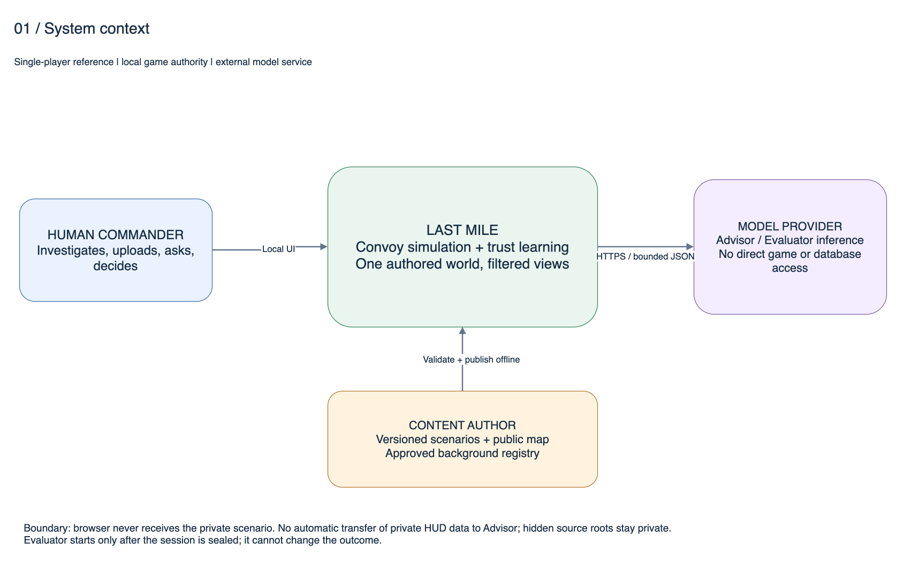
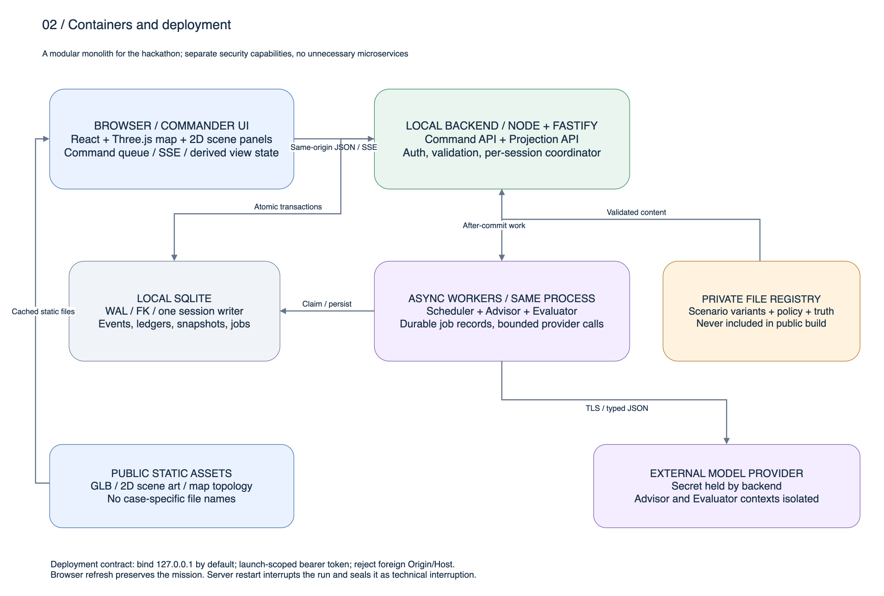
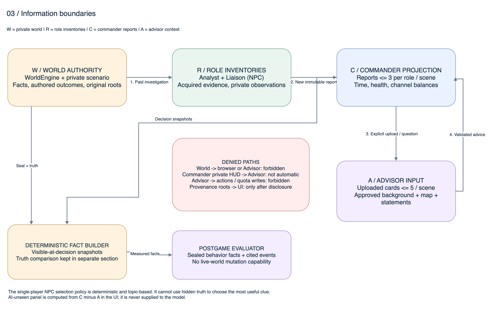
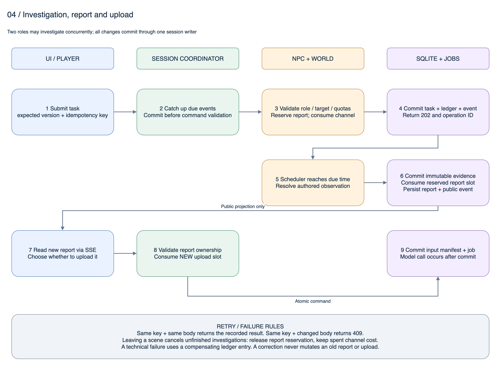
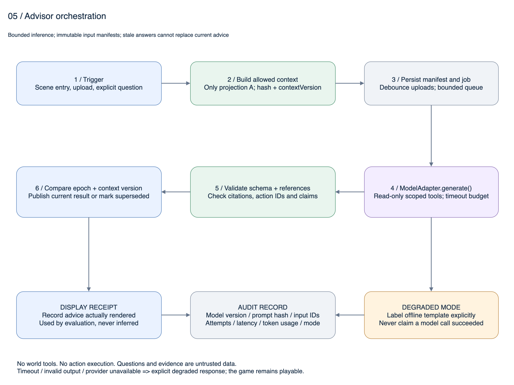
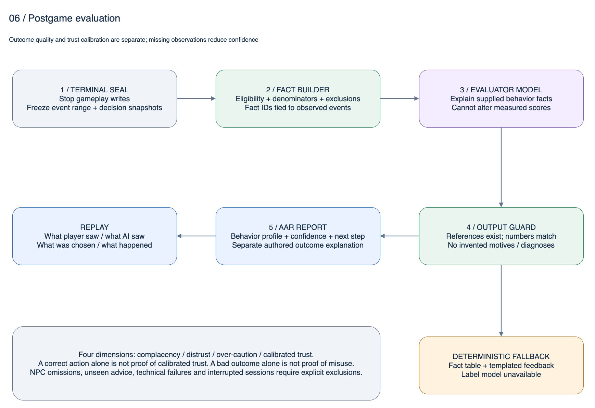
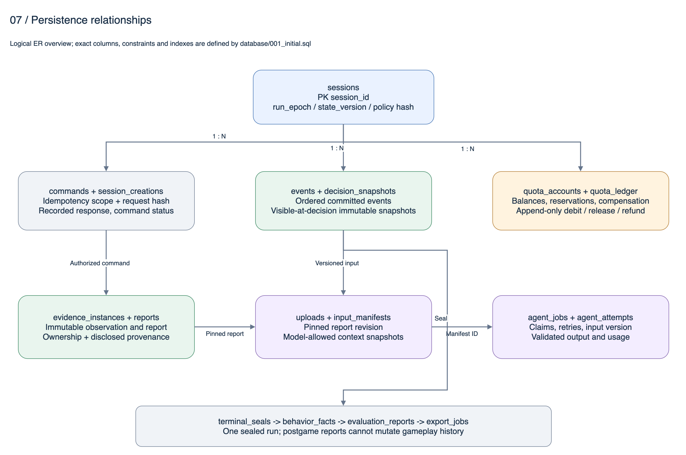
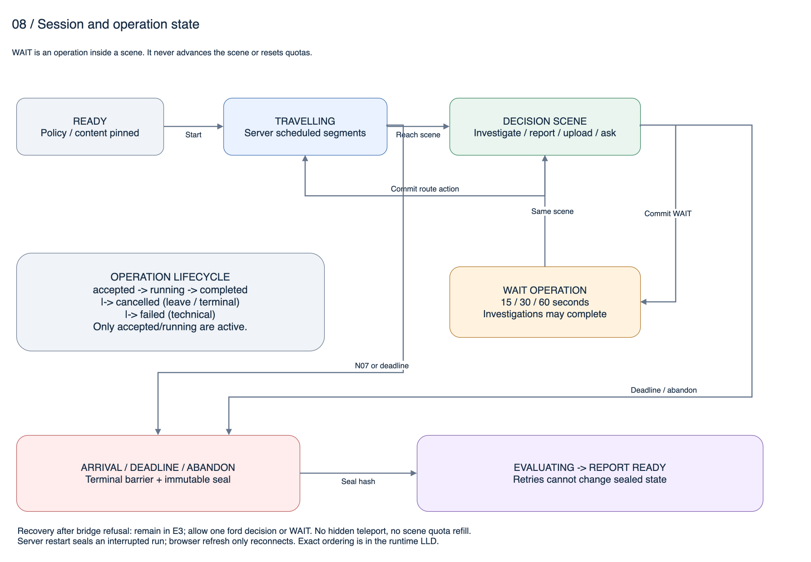

REFERENCE DESIGN · 2026.09.16
从玩法方案到
可实施的工程规格
完整产品基线、模块边界、数据库与 API、双 Agent 运行协议、预写剧情及验证证据。点击图纸可放大，目录可跳转到任意章节。
单人参考配置 · 产品待签定8 页可编辑 draw.io23 个公开 API设计契约已验证 · 游戏未实现
LAST MILE · 工程设计包 v0.5
用途：从产品评审走向逐模块实现。本版把PRD、HLD与LLD拆成可读文档和机器可验证契约，保留所有旧版本。它是完整单人参考设计；游戏服务器、网页和真实模型集成尚未开发，产品差异未自动获批。
从这里读
- PRD：目标、规则、剧情、界面与验收
- HLD：架构与八张draw.io图
- LLD：数据库与事务
- LLD：API、事件、内部端口
- LLD：Advisor/Evaluator与事实评价
- LLD：时钟、世界引擎、NPC、前端与恢复
- 剧情数据与作者规范
- 模块实施计划与40项验收规格
- 本轮实际验证结果
另有带侧边目录和表格排版的 网页版阅读入口。源Markdown仍为正文可编辑版本；机器契约为具体字段和约束的准绳。
可执行合同
完整数据库数据字典由实际DDL生成，见数据库LLD及database目录。文档中的流程名称可能是解释性短名；实际函数签名只认ports.ts，边界数据只认对应Schema。
阅读与实施规则
- 产品语义：以PRD和产品差异ADR为准。全局调查额度与新版本占新传递额度已经确认；人数冲突继续以此前单人答复为参考，尚未把文件里的三人模式视为新授权。
- 工程语义：以相应SQL/OpenAPI/Schema及端口为准。不能在实现中“先兼容一下”悄悄增加未审阅字段或权限。
- 变更处理：字段修改要同时变更Schema、例子、派生TS、LLD和测试；规则变化固定为新policy/content版本，不改进行中的session。
- 开发顺序：先契约/持久化/世界规则，再API、假模型下UI闭环，再真实模型和3D，最后评价/复盘整合与设备试玩。
- 状态报告：区分设计验证PASS、实现测试NOT_RUN和产品待确认；不得相互替代。
如何复验设计包
在包根目录执行，依赖装进团队自己的虚拟环境：
python3 -m venv .venv
.venv/bin/python -m pip install -r verification/api-requirements.txt
.venv/bin/python verification/run_all.py
Python入口运行数据库、内容、API与Agent设计检查。要同时检查TS和Adapter，提供Node与TypeScript工具：
npm install --prefix verification
LAST_MILE_NODE=node LAST_MILE_TSC=verification/node_modules/.bin/tsc .venv/bin/python verification/run_all.py
脚本遇到缺Node/tsc会明确记NOT_RUN，不伪装通过；不会调用真实模型、读取API key或修改玩家库。具体本轮环境与检查范围见09报告。
此版的边界
本版不是游戏已完成，也不是经验证的心理测评。48小时排期是待团队容量核实的参考。模型供应商/账户、目标设备、产品差异和比赛预制资产规则仍需要团队决定；这些不会由代码Agent自行猜测并冒充已确认。
公开参考资料 · 原始CORE_GAMEPLAY快照 · 工程ADR
LAST MILE 产品需求文档（PRD）v0.5
文档用途：作为工程实施和验收的产品基线。配套的 SQL、OpenAPI、Schema、提示词、剧情数据及验收用例均属于本规格；正文不能代替这些契约。
版本：2026-09-16 · 状态：完整参考设计，产品差异待签定；尚未开始游戏实现。
目标读者：团队负责人、策划、设计师、开发 Agent、人工审查者。
关联：HLD · LLD 导航 · 产品决策记录。
1. 产品定位与成功定义
LAST MILE 是一款以虚构中东风貌地区为背景的车队撤离模拟游戏。玩家护送20名平民穿过检查站、市集和河谷，在证据有限、渠道稀缺、时间持续流逝的条件下，选择进一步调查、向 AI 提问或直接采取行动。核心训练问题是：什么时候应相信 AI，什么时候应补充信息，什么时候继续调查的收益已经低于成本。
一次游玩必须完整呈现：任务简报 → 沙盘行进 → 三次可反复调查的决策场景 → 抵达/逾期/退出 → 带证据引用的行动复盘。AI 建议不直接改变世界；玩家操作与已写好的剧情共同决定结果。
1.1 必须区分的三种成功
| 层面 |
成功定义 |
不能替代它的指标 |
| 游戏结果 |
在任务窗口内抵达 N07；交接待办、伤员支持需求另列 |
AI认为“安全”、选择预设推荐路线 |
| 学习体验 |
玩家能在复盘中辨认至少一次信息缺口、证据质量或调查成本的影响 |
仅给出人格标签或分数 |
| 工程交付 |
指定设备完成完整闭环，数据不泄漏、不重复扣费、可复盘，模型不可用仍能结束 |
Schema通过、单张截图、单场演示 |
上述学习效果是产品目标，没有经过效度实验，不宣称测量了稳定人格或真实指挥能力。上线验收通过也不等于教育效果已证明。
1.2 体验目标与测量计划
- 初次玩家经60–90秒教程后，能独立提交一次调查、一次上传、一次行动。
- 完整任务预算参考10分钟，教程和复盘不占任务倒计时。
- 测试者能解释“玩家知道但 AI 尚未知道”的一条信息。
- 每次建议应展示依据和缺失信息；任何陈述不能伪装成已核实的事实。
- 试玩指标：任务完成率、操作成功率、首条有效上传时间、是否理解来源关系、复盘引用可回放率。保存分母与版本；不把频繁提问当作成功。
- 首轮至少5名无项目背景试玩者，记录阻塞、误解和时间压力；这些测试尚未执行。
2. 基线、优先级与需求冲突
2.1 已明确确认
| ID |
规则 |
在本版中的落点 |
| C00 |
此前明确：一名玩家操作，其他角色由游戏呈现 |
单人 Commander；NPC Analyst/Liaison |
| C08 |
卫星2、无人机3、当地机构3、目击者2，全局共享，不补满 |
session级资源账本 |
| C09 |
溯源核验或更正需要新的上报和上传额度，已发版本不变 |
immutable evidence/report/upload、新扣费 |
| C10 |
真实世界与玩家、AI隔离；结算使用单独评价Agent |
World/Advisor/Evaluator能力边界 |
| C11 |
沙盘为路径基础，具体决策可用2D场景 |
Three.js地图＋二维事件面板 |
2.2 本版采用的完整参考方案
content/reference-policy.json 是一套可直接实现的 review 配置。为避免开发者各自猜测，以下数值都已给出，但没有把未答复的问题写成用户承诺。
| 项目 |
本版参考值 |
原因/待签定差异 |
| 玩家模式 |
单人＋NPC角色 |
CORE_GAMEPLAY.md写三真人，与C00冲突，已询问，尚未得到新的确认 |
| 场景 |
E1西门/E2市集/E3主桥 |
旧资料同时出现3/4关；诊所保留地标但不进首版流程 |
| 时钟 |
600秒实时；无人机30秒 |
数值需试玩，卫星数据年龄10分钟不是等待10分钟 |
| 上报 |
每岗位每关3条；NPC按请求主题交付 |
单人模式无法保留另两位真人的自主选择与语音失真 |
| 上传 |
每关累计5条，不删除换位、不跨关带入 |
选“容量5”会产生不同的资源策略，须另行改基线 |
| 自由输入 |
允许；记为未经验证的玩家陈述 |
因此“AI仅知道5条事实”不成立；5是正式证据卡额度 |
| 角色能力 |
信息范围独占，无强制隐藏正确按钮锁 |
与原文“没有某岗位必过不了”有差异，避免把单人体验变成固定按钮序列 |
| AI建议 |
真实独立推理；明确离线模板兜底 |
不偷偷强迫模型给出错误结论或62%/84%概率 |
| 结算 |
四维行为指标，可混合/证据不足 |
三个决策点不足以强制给每个人确定标签 |
| 结果 |
无新增死亡剧情；抵达与交接待办分开 |
涉及后果强度与成功定义，仍属提案 |
| 桥梁拒绝 |
付出20秒后留在E3，可再选便道一次或等待 |
不瞬移、不重复补资源；避免一次试探直接失去整局 |
参考配置只允许显式 demo 启动。正式发布要把这些差异逐条签定，生成新 policy 版本与哈希；工程结构不需等待继续评审。不能在实现中同时加入多人模式作为“顺手兼容”。
2.3 范围
| P0：必须交付 |
P1：P0通过后可做 |
首版不做 |
| 三场景闭环、两套隐藏脚本 |
更丰富场景音效/镜头 |
多人账号、匹配、聊天、语音识别 |
| 3D沙盘及2D降级、2D场景 |
更细致美术、移动端优化 |
实时物理车辆驾驶、射击/战斗模拟 |
| 两NPC岗位、四渠道全局额度 |
更多剧本变体与关卡 |
生成式任意世界、模型控制剧情 |
| 上报/上传/更正/溯源版本 |
本地离线训练题 |
云账户、排行、跨设备恢复 |
| Advisor＋独立Evaluator |
批次学习效果实验 |
通用多Agent自治框架/向量数据库 |
| 确定性日志、复盘、导出 |
多语言完整校订 |
实际军事情报、真实地点行动规划 |
3. 世界、角色与信息边界
3.1 故事背景
虚构的“萨赫尔河谷”进入短暂撤离窗口。联合人道协调队将20名平民从西部集结院转送至东岸曙光接收站。通信不稳定，公共报告滞后；道路管理、救援作业和人员登记会影响行程。玩家担任车队指挥官，不负责作战，只负责人员转运与信息判断。
车上有人需要尽快接受后续医护支持。参考规则在480秒后将状态由“稳定、待转送”改为“需要优先转送”，不推导临床诊断，也不以死亡惩罚推动情绪。任务倒计时600秒表示本次接收窗口，不是真实医疗时限。
人物：玩家指挥官；分析员诺亚负责影像与道路观察；联络员萨米拉负责机构和现场说法；AI参谋提供基于输入的分析；接收站协调员只提供已写好的交接通告。人物身份与口音不作为可靠性判断依据。
3.2 信息集合
- W：服务器持有的真相和全部内容；决定各行动真实后果。
- R：分别归属两个岗位的证据库存；玩家不能直接浏览。
- C：已上报给指挥官的卡片，加上指挥官私人HUD。
- A：本关已上传卡片、经批准的一般背景、公共地图和玩家主动输入；是 Advisor 的唯一信息集。
- E：终局后封存的行为事实与单独的结果解释。评价Agent不参与游戏过程。
| 信息 |
World |
NPC对应岗位 |
Commander |
Advisor |
复盘存储/结果解释 |
| 未发生的剧情/隐藏case |
是 |
否 |
否 |
否 |
不作为行为评分捷径 |
| 本岗位查到但未上报的卡片 |
是 |
是 |
否 |
否 |
可解释漏斗，NPC遗漏不归责玩家 |
| 已上报未上传的卡片 |
是 |
是 |
是 |
否 |
是，附当时快照 |
| 已上传正式卡片 |
是 |
是 |
是 |
是 |
是 |
| 时间/伤员/额度数字 |
是 |
仅自身能力所需 |
是 |
不自动提供 |
是，按授权快照 |
| 真实同源关系 |
是 |
仅溯源取得部分 |
仅已披露 |
仅上传披露 |
可作结果解释，不倒推玩家动机 |
| AI背景库 |
注册表 |
否 |
经引用披露 |
是 |
对应输入快照 |
上表最后一列属于服务器的封存记录与OutcomeRenderer。Evaluator LLM仅收到FactBuilder输出的行为事实，不收到隐藏case、未上报库存、真实来源根或最终输赢；事后真相说明由OutcomeRenderer单独生成。
“AI尚未掌握”必须显示 C中的卡片减去A中的卡片。服务器不能把这个列表偷偷发给模型。角色库存、case ID、私有素材文件名不得出现在客户端包、SSE或网络响应。
4. 一局游戏的状态与流程
- 启动与教程：加载公开地图；展示参考/正式配置状态、模型模式；教程解释时间与两层信息选择。启动前不计时。
- 创建任务：服务器选定隐藏case，固定内容版本、规则版本、模型配置版本、runEpoch；客户端不能指定case。
- 开始：任务时钟启动，沿R00前往E1。显示行进路线和进度；不接受场景调查，允许查看任务简报。
- 场景进入：显示有限初始通告、可选路线、主题和调查目标；自动创建一次基于允许背景的Advisor初判。
- 反复调查：请求岗位调查 → 扣渠道并预留报告额 → 到时产生卡片 → NPC上报 → 玩家选择上传 → AI重算 → 追问或继续调查。
- 行动：玩家提交路线/等待，服务器拍摄决定时的信息快照、检查版本并提交。模型没有提交行动的入口。
- 转场：路线行动离开本幕；取消未完成调查、保留已花渠道费用、释放未兑现的报告预留。等待留在本幕，调查继续完成。
- 终局：抵达、窗口到期、主动退出或技术中断；先封存，再生成评价。迟到的AI输出不改写已做决定。
4.1 行为规则与验收
| ID |
功能、具体规则 |
失败/边界行为 |
验收证据 |
| FR01 |
仅一名Commander最终行动 |
NPC/Agent身份不能调用行动写接口 |
越权请求403 |
| FR02 |
四渠道总额2/3/3/2，整局共享 |
余额不足422；换关不补满 |
跨E1→E2余额连续 |
| FR03 |
各岗位每关报告3，预留计入可用额 |
第四条不可接受；已占满时不先扣调查渠道 |
并发请求只一个成功 |
| FR04 |
两岗位可同时调查，每岗位只一件活跃任务 |
同岗位重复任务422；不同岗位时长取各自到期点 |
一个公共时钟，无时间双扣 |
| FR05 |
报告选择由主题、优先级、取得顺序决定 |
无匹配证据则明示失败，不生成“猜测事实” |
NPC选择不访问truth字段 |
| FR06 |
每关累计上传5条，引用报告固定版本 |
相同报告重复上传不再收费；新更正/溯源收费 |
原卡正文与哈希保持不变 |
| FR07 |
允许自由提问、快捷追问 |
超长文本拒绝，未知证据不能冒充正式引用 |
陈述标“玩家提供，未核验” |
| FR08 |
来源图只连已披露的关系 |
未溯源时画“未知”，不能根据私有root自动连线 |
有无付费溯源的对照视图 |
| FR09 |
Advisor每次建议有依据、局限和缺口 |
不输出未经标定的精确危险概率 |
Schema+引用语义守卫 |
| FR10 |
旧建议保留标“已过时” |
新旧请求逆序返回，不覆盖最新建议 |
contextVersion逆序测试 |
| FR11 |
WAIT 15/30/60秒，不离幕 |
期间不能再开第二个行动；可完成调查、上传、追问 |
sceneId和额度不变 |
| FR12 |
行进按服务端轨迹播放 |
任意路线ID/客户端传目标坐标均不可驱动车队 |
路径只能由action计划产生 |
| FR13 |
终局只能封存一次 |
重发结束不二次结算；迟到任务取消 |
seal唯一及只读约束 |
| FR14 |
评价区分结果与过程 |
没看到建议不能算盲从；没调用AI不能直接算不信任 |
事实规则负例 |
| FR15 |
评价支持混合和证据不足 |
中断/降级使模型相关维度排除或降置信 |
输出包含排除理由 |
| FR16 |
可回放与导出 |
导出仅终局；外部模型原始响应/密钥不导出 |
导出Schema与敏感字段扫描 |
| FR17 |
断网与模型故障不锁死行动 |
显示降级，允许直接判断 |
离线完整三关流程 |
| FR18 |
所有更正创建新实例 |
不覆盖之前的上传、推理输入或决定快照 |
修改/删除SQL触发器拒绝 |
| FR19 |
双击/重试不重复花资源 |
相同key不同body为409 |
网络响应丢失后重发 |
| FR20 |
时限由服务端决定 |
改本地时间/刷新不能重置；服务端重启技术封存 |
假时钟＋恢复用例 |
5. 三幕剧情与分支
可执行私有脚本见 campaign-reference.json。所有case的初始公共文案、可请求目标和一般背景相同，差异通过调查结果或真实行动后果显现。
| 场景 |
初始线索与冲突 |
可执行行动 |
主要训练点 |
| E1 西门 |
主门可登记，服务路可绕行；电子登记当前状态未知 |
MAIN：核验后前进；BYPASS：绕行并留下补录待办；WAIT |
历史观察与当前状态；要不要花资源核实 |
| E2 市集 |
爆响与白色皮卡传闻，主路当前状态未知 |
MAIN：主路，遇阻按写好路线退回；BYPASS：连接路；WAIT |
四个转述可能同源；道路观察不等于原因判断 |
| E3 主桥 |
桥面形状与车辆通行许可可能不同 |
BRIDGE：申请过桥；FORD：经便道；WAIT |
结构、许可、时间成本分别考虑；用剩余信息作决定 |
5.1 隐藏脚本
- A：西门电子登记在线；市集主路隔离未完成；主桥允许车辆。市集直行会导致返程和绕行，但不凭空制造袭击。
- B：西门电子登记离线并需额外90秒纸面核验；市集已有单侧车道可走；主桥车辆暂停。申请过桥后留在E3，玩家知道拒绝结果，再选便道或等待。
- 两个case的爆响原因都不被传言直接证实。它影响推断训练，但不是隐藏“敌军位置”的谜题。
- 路线后果只使用作者给出的步骤，AI不能新增障碍、改变桥梁状态或决定谁受伤。
5.2 时间、待办与结局
| 动作 |
A基础时长 |
B基础时长 |
后续影响 |
| 初始R00 |
30秒 |
30秒 |
到E1 |
| E1 MAIN |
65秒 |
155秒 |
已登记 |
| E1 BYPASS |
130秒 |
130秒 |
manifestPending=true |
| E2 MAIN |
245秒 |
75秒 |
A增加inspectionPending |
| E2 BYPASS |
145秒 |
145秒 |
无新增待办 |
| E3 BRIDGE |
105秒 |
拒绝20秒 |
B仍在E3 |
| E3 FORD |
200秒＋条件办理 |
200秒＋条件办理 |
N10补录20秒/检查25秒，办理后才清除 |
这张表是作者/测试者资料，不能作为当前case答案直接放进游戏HUD或发给Advisor。玩家只看公共路线基础耗时及已经观察到的情况。A参考路径345秒、B参考路径455秒，不含玩家思考/调查；这只能证明存在时间可行路径，不能宣称已经平衡。
结算至少区分：按时抵达、抵达但有交接待办、窗口到期、主动退出、技术中断。20名乘员人数不能因为评分模型一句话而改变。
6. 界面规格
6.1 全局布局与交互
参考桌面最小1280×720；优选1440×900。顶部固定HUD（时间、20人、转送状态），中央地图/场景占约60%，右侧Advisor约35%，底部行动条常驻。报告列表不能被模型长回答挤走。色彩与图标、文本同时编码；状态不能仅靠红绿区分。
| 页面/区域 |
必需字段 |
主操作 |
空/忙/错状态 |
| 启动页 |
内容版本、运行模式、简要规则 |
教程、创建任务 |
素材加载失败→二维地图；模型不可用→明确离线模板 |
| 路径地图 |
节点、路线、车队位置、预计基础旅程 |
镜头复位、查看已知路线 |
3D失败不影响状态和计时 |
| 场景面板 |
当前标题、有限通告、2D图、岗位主题 |
请求上报/调查 |
同岗位忙时显示剩余进度；不足额度说明原因 |
| 岗位请求抽屉 |
recipient、channel、目标、耗时、渠道/报告余额 |
确认提交 |
清楚显示“消耗1次渠道＋预留1次报告” |
| 上报卡列表 |
标题、来源、观察范围、时效、版本、核验状态 |
展开、勾选、溯源、上传 |
新版本并排标注，不改老卡 |
| 上传区 |
本关已用/总额、待选数量 |
上传选中项 |
全部原子提交；超额不部分扣费 |
| Advisor |
当前建议、依据引用、局限、不确定性、输入版本、模式 |
4快捷追问＋自由输入 |
生成中不阻塞行动；旧回答显示过时；失败提供重试或模板 |
| AI尚未掌握 |
玩家收到但尚未上传的卡片 |
回到上传选择 |
为空明确显示“当前报告均已上传”，不宣称掌握全部真相 |
| 来源图 |
已披露的卡片关系与来源说明 |
展开来源核验报告 |
未核验用未知节点；不自动显示隐藏root |
| 行动条 |
公共行动名、基础路线、耗时提示 |
前进/绕行/等待 |
提交中防双击；行动有效性以服务端响应为准 |
| 复盘 |
结果、行为四维、证据不足、时间线、下次建议 |
跳到决定快照、导出、新一局 |
评价失败仍展示确定性事实和结果 |
6.2 各场景美术与功能分工
- 西门2D图：岗亭、车道、排队区、南侧服务路方向标；进入时使用中性场景，不画屏幕在线/离线的答案。收到无人机卡后在卡内呈现对应观察图层。
- 市集2D图：市集建筑、远处烟尘、救援车辆剪影；不通过初始艺术图暗示当前道路开放与否。来源图是交互重点，四个声音不能直接画成四个独立传感器。
- 主桥2D图：桥头、河床入口、东岸指向；是否允许车辆只在侦察卡/现场行动结果明确后改变标识。
- 3D沙盘：用于地理连续性、车队行进和路线比较；不用3D实时模拟调查。所有按钮仍使用普通网页组件以便键盘操作。
- 初版使用已有资产；新增三幕素材需标注版权/来源、导出分辨率与public安全检查，不能把私有case写进文件名。
6.3 交互细则
- 每次发送后保持选中的报告版本。若新更正到来，提示可再发送，但不能静默替换。
- 场景切换时清空输入草稿、选中项和本幕AI当前回答；旧记录在历史中只读。正式卡额度按幕重置，渠道额度不重置。
- 玩家打开弹窗、看来源图、AI生成时任务时钟继续。教程明确说明；不能用浏览器隐藏标签暂停计时。
- 行动前只要求一次明确点击；选择高成本路线时显示已知成本，不泄漏隐藏风险。不要额外加反复确认阻碍演示。
- 行动/调查区提供默认收起的可选“记录我的考虑”：reasonAnnotation默认null，不填写也能继续；自报理由是有限证据，不是心理事实。
- 键盘 Tab/Enter 可完成全部关键流程；动画支持减少动态效果；文字不嵌死在图片中。
7. AI产品规则
Advisor和Evaluator为两个隔离的运行上下文，可以共用供应商适配器，但不共用聊天历史、工具权限或可写状态。实现规格、系统提示词、工具Schema和事实评分规则见 Agent LLD。
Advisor必须：区分观察/说法/玩家陈述；引用实际输入；承认未知；说明建议依赖的假设；建议调查时考虑能查询的渠道但不能知道余额；不得替玩家执行行动。背景库提供一般规则，不隐藏本局答案。
Evaluator必须：先使用程序计算的行为事实，再写自然语言解释；同时报告支持与反例；把“证据不足”视为有效输出。不得仅因为采取AI建议就判过度依赖，也不得仅因为拒绝就判过度怀疑。过度谨慎需要可观察的重复调查、时间压力和新增信息量证据；不能从犹豫时间猜测心理。
8. 非功能需求和验收门槛
以下是实施后的目标，当前不是实测成绩。
| ID |
目标 |
测量条件/判定 |
| NFR01 |
普通本地命令P95≤200ms，P99≤500ms |
模型等待剔除；目标电脑，单会话1000次合法/冲突混合命令 |
| NFR02 |
UI在本地确认后≤500ms展示提交结果 |
网络状态明示；不乐观修改余额 |
| NFR03 |
3D≥30fps，首次可操作≤8s |
1440×900目标电脑；失败自动2D；需实际测量 |
| NFR04 |
Advisor总等待有界，故障仍可行动 |
具体timeout/retry取agents配置；UI5秒显示较慢提示 |
| NFR05 |
无重复扣费/负余额/跨session证据引用 |
DB约束＋API并发测试全部通过 |
| NFR06 |
无真相泄漏 |
构建包、API/SSE、Advisor输入、错误和日志分层负例通过 |
| NFR07 |
回放100%引用可解析 |
所有被评价的事实能定位sealed事件；缺失则排除 |
| NFR08 |
可重现演示 |
内容hash、policyhash、prompt hash、provider/model版本、随机case保存在本地 |
9. 验收与实施边界
必须经过：契约检查 → 数据库测试 → 世界规则测试 → 隔离/权限测试 → 假模型闭环 → 真实模型评测 → 目标设备试玩 → 比赛演示演练。检查清单与具体输入输出见 实施与验收。
本版交付的是规格、可执行契约和设计验证；不是完整游戏，不以静态脚本通过冒充模型质量或游戏可玩性。签定产品差异后逐模块实施，模块是否完成以工作产物和验收证据为准。
LAST MILE 高层设计（HLD）v0.5
评审目标：说明系统边界、模块职责、数据流、故障策略及关键取舍；接口字段与SQL以相应LLD为准。
基线：单人参考配置；全部待签定产品差异见 ADR-001。
1. 设计摘要
采用本地网页客户端＋单个模块化后端＋SQLite。世界引擎拥有游戏状态，所有玩家命令进入同一个会话协调器。异步调查由持久任务记录与调度器完成；AI调用在数据库事务之外执行。客户端接收专门的公开视图，永远不下载完整剧情。
逻辑上分成三个世界：预写真实世界、受限信息中的玩家与Advisor、终局后独立评价。它们不是三份能互相任意读取的数据库连接。通过模块依赖限制、明确投影函数、封闭Schema和负向测试共同执行隔离。
这是适用于小团队hackathon的工程方案。没有Kafka、分布式锁或微服务；可靠性来自单一写入顺序、幂等命令、数据库约束、版本化输入和可重放日志。增加并发用户时才需要重新评估部署，而不是先把复杂度移到基础设施。
2. 图纸导航与读法
所有图均用原生可编辑draw.io XML保存，并由draw.io桌面版实际导出PNG。不是把截图嵌入draw.io冒充可编辑图。图中的短标签用英文，概念解释用中文；每张图只解决一层问题。
完整八页源文件
2.1 系统上下文

唯一人类操作者是指挥官。内容作者在运行前发布脚本；模型服务只执行受限推理。将来多人模式会改变授权、角色库存入口、协同和评价单位，必须单独ADR，不能仅增加两个浏览器页面。
2.2 容器与部署

| 容器/部署单元 |
输入输出 |
存储/权限 |
故障隔离 |
| Web Commander UI |
HTTP命令；SSE公开事件 |
无truth，无API key；仅当前公开会话视图 |
渲染故障可2D降级，刷新重新同步 |
| Local Backend |
API/任务调度/模型worker |
唯一DB写入；私有注册表访问受模块端口约束 |
模型异常不退出API进程 |
| SQLite |
事务、约束、查询 |
WAL，外键启用，启动schema检查 |
写失败不显示成功；留存诊断 |
| Private registry |
固定版本剧情、policy、背景 |
服务端专用路径，禁止静态挂载 |
内容校验失败不创建任务 |
| Public assets |
GLB、2D插图、公开地图 |
文件名无case；可缓存 |
缺3D时2D；基础地图缺失阻止start |
| Model provider |
固定提示词、allowed input、工具响应 |
仅后端密钥；无DB/World能力 |
超时/限流/无效输出→标注模板 |
参考运行时使用Node24 LTS，HTTP层Fastify、界面React/TypeScript、地图Three.js。实现M0阶段固定具体库版本与lockfile并做兼容构建；本设计不把未安装的依赖写成已验证。Node24的LTS状态已查官方发布表。Node.js发布周期
3. 组件职责和依赖
3.1 后端模块表
| 模块 |
owns：唯一负责的内容 |
允许调用 |
禁止 |
| CommandAPI |
鉴权、JSON校验、错误映射 |
SessionCoordinator |
直接SQL扣费、拼接prompt |
| SessionCoordinator |
单会话序列化、幂等、版本、事务边界 |
Store、World、Broker、Reporting、Upload、Scheduler |
事务内调用外部模型 |
| WorldEngine |
纯函数计算动作计划与后果 |
私有已验证内容、状态快照 |
接受模型任意世界描述、网络访问 |
| Scheduler |
按dueMs结算调查/路径/截止事件 |
Coordinator系统命令入口 |
绕过终局barrier写状态 |
| InvestigationBroker |
角色/目标/渠道校验、并发和成本 |
NpcRoleController、Ledger、World观察端口 |
向玩家泄漏角色未报库存 |
| NpcRoleController |
根据请求主题选卡/交付 |
本岗位Inventory、公开优先级 |
用truth估计哪条最能赢 |
| ReportingService |
创建不可变报告/释放预留 |
Inventory、Ledger、EventStore |
修改旧报告正文 |
| UploadService |
检查Commander拥有报告、冻结输入 |
Reports、Ledger、ManifestStore |
接收客户端自造证据正文 |
| ProjectionService |
World/R/C/A/E各视图的显式构建 |
只读Store、公开注册表 |
对DB行做对象展开后“删几个字段” |
| AdvisorOrchestrator |
允许上下文、任务去重/取消、调用验证 |
ModelAdapter、A-view、ApprovedBackground |
World、私有库存、动作写入口 |
| FactBuilder |
决策事实、分母、排除项 |
sealed events/snapshots |
从生成文本猜心理动机 |
| EvaluatorOrchestrator |
对事实做可读解释 |
ModelAdapter、sealed FactBundle |
更改分数、改结果、调用Advisor历史全量原始上下文 |
| OutcomeRenderer |
作者结果解释 |
sealed truth＋执行记录 |
将真相优势倒填到行为评分 |
| ModelAdapter |
供应商协议、用量、流式/JSON边界 |
provider SDK/HTTP |
引入业务决策或自动重试写命令 |
| SQLiteStore |
事务、prepared statements、索引 |
DB |
作为“万能Repository”暴露给所有模块 |
模块依赖通过TypeScript导出端口和测试执行；所谓隔离不是只写一句prompt。对Advisor做依赖扫描与越权工具测试。数据库本身不提供每模块数据库用户，应用必须禁止跨边界import。
3.2 前端组件
AppShell → SessionGate → CommanderScreen → {Hud, MapViewport, ScenePanel, TaskDrawer, ReportsPanel, AdvisorPanel, ProvenanceDialog, ActionBar}；终局进入OutcomeScreen → AARPanel → ReplayDrawer。
只有SessionStore保存服务端确认的权威投影；UI局部Store保存筛选/草稿/弹窗，不保存第二份游戏规则。地图负责呈现，不能自行判定已到达下一关。API客户端从OpenAPI生成，Schema构建检查防止手工DTO漂移。
4. 信息与能力边界

4.1 数据投影规则
| 投影 |
允许字段来源 |
版本变化原因 |
| CommanderView |
public map、当前可见状态、report、余额、HUD、已验证advice |
有意义状态提交；不逐帧更新DB |
| AdvisorInput |
public map/position、已上传的本关卡片、approved background、玩家陈述 |
显式上传/问题/场景进入/公开合法动作集合变化；不因私人时钟变动重算 |
| ProvenanceView |
已向Commander披露的核验边及可见报告 |
新的核验上报；不是按rootId自动聚类 |
| EvaluatorInput |
terminal seal、FactBuilder输出、准许的事件引用 |
只针对sealedHash生成，一次版本一份 |
| ReplayView |
当时玩家可见快照、AI实际展示记录、选择与结果 |
终局后只读；author truth另区，不能伪装当时信息 |
封闭Schema、内容标记扫描不能证明语义上完全不会泄漏，因而还要用“更改隐藏case但保持A相同”的对照测试。AdvisorInput字节应相同；模型自身随机性不用于判断投影是否泄漏。
4.2 模型看不到≠不知道任何东西
基础模型仍含一般知识；本系统保证不主动给它本局隐藏脚本。地图、经允许的背景或玩家自由输入可能带来推断。不能在宣传中声称模型被数学保证只知道5条事实。
自由文本中的“还有30秒”是玩家主动信息传递，按未核验陈述进入A；不把它偷偷提升为服务器真值。若产品最终要求严格5事实边界，就应禁止新事实自由输入并改变对应Schema和UI。
5. 关键数据流
5.1 调查、上报、上传

- 调查接受事务同时写command、task、investigation、channel debit、report reservation、event和响应缓存。
- 到期完成事务创建EvidenceInstance、归属、Report和事件，将预留变成消耗，不二次扣报告额度。
- 玩家上传报告ID和固定revision，服务器复制内容到新的输入manifest；客户端不能上传伪造的“官方无人机报告”。
- 付费溯源产生新EvidenceInstance和Report，再上传时消耗新的上传额度。旧版本保持原样。
- 一次批量上传原子成功或整体失败，去重项不二次收费。没有“前两条成功第三条失败”难以解释的隐式部分结果。
5.2 Advisor

每个模型任务固定manifest hash、prompt version、model config hash和assistantContextVersion。任务完成时再次检查runEpoch、场景、context version和终局状态。迟到结果存档为superseded，可在复盘说明，但不覆盖当前面板。
输出先做JSON Schema验证，再检查引用ID、行动ID、数值范围、背景引用权限与禁用字段。仅有“格式合法”不足以证明建议真实可靠；模型质量还需真实推理评测。详细预算、重试条件、工具和降级见Agent LLD。
5.3 封存与评价

终局事务阻断游戏写入、取消未完调查/操作，固定event range和hash。评价以sealedHash幂等创建，不使用过期的expectedStateVersion。FactBuilder把“当时显示了什么”和“玩家怎么操作”变成可核验事实；Evaluator只能解释事实，不能重写程序计算的结果。
行为评分没有隐藏真相后见之明。作者真相只用在独立结果说明区：“实际主路封闭，因此发生返程”；不能据此称“玩家明知封闭仍听AI”。后一句只有在对应信息实际展示、引用成立时才可评价。
6. 持久化和一致性

数据字典、物理表、索引、触发器、migration和具名事务见 数据库LLD。事件日志是审计事实，不采用每次读都从零重放的纯event-sourcing。session表保存当前投影和版本，immutable事件/快照用于恢复检查与回放。
6.1 不变量
- session的内容/规则/case创建后固定；新规则只影响新会话。
- 一个ID必须在同session中被引用；UUID不可猜不能替代授权。
- channel/report/upload的可用额均不能为负；reservation和charge分别记录。
- 已接受证据、报告、上传、manifest和seal不能被原地改写。
- command幂等键＋规范化请求hash唯一；成功重试返回原响应。
- 终局后没有gameplay事件；允许模型评价/导出等postgame记录，但不能改既有event range。
- 模型调用永远在事务外，允许任务执行多次，发布与业务扣费只允许一次。
- 展示回执不等于用户认同；未有回执的建议不能计入“玩家已看到”。
6.2 事务排序
每个session持一个异步互斥队列；SQLite事务再提供持久原子性。每次新命令先查已成功的幂等响应，再结算真实已到期事件，独立提交；之后校验版本并执行业务事务。这样一个过期命令失败不会撤销已经经过的时间。
SQLite同一时间只有一个写事务；使用短事务和prepared statements，不在其中运行LLM或长时间文件导出。SQLite事务说明
7. 时间、状态与恢复

进程内时钟使用单调时间，missionTime=anchorMissionMs+(monotonicNow−anchorMonotonic)。系统事件按dueMs、类型优先级、稳定ID排序；到达与截止同刻时先处理到达，意味着“截止时刻抵达”成功。调查到期同刻允许交付，但终局之后不再接受新的上传/行动。
普通浏览器刷新不断局，重新获取snapshot和SSE；服务器进程崩溃/重启则将活跃任务技术封存，不伪造玩家离线期间的决定。首版明确不做跨重启继续同一局，避免壁钟改动和进程外时间漂移造成不公平。可创建新局，评价排除被中断数据。
调度器扫描持久dueMs记录；即使计时回调延迟，也按计划到期时刻结算，不能按唤醒时刻重复加时。具体算法在运行LLD。
8. 可靠性、故障与可观测性
| 故障 |
系统反应 |
用户体验 |
运维证据 |
| API响应丢失 |
相同idempotency重发返回缓存 |
不重复扣费 |
request/command关联 |
| 版本冲突 |
409＋新版本，前端重新取快照 |
显示状态已更新，用户重新判断 |
conflict计数 |
| SSE断线 |
Last-Event-ID重连；缺口要求snapshot |
“正在同步”，短时禁用变更按钮 |
cursor-gap/lag |
| Model超时/429/结构错误 |
有界重试或标模板 |
继续行动，模式显式 |
attempt reason/latency/tokens |
| DB_BUSY |
短重试，总预算≤500ms；否则503 |
同key安全重试 |
busy时长 |
| 空间不足/IO异常 |
回滚，不返回成功；健康降级 |
提示本局无法保存，允许安全结束 |
storage_error、临时诊断 |
| GLB加载/显卡失败 |
public-map 2D模式 |
玩法完整但画面简化 |
asset_load_ms/fallback |
| 服务端重启 |
活跃局technical interruption seal |
保留可复盘记录，启动新局 |
boot_id/recovery_event |
| 导出失败 |
export job失败，可重试 |
原游戏/评价不受影响 |
export error无私密payload |
日志统一包括requestId、sessionId（本地可查）、commandId/jobId、stateVersion、elapsedMs、resultCode。默认不记录玩家自由文本、完整prompt、模型原始响应或密钥。需要调试原文时由本地显式debug配置开启并标清保存位置；导出仍只使用白名单。
指标：命令延迟分位数、409/422次数、余额约束失败、SSE滞后、任务排队/取消、模型模式与失败原因、每局实际用量、引用守卫拒绝、降级比例、terminal与AAR耗时。不得把模型fallback和live_model合并计算“AI成功率”。
9. 安全、隐私与打包
- 默认只监听127.0.0.1；启动生成随机launch token，浏览器端只存当前启动会话内存/sessionStorage。外网部署不是同一安全方案。
- 校验Host/Origin，禁用宽泛CORS；所有session资源按launch绑定校验。Native EventSource不能设置Authorization时使用fetch流式SSE；不把bearer token放URL日志。
- 私有scenario、DB、模型key不进入public目录/前端bundle。公开素材使用内容hash，不使用A/Bcase作为可枚举路由答案。
- 读取模型工具只接受manifest内已有ID；不接受任意URL、SQL、文件路径、shell。提示词注入只作为不可信文本处理。
- 模型调用上传哪些内容在首次使用说明中清楚呈现；默认仅存本地会话，无遥测上传。
- 会话导出为结构化回放包，按用户动作生成。模型key、原始provider错误堆栈、私有未来关卡不导出；终局真相说明只包含本次发生的作者解释。
- 保留策略：开发机默认本地保存最近30天/最多100局，启动时仅提示清理建议，不自动删除本次设计资产；正式清理作业在实现时带导出提示并遵守用户设置。
10. 版本、部署与演进
目录建议：apps/web、apps/server、packages/contracts、packages/domain、packages/agents、content/private、assets/public。Schema作为唯一边界定义，生成TS客户端；生成文件不能手改。
发布产物固定版本manifest：build、DBschema、content、policy、prompt、modelConfig、publicAssets。启动比对兼容性；未知DB版本fail closed。migration先备份并校验，再事务迁移；回滚通过恢复备份，不破坏旧数据。测试数据库与玩家会话数据库隔离。
后续多人扩展影响ADR-001、actor auth、R-view公开接口、角色命令、SSE分流和评价归因；不复用本地launch token当多人安全模型。多实例扩展才考虑PostgreSQL与持久任务队列，保持OpenAPI、领域规则和模型输入契约可迁移。
11. 设计参考与适用范围
参考C4的分层图、Google公开代码评审关注项和Microsoft公开API指导，目的是让边界、取舍和验证证据可审查；它们不是统一的“FAANG PRD模板”。C4图层、Google评审要点、Microsoft API指导
接口锁定OpenAPI3.1.1与JSON Schema2020-12，兼容工具生态，不宣称3.1.1是最新规范。OpenAPI 3.1.1
03 · 数据库详细设计
状态：工程评审稿。 本文与可执行 SQL 一起定义持久化边界，不包含游戏服务器实现。SQLite 在本机后端私有进程使用，浏览器和两个模型均不持有数据库连接。当前单人参考方案里的 NPC 自动交付、实时 600 秒、每场景上报 3 / 上传 5、累计上传等仍属待评审产品选项；已确认的是调查资源整局共享，以及新溯源/更正另占新的上报与上传额度。
1. 交付物与运行入口
从交付包根目录运行 python3 verification/test_database.py。只用 Python 标准库，不访问模型或网络、不启动游戏，不写入用户已有数据。SQL 需要 SQLite 3.38+；交付时实际验证使用 SQLite 3.51.3。SQLite 版本较旧时启动明确拒绝，不悄悄跳过 STRICT 或 JSON 约束。
每个数据库连接初始化：
PRAGMA foreign_keys=ON;
PRAGMA journal_mode=WAL;
PRAGMA synchronous=FULL;
PRAGMA busy_timeout=500;
迁移文件自带 foreign_keys=ON 和 BEGIN IMMEDIATE/COMMIT；journal_mode 在连接初始化且无活跃事务时设定。读连接可设置 query_only=ON。写操作经唯一 SQLiteStore/SessionCoordinator；WAL 允许并发读取，但 SQLite 仍只有一个写事务，模型网络请求不得持锁。
2. 数据域、拥有者与读取规则
| 域 |
主表 |
唯一写入边界 |
允许读取者 |
| W：私有世界与规则 |
content_versions、policy_profiles、sessions.world_state_json |
ContentRegistry / WorldEngine |
WorldEngine、Scheduler；不直接暴露 API 或模型 |
| I：岗位已获得信息 |
evidence_instances、provenance_disclosures、investigations |
InvestigationBroker、RoleInventory |
对应 NPC 岗位；指挥官没有原始库存接口 |
| C：指挥官已收到 |
reports、public_records、display_receipts |
ReportingService、ProjectionService |
指挥官 UI、其行为截面构建器 |
| A：AI 获准输入 |
uploads、input_manifests、成员表、player_statements |
UploadService / Advisor 输入构建器 |
AdvisorOrchestrator 只读冻结输入 |
| 过程与额度 |
tasks、operations、quota_*、events、commands |
SessionCoordinator 同事务写 |
相应投影；私有日志不原封公开 |
| 封存与独立评价 |
terminal_seals、decision_snapshots、behavior_facts、evaluation_reports |
Seal / FactBuilder / EvaluatorOrchestrator |
OutcomeRenderer 读 Outcome；Evaluator 只读事实投影 |
| 技术执行与历史访问 |
launches、launch_session_access、agent_jobs/attempts、export_jobs、diagnostic_records |
相应技术服务 |
本机授权接口、脱敏诊断 |
SQLite 无内建行级角色权限，本设计不把触发器当成数据库账号隔离。防泄露依赖私有进程边界、明确服务端口和白名单 DTO；SQL 的同局外键提供第二道结构性防线。模型不得调用通用 SQL、任意文件、库存列表或隐藏规则工具。
2.1 关系主链
launch → session → actor_binding
├─ quota_account ← quota_ledger
├─ task → investigation → evidence(instance,revision)
│ └─ report → upload
│ └─ input_manifest → advisor job → attempts
├─ events → public_records → display_receipts
│ └─ decision_snapshots
└─ terminal_seal → behavior_facts → evaluator job → evaluation_reports
└─ export_jobs
new launch → launch_session_access → original commander binding（历史只读，不续局）
所有局内实体引用都携带 session_id。例如 upload 引用 (session_id,report_id,report_revision)；从另一局拿到合法 UUID 也不能通过外键或报告接收检查。内容及 policy 是全局不可变版本，session 创建时固定哈希；运行中不能切换私有 case、规则版本或 runEpoch。content_versions.content_version_id 是内容注册时由后端生成的全局不透明 UUID，NOT NULL 且 UNIQUE；content_hash 仍是内部主键及 sessions/seal 的外键。公共 SessionProjection.contentVersionId、WorldSnapshot.contentVersionId 和内部 ContentRegistryPort 使用这个 UUID：投影按 session 的 content_hash JOIN 注册表取 UUID，内部 Registry 按 UUID 解析私有内容版本。禁止用未声明的 registry_json 字段、哈希或哈希截断串代替 UUID；旧映射随内容版本一起不可修改。
2.2 原角色身份与新启动授权不同
actor_bindings 描述当局行为主体，局内每个角色唯一且不可变。重启后历史查看使用新的 launch 和 launch_session_access，指向原 commander binding。可授 commander.read，并按启动器权限授 evaluation.request / export.request；不能给旧 terminal 局重新授 commander.command。访问授权不是新的游戏行为，因此不修改 seal、状态版本或原角色身份。无公开“恢复运行”端点。
授权查询必须同时检查：当前 token 属于尚有效的 launch；grant 的 session 与路径一致；绑定角色正确；endpoint 所需 capability 存在；gameplay 还要求原 launch、同 runEpoch、非 terminal。SQL grant 插入检查角色、原 launch 与 terminal 条件；后续请求仍必须重复验证，不因为历史上存在 command grant 就继续允许终局写入。
3. 不变量与执行位置
| 不变量 |
数据库保证 |
应用还必须保证 |
| 不串局 |
所有局内复合 FK；报告/上传/行为主体额外 trigger |
路径 session、token、capability 一致；每次查询携带 session |
| 不重扣 |
command 唯一幂等键、ledger 唯一因果组、父金额上限 |
先查原成功回执再校验旧版本；同键异摘要返回 409 |
| 余额非负 |
available/reserved/spent CHECK；合计 capacity；合法 delta；禁止直接改余额 |
原因码授权；技术补偿不能由玩家请求伪造 |
| 每岗一个任务 |
active task 部分唯一索引；调查另有 active role 索引 |
当前 phase 允许、NPC 选项/公共目标有效 |
| 调查完成才获知 |
有调查来源时要求已 completed 且 acquired≥due |
NULL 调查来源只能用于作者明确预置资料；不能用 NULL 绕过观察 |
| 原信息不可改 |
evidence/report/upload/manifest/事件/快照 immutable triggers |
更正另生成新版本及新额度；正确关联旧证据 |
| AI 只收已上传 |
manifest 成员 FK 指向 uploads；同场景、最多 5、完成后封口 |
permitted_input_json 与成员一一对应、允许字段 schema、文本来源语义不泄漏 |
| 一个当前 Advisor |
单局 queued/running 部分唯一索引；输入绑定不可改 |
已成功历史结果用 current 投影判断，不修改成 superseded |
| 调用有界 |
单 job ≤2 attempts、单局 Advisor ≤30 sending；顺序与终态不可改 |
服务商超时/格式错误/恢复共用预算，不能创建新 job 规避 |
| 终局不改世界 |
reciprocal deferred seal FK；无活跃工作/预留额才可 seal；终局写屏障 |
WorldEngine 判定终止条件、规范化 seal 哈希、严格同步封存 |
| 评价无后见之明 |
facts 引用封存与原截面，cutoff 必须匹配 |
FactBuilder 只使用当时合法信息；EvaluatorInput 不含 Outcome/隐藏真相 |
| JSON 有效 |
json_valid、object/array 顶层类型 |
JSON Schema 2020-12、完整联合类型、枚举语义、UUID 格式、字数/引用守卫 |
SQL 层的 UUID 多数为长度检查，哈希多数为长度检查；字段合法外观不能证明权限或内容正确。规范序列化固定 UTF-8、递归键序、无多余空白、数组保序、拒绝非有限数，整型不超 JS 安全整数；内容/输入/配置/快照/seal 的 SHA-256 都由对应构建器计算。不要把 hash 当成数字或采用未固定顺序的 JSON stringify。
4. 时间、版本与原子提交
4.1 一次命令的精确顺序
- 本机 HTTP 边界验证 token、origin、body/schema，解析实际 actor binding。进入该 session 的串行互斥锁。
- 查
commands(session_id,request_id)。同 command hash 返回保存的成功 HTTP 状态与 JSON；不同 hash 返回 IDEMPOTENCY_KEY_REUSED。该检查在 expectedStateVersion 判断前。
- 用服务器单调钟计算本局当前任务时刻。
missionNow = persistedMission + max(0,monotonicNow-anchor)；同一时间既不能按墙钟累计又额外加行动 authored duration。
- Scheduler 按运行时规定顺序处理截至该时刻的到期调查、报告交付、路线阶段、期限。独立事务提交系统变化与公共投影；COMMIT 后才处理新玩家命令。
- 重新取本局 state/scene/version 与最新额度；检查 gameplay phase、expected version/scene、runEpoch、世界前提。不满足时返回错误，已经提交的到期事件不会回滚。
BEGIN IMMEDIATE。再确认版本与前提；同事务追加 ledger、实体、事件、视图事件、决策截面、允许输入 manifest、待执行 job、状态版本及成功 command receipt。- COMMIT 成功后才发送 HTTP/SSE 和唤醒模型 worker。任何语句/COMMIT 失败，整笔新命令 ROLLBACK；不局部补交余额或回执。
state_version 每次有意义变化仅加 1。单命令批量上传两张卡产生两条 upload.created 事件，但状态、inbox、assistantContext 各加一次。内部 seq 随事件递增；同一提交多个事件共享新 stateVersion。时间流逝的前端动画不逐帧写库。
显示回执使用 API 的 observedStateVersion/observedSceneId，不会提升 stateVersion；它由服务器接收时刻及入库 seq 排序。应用验证观察版本不在未来、记录确实已对该角色可见；其他状态变化不使回执自动失效。迟到的回执不能回填到已做出的决策截面，terminal 后不接受新的行为回执。
4.2 采样时刻与到期时刻不能混用
命名 SQL 模板中的 :mission_ms 和 :anchor_ms 必须表示同一个逻辑时点。批量补到期事件时，可将锚点推进到该到期时刻在原单调钟轴上的位置，再继续补算剩余经过时间；不能把“30 秒到期的效果”配上“35 秒才收到请求时的单调钟锚点”，否则会丢掉 5 秒。
在实时参考方案中，调查 30 秒表示 due=accepted+30000；它与另一个岗位的 20 秒调查共享一条时钟，不是 50 秒。WAIT 也只建立到期等待作业；不先加等待时长再让钟继续跑。由于进程单调钟重启后不可比较，本版重启活跃局走 interrupted 技术封存，不按设备时间猜测离线时长。
4.3 幂等键与冲突处理
| 情形 |
结果 |
| 成功提交后 HTTP 响应丢失 |
重试同键/同内容返回原回执，不重复扣费/派任务 |
| 同键，改 body/endpoint/role/runEpoch |
409 IDEMPOTENCY_KEY_REUSED |
| 未命中回执，expectedStateVersion 过期 |
409 状态冲突；无新命令写入 |
| 额度/选项无效 |
422 领域错误；先前到期提交保留 |
| 数据库忙 |
在总等待预算 ≤500ms 内返回可重试技术错误；客户端保留原键 |
| COMMIT 成功与否不确定 |
新连接查同键 receipt；有则重放，无则按完整流程再次处理，绝不手动再扣一次 |
| 创建 session 响应丢失 |
(launch_id,request_id) creation receipt 命中原 session；不能以 (session,key) 代替创建幂等 |
拒绝响应不落 commands，允许相同语义请求在新状态以新键重新提出；客户端不得自动用新键重发未知结果的旧命令。不同局可以使用相同 request UUID，因为作用域隔离。
5. 额度账本及任务交易
5.1 账户初始化
每局创建四个 session 范围渠道账户：analyst.satellite=2、analyst.drone=3、liaison.localAgency=3、liaison.witness=2。每场景再按已选 policy 建 analyst.report、liaison.report、commander.upload；初值 (available,reserved,spent)=(capacity,0,0)。quota_scope、resource、role、capacity 一旦创建不可改；不能到 E2 再建一个 drone 账户，唯一索引会拒绝。policy JSON 中读取的键为 reportLimitPerRolePerScene 和 uploadLimitPerScene。
| 入账 |
available |
reserved |
spent |
父记录 |
| reserve(n) |
−n |
+n |
0 |
无 |
| spend available(n) |
−n |
0 |
+n |
无 |
| spend reserved(n) |
0 |
−n |
+n |
原 reserve |
| release(n) |
+n |
−n |
0 |
原 reserve |
| refund(n) |
+n |
0 |
−n |
原 spend |
每条 ledger 检查 account_version_before 与余额，再触发更新账户。对同一父 reserve 的 spend+release 总量不能超过原金额；同一 spend 退款总量也不能超过实际花费。额度不足或重复源引用使整事务失败。运营修正也只能追加带明确原因的补偿账目，不能 UPDATE 原账或直接改账户。
5.2 investigate_and_report
accept_investigation：在当前 phase/版本下预留 1 格 report，再花费 1 次具体渠道，创建 running task 和 running investigation，写 task.accepted、公开任务状态、选择截面与 202 回执。每个任务的预留行和每次调查的渠道扣费行唯一，不可复用。targetRole 是岗位目标，实际发起者仍是 commander。
complete_investigation：到期事务确认仍 running、场景仍当前；先标观察 completed，再创建该实际世界分支的 evidence，消费原 report reservation，把公共卡片逐字复制为 report，task 完成，写 NPC 上报事件及 commander 可见记录。原卡片 hash 和 JSON 必须相同。模板不运行模型、不让 NPC 从隐藏真假收益中选“最优”卡。
5.3 request_report
accept_report_request 只预留报告额度，无渠道消费；accepted_mission_ms/due_mission_ms 支持参考 policy 的 1 秒交付。它占同一个岗位活跃槽，因此不会与该岗位调查或第二次 report request 抢相同私有库存。complete_report_request 在到期后按 NPC 公共议题规则选择已获得证据，再消费预留并生成报告。SQL 不能证明某句文本属于正确公开 topic；NpcRoleController 根据 authored metadata 确定候选并记录选择规则。
同一报告来源在当前场景已上报时不会再重复生产；如果候选已不存在/不再合法，释放预留、task 标 failed 并写明确失败码。技术失败另补偿；不能为制造戏剧性随意判 NPC 拒绝。
5.4 行动、取消与补偿
accept_operation 接受服务端导出的 action 或 wait。action 离开场景前取消该场景未完成任务/调查，释放尚未使用 report reservation；渠道扣费保留。WAIT 保持任务继续运行，release_entries_json=[]，phase 进入 resolving。单局只允许一个活跃 operation；浏览器动画结束不会自己产生世界结算。
数据库模板 action 分支用于实际离场行动；若某动作的 authored 效果为“留在当前场景”，运行时必须先归类为原地作业再调用对应模板，不能仅凭按钮名字默认离场。行进计划中的路线和时间由 WorldEngine 固定在 private_plan_json，前端不能提交任意目的地或直接将 N08 跳到 E3。
明确技术失败的补偿顺序：同事务将调查 failed、task failed；release 原报告预留；refund 该调查真实 channel spend；追加失败及 quota 事件，提交新状态。玩家主动离开、取消或不满意信息不构成技术退款。应用验证补偿原因；SQL验证父账数量。
6. 上传、知识隔离与自动重算
6.1 一批 1–5 张卡的全有或全无
upload_batch 接收的是服务端规范化 refs，不接收卡片正文。先确认当前场景报告归属、版本、未曾上传、数量与剩余额度；一次 ledger spend N。随后插入 N 个 uploads，每个引用 immutable report。只要其中一个 ref 无效，整批 ROLLBACK，不出现“已扣两格只传一张”。每卡各有一条 canonical upload.created，API 返回批量视图；两个版本计数只加一次。
允许输入构建器只读取已授权地图/位置、获批背景包、当前场景累计 uploads 和明确纳入的未核验 statements。missionTime、伤员/生命、资源余额、未上传报告列表、库存列表、隐藏世界根源不能自动带入。 C−A 的 UI “尚未上传”标记来自 commander 查询，只在 UI 显示，不能拼进 Advisor prompt。
6.2 为什么清单先写成员、后写父行
input_manifest_members 和 manifest_statements 对父 manifest 使用 deferred FK。同一事务中：
- 写实际成员行；这些成员已指向存在的 uploads / player_statements。
- 构造并 schema 校验完整允许输入、排序稳定的引用与 inputHash。
- 插入 input_manifests 父行，SQL 检查同场景且成员数≤5。
- 父行存在后，再追加任何成员都会触发
MANIFEST_ALREADY_FINALIZED；所有行不可更新删除。
- COMMIT 时仍缺父行会因 deferred FK 整体失败。
这种顺序让模型看到的 inputHash 与一份无法偷偷追加卡片的清单绑定。JSON 里的卡片是否与 normalized members 完全一致由输入构建器做集合相等和 hash 校验；SQL 文本 JSON 校验不能替代这一点。
6.3 版本、旧结果与更正
旧 pending Advisor job 先标 superseded，再创建新 queued job，确保同局最多一个 logical active Advisor。job 绑定 manifest、scene、context、inputHash、configHash；worker 网络回调发布前重新检查这些条件仍是当前允许输入。历史 succeeded job 保留成功状态，只在查询投影中标为历史，不能改写成功历史为 superseded。
一条更正的例子：旧 card v1 已 report/upload，后续调查产出 v2 或一个独立 provenanceFinding。新 evidence 指向被更正版本，原 v1 完全不变；v2 必须新 report、再新 upload，两个动作分别再次占额度。Advisor 只有在新发现被明确上传后才知道它；不能因后台 root 已查清就自动给旧 prompt 增加真相。
本版 SQL 模板表达的是累计、不可替换的参考方案。若用户最终选替换式库存或其他额度语义，要先修改 policy/schema/事务/测试并重新评审，不可在运行时删旧 uploads 腾格。
7. Agent jobs、真实尝试与崩溃窗口
agent_jobs 是逻辑工作，agent_attempts 是实际可能产生费用的网络调用。公开 attemptCount 用 COUNT 派生，不另存易漂移计数。Advisor job 去重键为 (session,scene,context_version,input_hash,config_hash)；Evaluator 为 (session,seal_hash,config_hash)。后者输入版本为封存事实格式版本，不复用正在进行的 Advisor 上下文。
claim_model_attempt 在事务内将 queued→running，并插入 sending attempt；所有预算检查先发生。COMMIT 后 worker 才联网。因此：
- COMMIT 前崩溃：没有 durable sending，没发请求；可以重新领取。
- COMMIT 后、确认调用前崩溃：无法证明是否发出，恢复记 unknown，仍占这次调用；不自动退预算。
- 已返回结果、发布前崩溃：先查尝试/任务状态；只有输入和当前上下文匹配才完成发布。重复回调不会新建尝试或重复写结果。
- 已 superseded/cancelled/terminal 的返回：不发布为当前建议，记录迟到技术诊断；不修改世界或 seal。
每 job 默认 2 次尝试，首轮格式修复、网络重试和用户显式恢复共用这个上限；不能把每一类重试都各给两次。Advisor 每局最多 30 次 sending。Evaluator 每 seal/config 只有一个 job，恢复复用该行，不通过新 job 清零。mode 明确为 live_model 或 offline_template，fallback 结果必带标记。
failed/fallback → queued 仅为已有 job 剩余额度的显式恢复；deadline 可按新激活技术时刻重设，attempt 历史不动。发送超时的 attempt 终态 timeout/unknown 不能改成“其实成功”；迟到确认写 diagnostic_records。取消 job 不等于供应商请求一定取消，因此技术 attempt 可以在终局后补最终状态，游戏行为保持冻结。
评价的具体提示词、Guardrail、事实规则与字段见 Agent LLD。DB 仅保证绑定与不可变性，不宣称 SQLite 能判断自然语言建议是否合理。
8. 封存、显示证据与评价
8.1 Seal 是事务边界
seal_session 的顺序：先结算应已发生的系统效果；取消剩余 investigation/task/operation/Advisor；释放所有未兑现 reservation；追加最后的 session.sealed 行为事件及公开终局事件；构建 outcome 与不可变行为数据；插入 terminal_seals；同事务把 sessions 改 terminal 并绑定 seal。
两边互相 deferred FK：不能只插 seal 而忘记激活 session，也不能只把 lifecycle 改 terminal 而没有一致 seal。seal trigger 要求版本为当前+1、event seq 等于当前末尾、content/policy 相同、没有活跃工作与 reservation。缺一项就拒绝提交。
后续 evidence/report/upload/ledger/任务/公开行为记录/世界事件都禁止写入。可以继续写独立评价结果、导出作业、技术 attempts/diagnostics 和新的历史访问 grants；这些不改 terminal seq，也不重新启动实时钟。终局之后的管理/技术事件不是可继续追加的 gameplay event stream。API 定义独立 PostgameAuditEvent 联合，含 auditId/sessionId/sealedHash/createdAt/eventType/data，无 seq 和 missionTime；以 diagnostic_records.category=postgame_audit 保存完整 envelope。SQL 校验 auditId、sessionId 与已激活 seal 相符；应用校验完整联合。管理业务表和 audit 必须同事务提交，不增加原行为 last_event_seq。
8.2 行为截面与 Outcome 分开
decision_snapshots 保存当时可见信息、display receipt 截止、引用报告/AI 建议及操作理由。FactBuilder 根据这些输入生成明确规则的 facts；每条 fact 必须绑定 seal、context、主体、rule，cutoff seq/stateVersion 必须等于原截面且不超过 seal。
displayed 仅意味着浏览器上报成功展示，不能推断玩家阅读理解；opened 与 usedInReason 也分别记录。服务端收到回执晚于 action snapshot 时，不能把它补算成行动前已阅读。系统/NPC 的选择与玩家判断分开保留 actor，评价不能把自动上报算成玩家能力。
Outcome 单独在 terminal_seals.outcome_json，OutcomeRenderer 可读；Evaluator 的查询明确只投影 behavior_facts 和当时可见 refs，不 SELECT terminal_seals.*。evaluation_reports 必须与指定 Evaluator job 的 seal/config/mode/result 精确一致，报告历史不可改，重评产生新版本或按已约定 job 恢复规则处理。
9. 查询、索引与存储预算
关键查询均在 queries.sql 给出参数化形式。主键与热点索引：
| 查询 |
使用键/索引 |
设计目的 |
| 幂等命中 |
commands PK(session,request)；creations PK(launch,request) |
先查成功回执，避免全量日志扫描 |
| 到期调查/交付 |
ix_investigation_due、ix_task_due，均只含 active |
只扫描当前活跃作业，不扫描历史完成项 |
| 指挥官报告 |
ix_reports_commander(session,scene,reported_time) |
当前场景固定排序卡片流 |
| 私有库存 |
ix_evidence_inventory(session,owner,scene,acquired) |
NPC 仅取得本岗位库存 |
| AI 当前工作 |
active 唯一索引、输入去重索引 |
防双重当前建议和重复调用 |
| 公共 SSE |
view_events PK(session,role,cursor) |
从角色范围 cursor 增量重连，隐藏内部 seq 间隙 |
| 资源对账 |
ix_ledger_account / ix_ledger_parent；单局小数据 |
检查余额等于初值+所有 delta、version 等于条数 |
数据库为 hackathon 本机单局负载设计，性能目标不是已测吞吐：每局行为日志控制在数千条、一般输入/输出 JSON ≤64 KiB、单事务目标几十毫秒、写锁目标不跨网络或渲染操作。正式压测需在实现后用目标设备和实际场景执行。本包验证了到期查询使用指定索引，没有声称多用户并发、帧率或 AI 延迟已通过测试。
回放公开序列使用 view cursor，不因私有事件增多而暴露隐藏数量。内部完整回放仅团队 spoil/诊断导出可用，且不含 token/key。导出路径由服务端生成在受限目录内；API 返回 artifact JSON，不接受任意文件路径。SQL 简单相对路径 CHECK 之外，文件写入层仍须 resolve 后校验在固定 export root 内。
10. 恢复与迁移
10.1 启动恢复流程
- 获取本机服务单实例锁；确认 SQLite 版本、schema user_version、迁移文件 checksum 与应用兼容性。
- 打开 DB 并执行
quick_check，关键恢复点执行 foreign_key_check；失败则进入明确维护错误，不在坏库上继续 gameplay。
- 新建 launch/token；原 launch 不继承明文 token，旧 UI 的 runEpoch/授权不获恢复运行资格。
- 找到 briefing/running 局，固定其最后已持久化 mission_ms，不尝试解释旧 monotonic anchor。将 active attempts 标 unknown 并记 recovery；取消未完成岗位/行动与 Advisor，释放未兑现 reservation。
- 以 interrupted 和具体技术原因进行原子 seal；原调查渠道扣费仍按终止参考规则保留；技术补偿若有确凿失败记录须在 seal 前追加且不可猜测。
- 终局的 Evaluator/export 可按各自剩余预算/输出哈希恢复；禁止重新向已结束 gameplay 写事件。
- 启动器
--resume-session <id> 只读打开本机 terminal 历史，写入新 launch 的 access grant。UI 明示中断及历史模式；不会恢复旧时钟或发出继续行进请求。
一个崩溃发生在事务中时，SQLite 回滚该笔未提交事务；应用不靠“逐行补齐一半任务”恢复。一笔事务提交后但客户端没收到响应的情形，以 durable command receipt 为准。
10.2 迁移顺序与备份
001_initial.sql 是空库安装迁移，不是对 v0.3/v0.4 文档 JSON 的自动数据升级器。迁移前：停止写入、关闭 worker、使用 SQLite backup API 生成一致备份并验证；不要只复制有活跃 WAL 的 .sqlite 主文件。部署元数据记录迁移脚本 SHA-256、应用版本、执行时刻及备份摘要。
加载器先读取 user_version 与 schema_migrations：空库执行 001；已为 1 且记录/预期 schema 匹配则跳过；未知更高版本明确拒绝，不能自动 DROP/重建。后续 002 必须增加独立顺序迁移文件，在一次事务里完成变换、回填验证、索引/触发器重建、FK/invariant 检查，最后写迁移记录和 user_version。不可关闭 foreign_keys 忽略迁移失败，也不可原地修改已发布迁移哈希。
迁移失败由事务回滚到原版本。若新应用已写入新结构而决定降级，关闭服务后恢复经过验证的完整备份及匹配旧应用；不提供运行时破坏审计记录的通用 DOWN/DROP 脚本。旧世界内容升级不修改现有局，只新建内容版本供新局使用。policy 的批准同样新增不可变批准版本；历史 review 局保留原 policy。
局删除/保留策略未作为产品决定冻结。此版不提供单行硬删除 gameplay 审计数据接口；开发期清理采用关闭服务、备份后移走完整测试数据库，再建空测试库。不能给用户一个会绕开 immutable triggers 的“清理旧局”按钮。
11. 实际验证与未声称的范围
测试使用两局、三场景、两调查岗位、三角色和完整账户 fixture；每例独立新数据库，正例与负例都验证 SQL 的实际结果。包含：跨局 binding/报告/更正失败、直接改余额失败、渠道整局唯一、预留父金额上限、退款不可重复、失败事务回滚、新版本另占额度、manifest 封口、单岗任务互斥、模型预算、技术迟到结果、封存双向原子性、WAIT 保留调查、离场取消不退渠道、独立 catch-up 提交保留，以及八个命名事务模板的执行。
本次实际运行 43 项测试全部通过；最终运行结果以 database_test_results.json 为准。合成 SQL fixture 的事件/卡片 payload 为刻意简化数据库测试数据，不能当成规范 API/Agent 示例；完整跨契约示例与 schema 验证见 API/Agent 附件。本包没有声称实际游戏、浏览器 3D、模型准确度、第三方引擎兼容性或所有故障注入已经验证。
LAST MILE｜LLD：API、公开投影与模块契约 v0.5
2026-09-16 · 实现级设计契约；没有实现游戏服务器。
1. 契约范围与唯一来源
本文把前端、规则、存储与 Agent 的交接固定为可检查的结构。使用固定版本 OpenAPI 3.1.1 描述 HTTP；数据模式采用 JSON Schema 2020-12。不声称这两个版本是最新版本。
| 文件 |
唯一职责 |
api/openapi.json |
23 个端点、请求/响应、每类错误、授权、幂等头和例子 |
api/operations.json |
端点/operationId/状态码/请求响应类型的可机读目录 |
contracts/public.schema.json |
所有公开命令、投影、来源图、结果、复盘、SSE 判别联合；对象封闭 |
contracts/internal.schema.json |
24种游戏事件＋独立7种终局管理audit及记录；二者不能混写，均不得作为公开SSE原样发送 |
agents/contracts.schema.json |
Agent 输入、输出及公共 job；API 通过本地 $ref 使用，不复制定义 |
contracts/ports.ts |
模块间类型化接口，无业务实现 |
contracts/*types.ts |
从 canonical schemas 派生的 TypeScript 类型；不手工改字段 |
contracts/fixtures/*-cases.json |
合法与拒绝样例；contracts/examples.json 提供各公开结构的形状示例 |
verification/validate_api_contracts.py |
校验 OAS、封闭对象、本地引用、正反例和端点示例 |
JSON Schema 是运行时结构约束；TypeScript 辅助编译，不代替数值范围、条件分支、跨会话关联、额度及权限检查。字段全部显式，不接受无约束 payload:{}。值为 null 与字段缺失不同：除 schema 明示可选外，规定的字段必须出现。
参考 profile 与产品批准的区别
这是一套可直接实施、可以测试的单人参考契约：一名指挥官玩家、确定性 NPC 请求/上报、三个事件、600 秒实时钟、整局 2/3/3/2 调查资源、每场景每岗位报告 3 条、累计上传 5 条、真实自主分析、抵达成功与交接待办分离。资源整局使用和更正/溯源新版本占额已获确认；其他参考选择按本包 PRD/ADR 标识待批准。
SINGLE_PLAYER_REFERENCE 在 review 状态时，normalStartAllowed=false。approved_play 创建返回 422 POLICY_NOT_APPROVED；只有明确选择 design_preview 并在 start 再确认试验性质，才允许工程演示。不开放多人房间、账号或调查者原始库存端点。
2. HTTP 与授权约定
- 基础路径
/api/v1，本机 loopback，同源浏览器。除 /health 外必须发送 Authorization: Bearer <opaque launch token>。
- 启动器签发的令牌绑定本机启动。后端通过launch_session_access验证该launch对目标session的能力，再引用已有actor_binding确认身份；正文没有可提升权限的
actor 字段。targetRole 是接收任务的岗位，不是调用者身份。
- 对已有会话的访问，先验证绑定，再检索该会话下的资源。其他会话的 report/job/task ID 返回统一 404，不泄露是否存在。主机与 Origin 不合格返回 403。
- 所有 POST 必须发送 UUID
Idempotency-Key；已有会话 POST 另需 UUID X-Run-Epoch。响应包含服务端 X-Request-Id。令牌不放 URL、SSE 查询参数、导出或日志。
- 请求 JSON 上限 65,536 字节；超限 413。已有会话的实时玩法命令一律
{expectedStateVersion, expectedSceneId, payload}。start 的 expectedSceneId 必须 null；评估与导出使用专门的 {sealedHash,...}，没有无意义的活动局版本字段。
- 展示回执是审计命令，独立采用
{observedStateVersion, observedSceneId, payload}，不对当前版本做CAS、不增加stateVersion。拒绝未来版本、未公开目标和终局后的新行为；旧版本本身不导致拒绝。只以服务端实际收到顺序决定是否早于决策，不按客户端时刻倒填知识。
- 201/202 同时返回
Location 头与正文资源地址。异步工作通过 GET 或 SSE 观察；模型调用在提交之后发生。GET 不把“返回了卡片”记成“玩家已阅读”。
启动器显式使用--resume-session <id>访问本机既有terminal记录时，新增的是launch_session_access授权记录，并复用原指挥官actor_binding；不能创建第二个角色绑定或修改封存身份。只读授权不允许恢复游戏写入；evaluation.request/export.request也必须分别有授权才可调用。公开能力session.command映射数据库commander.command，session.create是启动级能力，不冒充已有会话授权。
幂等与并发处理顺序
- 验证令牌、Origin、请求格式及会话绑定；不能因知道某个旧 key 就绕过授权。
- 查同 launch（创建）或整个session（其余命令）下该key的已成功回执。键在该范围唯一；hash覆盖method/path/runEpoch和规范化正文。相同请求返回原HTTP状态、正文和资源ID，
Idempotency-Replayed=true；任一部分不同返回409 IDEMPOTENCY_KEY_REUSED。先查成功回执，再做会因时间推进而失效的版本检查。
- 无旧成功回执时，获取会话串行锁，独立提交已到期的系统事件。随后命令被拒绝，也不能撤销刚到期的调查、截止或封存。
- 检查 epoch、stateVersion、sceneId、阶段、额度、目标和版本关系。任何失败不花资源，不创建模型 job。
- 一个数据库事务写规则状态、账本、内部事件、公开 outbox、任务/报告/上传、模型 manifest/job、决策快照和成功回执。持久化失败全部回滚，返回 503；不先给 UI 假成功。
- 提交后启动外部模型或其他异步工作。成功回执随会话保存；接收前拒绝不占用成功幂等键。重试同一逻辑命令用相同 key/正文；修正正文视为新命令，使用新 key。
同一个玩法命令只在有实际变化时增加 stateVersion。时钟逐帧刷新、重复回执、重复上传同一版本不制造新版本。inboxVersion 只随新的授权上传改变；assistantContextVersion 只随模型获准上下文改变，不能随隐藏伤员、指挥官钟或 NPC 未上报卡改变。
3. 全部端点
所有未单独注明的调用者均为启动令牌下的指挥官。以下名称和代码精确定义于 OpenAPI；表格不是省略请求模式的替代品。
方法与路径（省略 /api/v1） |
operationId |
成功 |
输入 → 输出 |
GET /health |
getHealth |
200 |
无 → HealthView；唯一匿名读 |
GET /bootstrap |
getBootstrap |
200 |
无 → BootstrapView |
POST /sessions |
createSession |
201 |
CreateSessionRequest → SessionCreated |
GET /sessions/{sessionId} |
getSession |
200 |
无 → SessionProjection |
POST /sessions/{sessionId}/start |
startSession |
200 |
StartRequest → SessionProjection |
POST /sessions/{sessionId}/tasks |
createTask |
202 |
TaskRequest → TaskAccepted |
GET /sessions/{sessionId}/tasks/{taskId} |
getTask |
200 |
无 → TaskView |
GET /sessions/{sessionId}/reports/{reportId} |
getReport |
200 |
无 → ReportView |
POST /sessions/{sessionId}/uploads |
uploadReports |
200 |
UploadRequest → UploadView |
POST /sessions/{sessionId}/questions |
askAdvisor |
202 |
QuestionRequest → QuestionAccepted |
GET /sessions/{sessionId}/advice/{jobId} |
getAdvice |
200 |
无 → advisor AgentJobView |
POST /sessions/{sessionId}/actions |
commitAction |
202 |
ActionRequest → ActionAccepted |
GET /sessions/{sessionId}/operations/{operationId} |
getOperation |
200 |
无 → OperationView |
POST /sessions/{sessionId}/display-receipts |
recordDisplay |
200 |
DisplayReceiptRequest → ReceiptView |
GET /sessions/{sessionId}/provenance?sceneId=E2 |
getProvenance |
200 |
sceneId → ProvenanceView |
GET /sessions/{sessionId}/events |
streamEvents |
200 |
可选游标 → text/event-stream |
POST /sessions/{sessionId}/abandon |
abandonSession |
200 |
AbandonRequest → OutcomeView |
GET /sessions/{sessionId}/outcome |
getOutcome |
200 |
无 → OutcomeView |
POST /sessions/{sessionId}/evaluations |
requestEvaluation |
202 |
EvaluationRequest → EvaluationAccepted |
GET /sessions/{sessionId}/evaluations/{jobId} |
getEvaluation |
200 |
无 → evaluator AgentJobView |
GET /sessions/{sessionId}/replay |
getReplay |
200 |
可选 cursor → ReplayView |
POST /sessions/{sessionId}/exports |
createExport |
202 |
ExportRequest → ExportAccepted |
GET /sessions/{sessionId}/exports/{exportId} |
getExport |
200 |
无 → ExportView |
错误契约
错误媒体类型 application/problem+json，固定字段：type/title/status/code/requestId/retryable/currentStateVersion/detail/violations。未能授权到会话时 currentStateVersion=null；错误内容不含案卷、未公开目标、原始来源根或未来后果。Problem400 等子模式限制状态与 code 的配对。
| HTTP |
code 集合与处理 |
| 400 |
INVALID_REQUEST：schema、参数组合或请求格式不合法 |
| 401 |
UNAUTHORIZED：缺少/无效启动令牌 |
| 403 |
CAPABILITY_DENIED、CURSOR_SCOPE_MISMATCH：能力、Origin或视图范围不符 |
| 404 |
RESOURCE_NOT_FOUND：不存在或不属于本会话的公开资源 |
| 409 |
STATE_VERSION_CONFLICT、SCENE_CONFLICT、RUN_EPOCH_CONFLICT、IDEMPOTENCY_KEY_REUSED、REVISION_CONFLICT；重新取投影后由用户发新命令 |
| 410 |
CURSOR_EXPIRED：公开事件位置不可恢复；GET投影并从其lastViewCursor续接 |
| 413 |
BODY_TOO_LARGE |
| 422 |
PHASE_NOT_ALLOWED、POLICY_NOT_APPROVED、BUDGET_EXHAUSTED、ROLE_BUSY、TARGET_NOT_AVAILABLE、REPORT_LIMIT、UPLOAD_LIMIT、NOT_REPORTED、ACTION_NOT_AVAILABLE、SEALED_HASH_MISMATCH、NOT_TERMINAL、ALREADY_TERMINAL |
| 429 |
RATE_LIMITED、MODEL_BUDGET_EXHAUSTED；带Retry-After，模型预算耗尽不锁死行动 |
| 503 |
STORAGE_UNAVAILABLE、SERVICE_UNAVAILABLE；带Retry-After，重试原逻辑请求 |
结构正确不等于领域可执行。API 返回上述错误时，UI呈现明确原因，不把拒绝误记为玩家完成了一次调查或咨询。
4. 调查、NPC 选报和版本传播
4.1 接受任务
investigate_and_report 包含 targetRole/topicId/targetId/investigationKind/sourceReportId/reasonAnnotation。公开 taskOptions 对每个目标/调查类型给出 resourceChannel 与可见成本，不用一个模糊“调查”按钮让玩家事后才知道扣哪个额度。
- 分析员只用 satellite_scan/drone_observe；联络员用 agency_contact/witness_interview/provenance_trace。
- 服务器检查 targetId、topicId、调查类型是否在本场景公开目录。跨案卷保持相同公开 definitionId，不把私有变体编码进 URL 或图标。
- 有效调查先预留一个报告槽，再扣一次整局渠道；任一不足整体拒绝。一个岗位最多一个进行中任务（含request_report），两个岗位可以并行推进同一时钟。
- trace 必须引用指挥官已经收到、且模板允许追问的 sourceReportId。扣模板指定的 traceCostChannel（localAgency/witness），并在公开 TaskOption 中显示。来源卡的 channel=initial 不是可扣费渠道。
- 实际完成后才生成 EvidenceInstance。新核验/更正版不可覆写旧正文；实际上报消耗所预留槽。TaskView 在结果尚未上报前不含正文，reportId=null。
- 离场取消未完成调查：渠道已花不退，释放未用报告预留。技术失败使用独立 refund/release 账本事件补偿；网络重试不能再次补偿。
request_report 仅含 targetRole/topicId；它只从该岗位已取得且未正式上报的同主题资料中选择。匹配后预留一个报告槽、占用该岗位任务位，1000ms后交付；不消耗调查渠道。排序固定为公开主题相关性、作者公开优先级、取得顺序，不使用隐藏正确路线的效用。没有匹配资料时返回422 TARGET_NOT_AVAILABLE，不预留、不扣费、不即时编造观察。NPC选择记录为 npc，不写成玩家主动丢弃。
4.2 卡片与上传
公开 ReportView 包装 reportId、sourceRole、sceneId、reportedAtMissionMs 和 EvidenceCard；卡片含不可变 evidenceInstanceId/revision/正文/来源/范围、观察时间、已披露来源状态。报告ID、卡实例ID、revision必须相互一致且属于该会话；JSON Schema只验证各字段形状，这些关系由事务层验证。
上传使用 reportId+expectedRevision，后端取真实不可变快照，不信任前端正文。已上传同一实例/版本为no-op；新revision占新额度，不能通过更正就地替换绕限。整批先验证后写入：第六条不能造成前五条偷偷成功。
freshness是依据观察时刻和已经公开更正派生的投影状态，不是修改历史正文的许可。旧版本和旧上传一直可回看；新来源核验不能倒写旧决策快照。validUntil不是保证真实世界永远不变的免责期限。
每次成功新上传自动触发分析；250ms合并窗口只留最新获准上下文。显式提问立即执行，并吸收同版本尚未启动的自动分析。uploadBatch与问题在同一事务验证，先用上传前expectedInboxVersion检查，再绑定上传后的manifest。事务后模型失败不会撤回已授权上传。
辅助AI使用专门的 AdvisorInput，绝不直接序列化 EvidenceCard、SessionProjection 或全部日志。指挥官时间、伤员、资源、未上传差集及NPC私有库存不自动进入模型。主动自由文字是未核验 PlayerStatement，不能伪装成正式证据。
4.3 可选理由注记
ActionRequest与investigate_and_report可携带 reasonAnnotation；客户端无填写时显式发送null。非null结构为去重 reasonCodes、acknowledgedLimitation、comparedKnownCosts、declaredQuestionKey。new_question与no_new_question不可同时选。
这对应可折叠的“记录我的考虑”，不强迫问卷，不预选答案。它是明确自报证据；不能据一个勾选认定真实动机，也不能对自由reason做NLP后擅自补上这些标记。没有填写时，不作依赖动机的支持归责；已实际存在的客观机会数仍保留，未观察到支持也不等于行为不存在。
展示回执有report_opened/advice_displayed/consequence_seen/context_displayed四种。最后一种三个资源ID均为null，服务端以observedStateVersion/observedSceneId找到已保存的公开briefing，证明成本与能力信息确实呈现；不能只因UI存在一个折叠菜单入口就发送。折叠卡摘要不冒充report_opened。若无对应回执，依赖“已呈现成本/能力”的行为评价条件不成立。
5. 行动、封存和异步任务
ActionRequest的actionId必须在当前公开ActionOption中。客户端不提交routeId来绕过事件门控；服务器从已固定案卷和动作计划派生连续执行段。行动接受前保存当时合法选项、已知成本、已收到/已打开报告、上传与已显示建议，不能以后用最终库存回填。
WAIT只能选择15/30/60秒，waitDurationMs非null，cancelPendingInvestigations=false。它不离场，进行中调查照常完成；到时返回同场景。其他行动waitDurationMs=null；若离场时有未完成调查，必须明确cancelPendingInvestigations=true，否则422。UI确认页列出将失去的进行中结果，不能暗中取消。
OperationView只包含已发生的进度、公开位置与状态，不返回私有执行段、未来受阻坐标或精确隐藏ETA。操作状态 accepted/running/completed/cancelled/failed；任务使用相同状态集合；调查存储另允许queued。
达到终局立即封存。参考profile的到达成功记录arrivedAtMissionMs并停止局内规则；登记与检查待办分别保留，不能在结算动画或模型等待时扣额完成。handoffCompletedAtMissionMs只有真实交接完成事件才能赋值。之后局内调查、上传、追问、动作和行为display receipt均拒绝；结果读取、独立评价和导出可用。
评价以sealedHash+evaluationConfigId确定同一逻辑job，成功结果缓存，失败恢复共享Agent系统规定的两次实际模型调用额度。Job公共结果有角色与状态约束：advisor接口不允许evaluator结果；queued/running/failed/cancelled/superseded为null，succeeded/fallback必须有匹配角色结果。离线模板明确标mode，不能冒充实时模型。
ExportView在succeeded时返回artifact JSON，前端保存文件。导出最多2MiB；超限明确失败。includePlayerStatements必须显式选择；导出无任意文件路径、密钥、prompt、NPC未上报库存或隐藏案卷。它只记录允许公开的复盘，不能借“下载”端点读取工作目录。
6. 来源图与 SSE
来源图节点是公开图ID、标签与可选reportId。确认边必须指向实际已上报的disclosedByReportId；claimed/hypothesized/verified互相区分。免费打开图只读已知关系；真实AI可猜同源，但不能因此获得隐藏根ID。原始root_source永不作为ReportView的默认元数据。
浏览器用支持Authorization头的fetch读取SSE，不在URL放token。事件ID是runEpoch:viewSequence；sequence只在该公开视图单调递增，不暴露内部事件计数。Last-Event-ID与after二选一，两者并存400；cursor必须绑定会话、epoch和指挥官视图。
正常恢复：GET会话取得完整投影和lastViewCursor，再打开SSE从其后续接；没有提供游标时从本局公开序列起点重放。每局公开事件持久保存，不靠内存环形队列丢失已提交通知。若请求的位置已不可恢复，返回410，客户端改为重新取投影。客户端按cursor去重，不能靠重复SSE再次扣费或发模型请求。
| eventType |
data的唯一模式 |
| projection.changed |
SessionProjection |
| task.updated |
TaskView |
| report.received |
ReportView |
| uploads.changed |
UploadView |
| advice.updated |
advisor AgentJobView |
| operation.updated |
OperationView |
| outcome.sealed |
OutcomeView |
| evaluation.updated |
evaluator AgentJobView |
| export.updated |
ExportView |
| clock.sample |
missionTimeMs/serverNow/missionDeadlineMs |
每个data envelope还含sessionId/runEpoch/viewSequence/stateVersion/eventType。clock.sample每秒写入公开view_events并取得viewSequence，不进入domain events、不增加stateVersion，保证重连游标连续；15秒无业务数据可发送:keepalive注释，不产生状态或资源变化。事件体经PublicSseEvent联合校验后才发布。内部InternalEvent含私有内容、内部seq与演员信息；ProjectionService必须构造全新白名单对象，禁止直接转发或仅删除几个字段。
7. 跨模块落地与写入边界
contracts/ports.ts固定协调器、单调时钟、会话锁、纯规则引擎、调度器、调查Broker、NPC选择、报告、上传、投影、SSE、Agent编排、模型适配、事实构造、导出和SQLite接口。catchUp接收sampledMonotonicMs，UTC Date只作记录/展示，不能推进任务。private ContentRegistry返回从content schemas派生的server-only类型；前端不得导入该文件。Advisor job绑定inputManifestId；Evaluator job直接绑定sealedHash与独立EvaluatorInput，不伪造Advisor manifest。
ModelAdapterPort直接引用agents/modelAdapter.ts的canonical ModelAdapter，只提供generateStructured(StructuredRequest): Promise<StructuredResult>；共享导出其ModelConfig、ModelUsage及请求/结果类型。请求保留requestKey、schema、模型与超时/输出限制，结果保留providerRequestId和实际token用量，包括失败时可获得的用量。编排器在调用前登记attempt和预算，在调用后做schema/引用/时效校验，不用简化的advisor()/evaluator()端口丢掉成本记录。
SQLite映射：camelCase接口→snake_case列。内部事件的eventType对应events.kind，data对应payload_json，missionTimeMs对应mission_ms；requestId是请求关联，causationEventId是同局前因事件，不能混作一个外键。actor.kind使用human/npc/rules/system；模型发布是system并携带agentRole/jobId，模型不拥有世界写权限。
7.1 游戏日志与终局管理记录分流
InternalEvent只供游戏日志使用；其中agent生命周期明确限定agentRole=advisor。终局seal冻结events与last_event_seq，数据库和写入边界拒绝继续追加。behavior.facts_built、export.*和evaluator生命周期已从该联合移除，不能套一个旧seq写回游戏历史。
独立的PostgameAuditEvent是封闭判别联合，envelope只有auditId/sessionId/sealedHash/createdAt/eventType/data；没有gameplay seq、missionTimeMs或伪造的玩家actor。七个eventType为behavior.facts_built、evaluator.job_queued、evaluator.attempt_started、evaluator.attempt_finished、evaluator.job_finished、export.queued、export.finished。每种data有独立字段，评价attempt完成记录保留实际或未知的token用量和providerRequestId。
AuditStorePort.withTransaction验证已存在的immutable seal，相关agent_jobs/agent_attempts、behavior_facts、evaluation_reports、export_jobs的管理写入，与append audit在同一个短事务完成。append将auditId写diagnostic_id、createdAt映射recorded_at_ms、完整封闭event写payload_json，category=postgame_audit；sessionId和sealedHash必须匹配事务与terminal_seals。同auditId重试只产生一条记录，不触碰events、last_event_seq、stateVersion或原行为seal。模型网络请求仍在事务之外。
管理任务可通过独立白名单投影生成evaluation.updated/export.updated的公开view_events，公开cursor可继续推进；它不改变游戏行为序列。ProjectionService.postgamePublishable接收独立audit与公开job/view，不直接转发私有audit。终局后晚到的旧Advisor响应只进入既有技术诊断流程，不能重新产生gameplay事件。
以下检查必须在写入事务内完成，不能以schema已通过为由跳过：
| 检查 |
必须成立的关系 |
| 额度 |
remaining≥0；used+reserved≤limit；渠道余额总量只由已确认spend/refund改变；跨场景不补充调查资源 |
| 报告引用 |
report/evidence/revision/sourceRole/scene/session一致；新版本独立报告槽 |
| 上传引用 |
已正式上报、当前场景、expectedRevision匹配；同版本去重；批量原子 |
| 任务 |
targetRole/targetId/topicId/调查类型合法；trace引用可追问来源；同岗位唯一在途 |
| 行动 |
当前节点、事件门控、公开动作、恢复次数正确；WAIT不能被当离幕 |
| 建议 |
job/manifest/scene/epoch/inputVersion对应；晚回不覆盖当前建议，不为不存在的卡赋引用 |
| 来源图 |
确认边关联的披露报告确已上报；AI所见边还需已上传 |
| 封存 |
相同sealedHash唯一不可变事实包；后续评价、重试和导出不写规则状态 |
8. 可运行验证与证据边界
Python依赖：jsonschema 4.26.0、referencing 0.37.0、openapi-spec-validator 0.9.0。运行：
python -m pip install -r verification/api-requirements.txt
python verification/validate_api_contracts.py
python verification/validate_types.py
命令在本包根目录执行；tsc本次用TypeScript 5.8.3。若编译器不在PATH，validate_types.py支持--node <node路径> --tsc-js <typescript/bin/tsc路径>。生成类型前须保证content和Agent schema已最终保存；更新schema后执行python contracts/generate_types.py。
类型生成覆盖运行ports实际引用的policy/scenario；author元数据content/public-actions.schema.json不被这些ports引用，因此不额外复制为TS。content目录全部schema与作者数据的验证由本包独立内容验证器负责。严格编译会随canonical import检查agents/modelAdapter.ts，验证报告列明覆盖文件；这不表示已进行真实模型网络调用。
验证脚本实际检查：OAS版本/结构、所有本地引用可解析、封闭对象、正反样例、23端点授权和幂等头、每个请求/响应示例及SSE示例。结果保存于verification/api-contract-results.json。类型派生一致性和严格编译另记录为type-contract-results.json。
这些检查证明设计工件的结构一致性，不证明运行时权限、真实时钟、事务竞争、LLM质量或整局可玩。实现阶段仍须运行越权ID、幂等并发、截止边界、双岗位并发、离幕取消、额度与更正版传播、晚到AI、封存屏障和恢复测试。本轮不将这些尚未实现的用例标成通过。
05 · Agent 系统低层设计 v0.5
1. 交付边界与实现入口
本包给出可实现、可离线校验的设计契约与参考函数；没有调用真实模型，没有实现游戏服务器。实现基线是 SINGLE_PLAYER_REFERENCE：一名真人指挥官，分析员与联络员由 NPC 执行请求。该 profile 为 review；三真人、自由文本、AI 自主程度、累计上传 5 条与四维混合画像等未决产品条件，不因本文件写到实现细节而成为用户确认。
已确认的硬约束：调查额度整局共卫星 2／无人机 3／当地机构 3／目击者 2；来源追踪和更正生成新记录，重新上报与上传各占新额度，原版本不可改写。Agent 不能替玩家执行调查、上传、行动或扣费。
工程入口：agents/contracts.schema.json 是唯一 Agent 数据源，API 通过 $ref 引用其中 AdvisorInput、AdvisorOutput、EvaluatorInput、EvaluatorOutput 和 AgentJobView。agents/prompts/ 是可直接加载的完整系统提示词，不是提纲。agents/modelAdapter.ts 是网络适配接口的参考实现。其余 Python 文件是算法及测试参考，不代替 API/SQLite 的事务实现。
2. 运行角色与权限
| 组件 |
允许读取 |
允许写入 |
禁止读取/行动 |
| Advisor LLM |
当前 job 冻结的任务、行动公开成本、通道能力、批准背景、正式上传卡、未核实玩家陈述 |
一个候选 AdvisorOutput |
世界真相、case/root ID、NPC 原始库存、指挥官倒计时/伤情/资源余额；执行操作 |
| AdvisorOrchestrator |
当前上下文版本、job/attempt 与权限清单 |
job、attempt、验收后的建议事件 |
把完整 session/world 对象串行化给模型 |
| FactBuilder |
封存局的操作日志、当时快照、显示回执、结构化自报理由 |
带截止点的事实、机会、反例与排除表 |
用后来真相替换过去知识，用 NLP 猜真实动机 |
| Evaluator LLM |
一局一人的 EvaluatorInput，四维上界 |
一个候选 EvaluatorOutput |
剧本真相、最终输赢、Advisor 会话记忆、工具或执行权限 |
| OutcomeRenderer |
封存结果和已允许揭示的剧本真相 |
确定性的结果解释视图 |
把事后解释反馈给行为归因 |
两个 LLM 可以使用同一供应商或同一模型，但必须分别发起无历史消息的调用，系统提示词、输入、缓存和权限分开。终局无需第三个 LLM。真相只用于确定性的结果解释；行为评价 Agent 不接收真相，因此不会因结局不佳倒推“你盲信了”。
3. Advisor 严格投影
3.1 字段来源
ProjectionService 从正式 uploads → reports → evidence_instances 的 session-scoped 外键解析资料，逐字段构造下表。禁止 {...card}、整行 JSON 或序列化 ORM 关联对象。
| Advisor 字段 |
唯一来源与规则 |
sessionId / sceneId |
当前 job 的绑定；运行期随机 UUID 不编码情节分支 |
contextVersion |
只由 AI 获准信息变化递增的 assistantContextVersion |
publicTask.objective/currentNodeId |
公开任务和当前地点 |
publicTask.actions |
公开选项、已告知的固定/基础成本及限制；不发送根据隐含 case 计算的完整预计到达时间 |
channelCapabilities |
静态能力及公开 target/topic；不含剩余次数、忙闲或伤情优先级 |
backgrounds |
该场景批准的背景白名单，最多 5 条；补齐 revision=1、fictional=true、来源、适用时期、范围和限制 |
evidence[].instanceId/revision |
被正式上传的运行期实例；不取 author definitionId 作为 citation ID |
text/sourceLabel/scope |
公开 body/sourceLabel/observationScope；不改写为“真实原因”或增添隐藏线索 |
observationAgeMs |
该报告形成时附带的观测年龄；如历史卫星帧 600000。null 表示未知，不等于实时 |
freshness |
该次正式信息快照的 current/historical/superseded/unknown 标记；不是根据现在 missionTime 重新计算 |
observationType |
observation+satellite→historical_image；observation+其他→direct_observation；testimony+机构→official_statement；其他 testimony→witness_statement；provenance/correction 对应同名类型；brief→official_statement（必须在 limitations 标明任务简报，不是现场核验） |
limitations |
公开观察范围和通道限制的固定文本，至少一项；不能凭模型编造 |
knownSourceEdges |
仅从已正式上传的溯源记录生成，端点和 findingRef 都必须位于当前允许清单 |
statements |
玩家主动提交、最多保留当前幕最近 12 条；一律 verification=unverified |
question |
该次允许的问题及被选中的已上传 ref；非玩家主动声明的私有数据不得注入 |
Commander 的 receivedAtMissionMs、validUntilMissionMs、游戏时钟、健康、预算不进入上述投影。observationAgeMs 与等待时间不同；等 10 秒不会把 600000 自动变成 610000，也不发送“刚过期了”的隐含计时通知。只有显式新上报/上传的信息改变年龄和时效说明。来源追踪先在 Commander 可见也不等于 Advisor 已获知；新的 finding 必须占用正式上传单位。
公开定义 ID 必须跨 case 相同，不能包含 A/B 或正确答案编码。根源 hiddenRootId/root_source 永不投影。对关系两端未全部获准的 edge，整条不发送，不通过“还有未展示来源”数量暴露库存。possibly_related 是已提供的假设，不冒充确认关系；确认关系必须有已上传 findingRef。
3.2 上下文构造算法
- 在 session 串行锁内完成 scheduler catch-up，验证当前幕与未封存状态。
- 从当前幕累计上传列表按 commit sequence 取全部正式单位（review profile 上限 5），解析不可变实例及版本。重复 idempotent 上传不重复计数；新更正/溯源是新单位，不能替换原条目腾出容量。
- 读取该幕批准的背景、公开行动/通道能力和最近 12 条玩家陈述。每条输入来自白名单 projection；不足不补隐藏字段。
- 删除不满足端点与 finding 授权的来源边；所选问题引用必须是允许的证据版本。正式卡片正文、范围、标签分别不得超过 2200/400/160 字符；启动内容检查即拒绝过长素材，不截断可能改变含义的正文。
- 参考 profile 每次
priorAnalysis=null，不将模型自己写的结论循环当新证据。changeSummary 只报告“本次新增信息支持什么”，不要求模型猜上一轮的心态。schema 保留 nullable priorAnalysis 供后续版本，当前构造器不使用非空分支。
- 依
context_reference.py canonical JSON：递归 key 排序、数组保留授权提交顺序、UTF-8、无空格、无 NaN。去掉 inputHash 后 SHA-256，写回 inputHash。schemaVersion、session、scene、contextVersion 都参与。server secret、当前时钟与配置密钥不参与。
- 执行 2020-12 schema +
guard_advisor_input；保存不可变 input_manifest、成员、statement refs 和 JSON，再创建 job。网络调用必须在事务提交后进行。
背景是虚构演习背景，不联网检索现实事件。背景检索只按已批准 scene→backgroundIds 表，无向量搜索全库，没有“隐藏正确资料”。自由文本允许玩家复述未上传情报；标记为未核实不能从语义上阻止其影响建议。因此这是一条待确认产品取舍：参考 profile 保留陈述能力，正式卡片计数仍严格执行，不能宣称完全封死信息漏斗绕过。若产品选择严格漏斗，需关闭 free_text，而不是假称文字过滤器能识别所有绕过。
4. 只读端口与模型请求
tools.schema.json 为以下端口给出闭合 JSON 输入和成功/错误输出，contract_guards.readonly_tool 提供参考。调用者的 job capability 包含 sessionId、jobId、manifestId、inputHash；不是模型可自填的参数。
| 端口 |
输入 |
成功输出 |
权限检查 |
readUploadedEvidence |
evidenceRef(instanceId,revision) |
当前 manifest 的完整 Advisor Evidence |
精确版本匹配，不能按全库 ID 查找 |
readBackgroundRecord |
backgroundId,revision |
当前批准 Background |
属于本 job 白名单 |
listPublicActions |
闭合空对象 |
本 job 的 PublicAction[] |
返回冻结公开集合 |
listChannelCapabilities |
闭合空对象 |
本 job 的 ChannelCapability[] |
没有余额/实时任务状态 |
拒绝码仅 REFERENCE_NOT_AUTHORIZED / STALE_JOB / TOOL_BUDGET_EXHAUSTED，不区别“存在但秘密”与“不存在”。每逻辑分析最多 2 次按需读取。参考执行路径已经把资料放进一个完整 input，所以通常为 0 次；这四个端口是服务端构造/读取端口，不开启 provider 多轮工具循环，也不额外消耗模型调用额度。Evaluator 无任何工具。将来新增 LLM tool loop 属于契约版本变更。
Adapter 每次接收：role、model、完整 systemPrompt、input、目标 JSON Schema、requestKey(UUID)、maxOutputTokens、timeoutMs、取消 signal。http_json 明确定义为自有后端网关协议，不是假设所有供应商支持同一请求：
POST configuredEndpoint
Authorization: Bearer <backend-injected key>
Idempotency-Key: <attempt.request_key> // 仅 supportsIdempotency=true
{model,messages:[{role:"system",content:prompt},{role:"user",content:JSON.stringify(input)}],
responseSchema,maxOutputTokens,idempotencyKey}
→ {structured:<object>,usage:{inputTokens:<int>,outputTokens:<int>},requestId?:<string>}
生产供应商适配器必须把其返回映射成 StructuredResult；外部 SDK 不得暗中重试。endpoint 必须 HTTPS（本机网关可 loopback HTTP）；密钥只从后端注入，配置文件保存 env 名而不是密钥值。当前配置 provider=mock；不读密钥、不发请求。缺配置直接离线，不算模型调用。HTTP 429/5xx 可恢复；错误正文不进入玩家视图或 Agent prompt。
5. 调度、缓存、超时与预算
5.1 固定参数
| 项 |
参考值 |
| 上传/新增陈述触发去抖 |
最后一次获准变化后 250 ms |
| 同一 session 逻辑活跃 Advisor |
1 个 queued/running |
| 相同封存与配置的活跃 Evaluator |
1 个 |
| Advisor 单次请求超时/输出 |
8000 ms / 1200 tokens |
| Evaluator 单次请求超时/输出 |
20000 ms / 3000 tokens |
| 每个逻辑 job 实际调用总额度 |
2 次：首次 + 1 次恢复 |
| 每局 Advisor 总发送额度 |
30 次，含失败、超时、格式修复、发送结果未知 |
| 输入序列化字节上限 |
Advisor 65536，Evaluator 393216；超限直接规则回退，不能静默删关键证据 |
| 只读按需读取 |
每 job 至多 2 次；参考路径 0 次 |
显式 why/compare/uncertainties/next_check/free_text 问题绕过去抖立即排队，吸收相同版本尚未执行的自动分析，但不能绕过总调用额度。只读 UI 打开、计时 tick、健康变化、资源消耗不触发 Advisor 自动重算。改变情景、正式上传、新陈述/新问题等获准内容变化才产生新上下文版本。进入新幕清空上一幕的模型上下文；session 审计仍保留历史。
计时为真实时间：模型等待期间唯一 mission clock 正常前进，不另扣一个“分析耗时”。deadline_at_ms 是后台技术 UTC 时间，不发送给模型。
5.2 Job 状态及提交步骤
queued → running → succeeded
│ ├→ fallback / failed
├─────────┴→ superseded / cancelled
fallback / failed → queued // 仅尚有恢复额度且输入仍有效
succeeded / superseded / cancelled：历史终态，不原地重采样
attempt 独立为 sending → running → succeeded|failed|timeout|unknown；允许 sending 直接落终态。一个 job 只能有一条 sending/running attempt。attemptCount 从持久化 attempt COUNT 派生。
事务 A：校验未过期与额度，置 job=running，先插入 sending attempt 并占发送额度，再提交。此后才调用 ModelAdapter。即使进程在网络附近崩溃也不自动退款；旧 attempt 标 unknown，迟到诊断写 diagnostic_records，不改写其历史。Adapter 无循环重发。
事务 B：检查 session、当前 scene/context、输入 hash 和 job 状态。过期响应不产生当前 adviceReady，不写决策快照；保留 attempt 用量与诊断。当前响应先 schema，再 ID/权限/引用守卫，最后原子写 result、job 与公开事件。
schema/引用格式第一次失败可立即用第二次额度修复：只发送相同原始输入、完整原系统提示词及固定“按 schema 重试，不添加未提供信息”说明，不把不可信整段坏输出嵌为系统消息。第二次再失败回退。临时网络失败/超时先回退，允许玩家显式恢复一次；格式修复和临时失败恢复共用该第二次，不能各获一次。每次激活执行有技术截止：Advisor 当前激活 18 秒，Evaluator 42 秒；显式恢复可以重新设技术截止，但不重置 attempts。
mode=live_model 仅成功实际模型结果；fallback 固定 mode=offline_template。离线结果不是成功缓存。后续恢复仍复用同一个 job，清空公开 result/error，转 queued，且只在剩余额度与输入仍有效时允许。未配置时生成的 fallback 有 0 attempts；配置启用是显式管理操作，不自动在后台批量追发。
缓存键：Advisor=(session,scene,contextVersion,inputHash,configHash)，Evaluator=(session,sealedHash,configHash)。configHash 是规范化模型配置（不含密钥）+提示词文件 SHA-256+schema SHA-256+rubricVersion 的 SHA-256；整局锁定配置。相同键成功直接返回相同 job/result，不允许点击“重新评价”反复采样。切换供应商/提示词须建立显式新配置审计，不允许拿它绕过 session 调用限制；正常游戏不开放此开关。
一次成功历史建议后来可能已不适用：数据库不修改其 succeeded 行，UI 按当前 scene/context 判定“历史建议”，不得显示为当前建议或用于新决策的“已显示当前建议”关系。只有非成功待处理 job 能转 superseded。封存 barrier 取消未完成 Advisor，再冻结局；Evaluator 的 seal 不随浏览复盘改变。
6. 建议验收与展示
- JSON Schema 严格禁止额外字段，并验证精确类型、长度、枚举、UUID、引用形态。
guard_advice 验证 session/inputHash、唯一 claimId、evidence/background/statement 的精确版本来源、claimRefs 与公开 action/target。- observed 事实不得引用 statement 伪装证据；background 不得伪装当下观测。inference 必须显式标成推测；schema 无法证明自然语言遵守该语义，需内容测试而非声称已保证。
- claim、summary、rationale 与条件仍可能产生语义幻觉；UI 显示引文入口、范围和不确定性，不显示数值置信概率或“系统认证正确”。当前设计不强制固定一幕误判。
- 前端只渲染转义文本，无模型 HTML/Markdown 执行。显示建议主体后发送 advice_displayed；行动成本与通道能力面板完整呈现后发送 context_displayed（三个实体引用全 null），服务端绑定 observedStateVersion/SceneId 对应已留存 briefing。仅后台生成成功不算玩家看到。回执证明可观察到的呈现，不证明理解。
7. FactBuilder：从日志到可观察事实
7.1 冻结上下文
封存后按 event sequence 重放，只抽取真人接受的 route action、WAIT 和 investigate_and_report 请求。NPC 自动挑选或漏报不归责玩家；同一个请求不同时当作“真人作出证据选择”。失败校验和重发不构成新行为机会。
每个 context 的 cutoff 是命令提交前的已知世界快照，加该命令同期的选择与自报理由。记录：真人 binding、scene、当时合法 actions、已呈现卡片 refs、Advisor 当时 uploaded refs、已显示建议及显示时间、已呈现成本、选择和可空结构化理由。发生在 cutoff 后才收到的卡片、建议或来源关系不得倒灌。动作提交本身的事实 availableAt=cutoff，不得用后续执行结果作它的证据。
Action/调查请求的 reasonAnnotation 是可空自报 UI，含 reasonCodes、acknowledgedLimitation、comparedKnownCosts、declaredQuestionKey。null 或空 reasonCodes→no_reason。不从自由文本 reason 用 NLP 补这些代码；引用卡片必须同时有该决策前 display receipt。勾选“仅因 AI 这样说”记录的是玩家这次自报，不能证明内心唯一动机。允许跳过，缺理由时排除依赖动机的行为归责。
单机无法监测团队在屏幕外的口头沟通。not_collected 不表示“没有沟通”；每项评价保留该限制。如果玩家明确报告有相关但未记录的外部交流，则 unobservedCommunication=true，排除依赖缺乏理由的负向支持。单机默认不能从“没录到”推出另一玩家传递或没有传递。多真人模式尚未确认，不增加假装可观测的口头日志。
参考游戏最大 600 秒、WAIT 最小 15 秒、调查整局至多 10 次、路线决定最多 4 次，故候选 contexts 上界 54，schema 容量 64；每 context 至多 12 个合并事实，容量 768。不采样丢弃后半局；若未来规则突破上界，则拒绝启动该 profile 或明确技术回退，不截断后继续给完整画像。
7.2 具体特征判定
public-fact-catalog.json 使用公开 definitionId + 可见 body 的 SHA-256 精确匹配，标注该文字回答的问题及支持/反对的局部通行条件。它不读取 case、隐藏 truth/root、未来结果。未收录或修改的文字一律 unknown；在更新内容时必须重新审查相应匹配项。匹配仅表示“这段当时可见陈述如何支持推理”，不表示陈述真实。
| 特征 |
确定性计算；缺信息的默认值 |
| adviceShownBefore |
存在绑定当时 context 的有效 display receipt，时间≤cutoff；否则 false |
| adviceHasAction / recommendationLegal |
已验收建议的 action 非空，且在当时 legalActionIds；否则 false |
| chosenMatchesAdvice |
chosenActionId 与该建议 action 精确相同；不等于依赖 |
| visibleGapPresent |
该 action 的 public question keys 中至少一个未被当时已显示且 current 的匹配记录回答，并且已打开卡片的 catalog.exposedGapQuestionKeys 明确包含它；否则 false |
| availableRelevantCheckCount |
对缺口 question，public catalog 提供匹配 scene/channel/topic；当时玩家可用且资源足够、角色空闲、报告空间足够的任务数。不查看将会查到什么 |
| checkKnownAffordable |
玩家已显示调查时间、资源/报告成本；当时余额足够且剩余时间大于已告知最大固定耗时。成本范围未知或未显示→false |
| adequateVisibleAdviceSupport |
已显示 current 卡，精确 ref 被已显示建议引用，catalog 对推荐 action 有 positiveLocalActionSupport；没有已显示相反记录；否则 false。仅局部条件支持，不代表建议最优 |
| visibleCurrentCounterEvidence |
已显示卡的 negativeLocalActionSupport 匹配建议 action，或玩家自报 current_conflict；保守作为反例，不自动证明冲突正确 |
| costDisplayed |
操作成本与通道能力完整呈现后，有绑定当时 observedStateVersion 的 context_displayed 回执；阅读慢不能由此认定“浪费” |
| checkLowValueByPublicRule |
见下一表，未知一律 false |
| checkRefreshesExpiredEvidence |
明确请求更新观测窗口或刷新已标旧资料；不是看到总耗时后倒推 |
| usedEvidenceInReason |
referencedReportIds 至少一项已显示，且 reasonCodes 包含 evidence_supported/accepted_uncertainty_for_time；不解析文字猜引用 |
| acknowledgedLimitation / comparedKnownCosts |
只取明确 reasonAnnotation 自报，并要求对应限制/成本实际呈现；默认 false |
| technicalIssue / coverageComplete |
回执缺口、版本不符、前端断连造成的信息覆盖不明→技术限制；不因坏结局设 true |
公开低增量规则：
| 规则 |
必要条件 |
排除 |
| PV-01 |
同一已回答 question、相同目标与观测时间窗；旧回答已显示、仍具适用性，无新公开矛盾 |
新时间窗、刷新、改目标、源独立性未知→不认定低价值 |
| PV-02 |
玩家 declaredQuestionKey 明确落在已显示通道的 cannotConfirm 表；没有另一个声明的可回答问题 |
没有明确问题或未显示能力限制→未知 |
| PV-03 |
前两者均无法完全证成 |
返回 unknown，不能根据最终没有发现线索而称其“多余” |
当前任务 API 不显式固定 observation time window，所以实际实时重查默认为新窗口，PV-01 不得仅因相同 target 就触发。PV-02 可按已交付 question/channel 表执行。WAIT 若没有声明且可判定的检查目的则没有低增量支持；不能把谨慎等待本身计为过度谨慎。
7.3 四维机会、支持与反例
fact_rules_reference.py 是可执行判定表；先执行全局排除：NPC、技术问题或信息覆盖不完整时所有维度不作支持。
| 维度 |
有评估机会 |
支持必须同时成立 |
排除/反例 |
| complacency |
真人路线决定、看见有效建议、已显示缺口、存在相关且可承担检查 |
行动同建议，显式自报 ai_said_so |
未知相关口头信息、无理由；已记录证据理由或接受时间取舍排除 |
| distrust |
真人路线决定、已显示建议和当前局部支持依据 |
行动异于建议，显式自报 prior_ai_error_only |
当前矛盾、未共享证据、合理风险/时间取舍、无理由或未知相关交流 |
| overCaution |
真人调查/等待、看见成本且可承担、公开规则证实本次不能增加所选问题的信息 |
自报 no_new_question |
刷新旧证据、新问题、时间窗改变、渠道价值未知、无理由 |
| calibratedTrust |
真人路线决定、引用当时可见资料、承认限制并比较已知成本 |
evidence_supported 或 accepted_uncertainty_for_time |
自报只因 AI 或只因过去错误；不要求与 AI 一致或结局成功 |
每个支持/反例/排除记录具有 factId、contextId、ruleId、来源 event UUID、对应 evidence refs、availableAt 和 cutoff。事实文本由固定模板插入已验证标签/数字，不能让 LLM先写“事实”再给另一LLM评分。每维机会数按真实 eligible context 数，不用上传数或同意 AI 次数。一个维度在同一幕最多一个支持单元；按 event sequence 取首个支持 context，防止反复点击制造“重复观察”。
机会有而未选支持→not_observed，不表示该行为不存在；无机会→not_assessable；一个场景有支持→observed_once；两个以上不同场景→repeated_observation。四维独立，可混合，非概率且不求和。仅这局的观察不是临床人格/信任量表，阈值是待评审游戏规则。
8. Evaluator 输入、验收与回退
FactBuilder 生成 bounds：每维 eligibleContextRefs/数量、supportCandidates（只含合格真人 context 与对应支持事实）、counterevidenceRefs、exclusionRefs、允许等级。allowedSupportLevels 必须为当前最多支持数允许的前缀：0机会只 not_assessable；有机会至少 not_observed；1个场景最多 observed_once；≥2场景可 repeated_observation。Evaluator 可以保守少选，不能增加机会或越过上界。
Evaluator 输入只含单个封存局、单个真人主体，最多 64 contexts/768 facts。终局类型只说明正常结束/弃局/技术中断/演示，不含输赢、伤亡或路线真相。模型输出四维、关键时刻、下一轮练习建议与限制。summary 仅总结已有引用；“你导致了失败”“你一定因为害怕”等不可证明归因不允许。
验收顺序：schema → session/seal/rubric 相同 → 每项事实的 context/subject 绑定 → availableAt≤该 context cutoff → 引用证据确实在当时 playerVisibleRefs → 已显示 advice 时间合法 → 机会数等于 bounds → 支持 context 属于该维候选且每个都有支持事实 → 同幕不重复 → 支持等级与数量相符 → keyMoments 只能引用自身 context。单纯在全局日志找到同一个卡 ID 不足以通过。
最终 overallPattern：0 个有支持维度→insufficient_evidence，1 个→limited_pattern，2 个以上→mixed。它是报告呈现方式，不选一个人格类型。反例优先展示；未选支持的理由写不确定性。
offline_fallback.py 两个函数输出同一 schema：Advisor abstain，不选行动；Evaluator 使用规则已有支持和反例生成明确标为离线的摘要，不假称独立AI分析。缺 provider、输入超限、超时、预算耗尽、最终格式失败都可触发；输入本身非法则 failed 并写技术诊断，不能把非法数据送进模板。缓存/恢复政策与 §5 相同。
9. 测试、可验证范围与交接
agents/fixtures/ 给出完整 Advisor/Evaluator 输入输出、事实判定正反例和可执行负例。运行 agents/validate_agents.py 校验 2020-12 schema、引用与时点、私有字段拒绝、NPC 排除、合理时间取舍反例、刷新不算过度谨慎、同幕重复、只读权限和发送预算；结果写 agents/validation-results.json。测试没有调用真实模型。
通过这些测试说明结构和参考规则可重复，不说明模型自然语言一定真实、提示注入已完全防住或行为规则经心理学验证。落地验收还须在固定模型/提示词版本上用作者评审样例测试：正常、空证据、转述同源、旧图像、玩家诱导、恶意卡片文本、冲突更正、未共享资料、超时/晚到、跨局复用和终局样本。模型候选验收失败时必须走固定回退，不能为了演示而给它一份隐藏正确答案。
最小落地顺序：先接投影与 fixtures →接 SQLite job/attempt 事务 →接 MockModelAdapter →把 UI display receipts/可空自报写入快照 →接 FactBuilder 与离线AAR →最后在 profile 已获批准且供应商配置有效时启用真实模型。正常游戏不提供查看 system prompt、全库搜索或手动改分接口。
LAST MILE LLD：运行时、世界引擎与前端 v0.5
本章定义数据库/API/Agent以外的实现细节。类型名称以 public.schema.json、internal.schema.json 和生成TS为准；本文的伪代码用于规定执行顺序，不声称已经实现完整服务器。
1. 模块目录和可替换端口
apps/server/src/
bootstrap/ 配置、迁移、内容校验、恢复
http/ OpenAPI校验、鉴权、路由、SSE
sessions/ SessionCoordinator、CommandHandler
world/ 纯规则、ActionPlanResolver、ObservationResolver
investigations/ Broker、NpcRoleController、Inventory
evidence/ ReportingService、UploadService、ProvenanceProjection
projections/ CommanderProjector、AdvisorProjector、ReplayProjector
scheduler/ DueEventQueue、Clock、JobDispatcher
persistence/ SQL事务和查询；只有此层导入sqlite驱动
agents/ Adapter、Advisor/EvaluatorOrchestrator、FactBuilder
exports/ ReplayPackageWriter
apps/web/src/
api/ 生成client、fetchSse、problem映射
session/ store、reconcile、clockInterpolation、commandQueue
map/ ThreeMap、SvgMap、VehicleView、routeGeometry
screens/ Briefing、Commander、Outcome
components/ HUD、报告、来源图、AI、行动、任务抽屉
packages/contracts/ 从本包Schema复制/生成；不手写第二份业务DTO
content/private/ campaign、已签定policy、注册表；不能打入web
assets/public/ map、GLB、二维图、字体、音频、素材来源清单
正式端口使用 WorldEnginePort.advance()/commitAction()、InvestigationBrokerPort.complete()、ProjectionServicePort.commander()、AdvisorContextBuilderPort.build() 和 ModelAdapterPort.generateStructured()。Clock、锁和事务为实现内部依赖；resolveAction/observe 是World内部纯函数，不是另一套公开端口。端口输入是对应Schema类型；依赖注入使Clock和Model可在测试中替换。完整内部端口以 contracts 下TS为准。
2. 会话状态机
2.1 存储状态与界面状态
| lifecycle |
phase |
UI含义 |
允许游戏写入 |
| briefing |
briefing |
简报、尚未计时 |
start/abandon |
| running |
travelling |
路径行进 |
display receipt；不收新场景命令 |
| running |
decision |
决策现场 |
task/upload/question/action/receipt |
| running |
coordinating |
路线行动已选，执行办理/等候步骤 |
receipt；路线已不可再选 |
| running |
resolving |
同事务中的状态结算 |
不作为可操作持久等待页面 |
| completed/abandoned/interrupted |
terminal |
终局只读 |
evaluation/export；不再gameplay |
WAIT不是一个新scene，不将phase改成travelling；保持decision并存在operationKind=wait,status=running。task/upload/question可继续，新的actions因已有active operation拒绝。WAIT到期完成operation，同幕仍可决定；不会为“等待完成”创建新一套额度。
DB状态通过显式适配器映射到公开状态：lifecycle briefing→created，running→active，completed/abandoned/interrupted→sealed；phase briefing→briefing，decision→scene，coordinating/travelling/resolving→resolving，terminal→terminal。转场细节由activeOperation/currentLocation表达，不直接cast数据库枚举。不能加入未在Schema定义的前端自创“paused”状态；网络断连只是UI连接状态。
2.2 进入、离开与回到E3
进入新scene事务：创建scene配额账户（若不存在）、实例化本岗位预置私有证据、更新sceneId与location、清空本幕模型活动上下文并建manifest、追加SceneEntered和公开视图事件。
离场：把本幕running调查/任务置cancelled，释放尚未消费的报告预留；不退还游戏层已花渠道次数；旧报告、已上传与模型manifest只读归档；取消尚在queued/running的Advisor job，成功历史建议只读标旧，不再作为当前建议。新scene额度只是创建新账户，不修改旧账本。
主桥拒绝：E3_BRIDGE执行20秒hold后bridgeRefused=true、operation完成，仍为E3、同一scene账户，不能再执行BRIDGE；只可FORD或WAIT。没有新的SceneEntered，没有初始额度/预置报告重复生成。拒绝结果使已公开合法动作集合变化：同事务增加assistantContextVersion、取消/标旧旧Advisor任务、保留本幕上传卡重新建manifest并触发分析；不得沿用仍推荐BRIDGE的旧context作为当前建议。FORD只能提交一次，提交即离开E3；600秒前未能抵达则逾期。
3. 命令处理算法与并发
3.1 HTTP命令主流程
async function execute(command: ValidatedCommand, auth: LaunchBinding) {
assertAuthorized(auth, command.sessionId); // 缓存读取前仍鉴权
return sessionLock.withSession(command.sessionId, async () => {
const canonicalHash = hashCanonicalRequest(command);
const old = store.findCommand(command.sessionId, command.idempotencyKey);
if (old) {
if (old.requestHash !== canonicalHash) throw conflict('IDEMPOTENCY_KEY_REUSED');
return old.response; // 不再扣费；不受当前版本变化影响
}
await catchUpAndCommit(command.sessionId, clock.monotonicMs());
// catch-up单独提交；下面reject不能撤销已经到期的调查或截止
return uow.run('IMMEDIATE', tx => {
const current = tx.loadSession(command.sessionId);
assertEpoch(current, command.runEpoch);
assertLiveAllowed(current, command.kind);
assertExpectedVersionAndScene(current, command);
const result = dispatchTypedHandler(tx, current, command);
tx.appendEvents(result.domainEvents);
tx.applyProjectionAndIncrementVersion(result);
tx.enqueueDurableJobs(result.jobs); // 这里只存记录
tx.insertCachedCommandResponse(command, canonicalHash, result.response);
return result.response;
});
});
}
// 后台worker只在事务提交后调用网络；提交失败不会发起模型调用。
这段伪代码中的错误名是语义名；HTTP具体code以API Schema为准，路由适配器不得凭空增加未声明的error枚举。
3.2 幂等与版本
- create以
launchId+Idempotency-Key去重；其余以sessionId+Idempotency-Key去重。
- 规范化hash覆盖HTTP方法、资源路径、body和runEpoch；不覆盖易变的requestId/时间戳。采用递归键排序的JSON编码，数字只允许Schema整数范围，不允许NaN/Infinity。
- 只记录已提交的成功响应。鉴权、结构错误、余额不足、版本冲突不创建成功command；用户改变body必须生成新key。
- 命令事务更新stateVersion一次；同一事务多个内部事件共享新version并有不同seq。scheduler有效提交同样递增。
- 时间插值、heartbeat与SSE连接不增加stateVersion。display receipt使用observedStateVersion/observedSceneId记录所看版本，不提升stateVersion，不做当前版本CAS；只允许本局已公开且可访问记录。
- 客户端同一时刻只发送一个修改会话状态的命令。显示回执与封存后job请求走独立队列，禁止为了“重试更快”自动覆盖expectedVersion。
3.3 竞争用例
| 同时发生 |
规则 |
| 两次调查争最后1次渠道 |
session锁顺序处理，第一扣费；第二新状态下422或旧版本409 |
| 用户选择路线与调查到期 |
先catch-up到命令接收时刻；若调查已到期先完成，未到期随离场取消 |
| 截止与行动请求 |
先结算截止；新行动不再接受 |
| 旧模型结果与新上传 |
上传先提交则旧结果superseded；结果先发布则新上传把它标旧 |
| 相同按键网络重发 |
原结果返回；不重新执行catch-up作为该命令的一部分 |
| 一次批量上传中有无权报告 |
整体拒绝，无部分扣费，无部分manifest |
3.4 终局后的管理事件
封存冻结gameplay events和last_event_seq。评价任务、behavior facts、导出进度写各自管理表；对应PostgameAuditEvent写diagnostic_records(category=postgame_audit)，带独立auditId和sealedHash，不带gameplay seq/missionTime，不追加到原events。管理事件与相应job/fact/export变更同事务提交；公开SSE仍通过view_events独立序号发布。不得为了发“评价完成”而改写seal的event range。
4. 时钟和调度
4.1 时间源
运行时只由服务器单调时钟推进。startAnchorMonoMs与startAnchorMissionMs=0保存在进程内；数据库保存已结算的mission_ms以及事件due_ms。浏览器clock和系统UTC仅用于显示/关联，不决定游戏后果。
前端收到clock sample后用performance.now插值倒计时：
estimateMission = sample.missionTimeMs + (performance.now() - sample.receivedMonoMs)
remaining = max(0, missionDurationMs - estimateMission)
网络延迟会带来显示误差；每1秒sample校准、偏差>250ms直接纠正、小偏差视觉平滑。最终是否逾期只认服务器。前端到0时显示“正在确认任务结果”，不自行判负。
4.2 调度器排序
扫描周期100ms；命令前也catch-up。取所有dueMs<=nowMissionMs条目按 (dueMs, priority, stableId) 排序：
- priority10：路线分段到达/办理完成，包含N07抵达；
- priority20：调查完成/上报交付；
- priority30：WAIT完成；
- priority40：伤员支持状态阈值；
- priority90：任务截止。
每批在session锁内，按scheduled dueMs而不是唤醒时刻计算。若priority10导致终局，之后条目转为取消/排除；同刻抵达优先意味着arrivalMs<=600000成功。priority20交付如果同刻被截止封存，可记录“已到达未显示”，不能作为玩家看见的证据。
catchUp处理所有因前一个事件派生且也到期的下一步骤，直到无可处理条目或终局。为防错误脚本零时循环，内容校验禁止0时长循环，单次catch-up最多256步；超过则技术封存并记录诊断，不无限循环。
4.3 不是双重扣时间
调查消耗的是等待真实30秒，与玩家阅读或另一岗位调查并行；没有再从倒计时额外减30。路线hold和route步骤同样经历真实时间。API中的duration是到期计划，不是立即跳转的减法。单元测试可用FakeClock快进，正式模式不可暴露快进接口。
5. 预写世界解释器
5.1 私有输入
campaign-reference.json通过scenario.schema、跨引用检查和路径连通检查后载入。case在create时服务器等概率选择并固定；正式API不接受caseId或随机seed。测试可在内部WorldEngine单元fixture注入case，不能把debugcase参数保留在公开API。
世界引擎提供两个纯操作：
observe(case, sceneId, definitionId, missionMs) -> AuthoredObservation
resolveAction(case, actionId, currentFlags) -> ResolvedActionPlan
它们没有LLM、数据库或HTTP依赖。case只在World模块内；返回到下游时按所需投影选择字段。禁止把整个case作为“方便后续使用”的参数传给NPC或Advisor。
5.2 ActionPlan步进语义
| kind |
必填字段 |
持续时长 |
完成行为 |
| hold |
nodeId,durationMs |
指定ms |
原地，推进到下一step |
| route |
routeId,fromFraction,toFraction |
route.durationMs×abs(to−from) |
沿弧长插值，reverse合法须bidirectional |
| conditionalHold |
nodeId,flag,durationMs |
plan创建时flag=true才保留 |
在实际节点办理；完成后清除该pending flag |
fraction表示route折线累计弧长百分比，不是waypoint数组索引。0对应fromNode，1对应toNode。相邻步骤的物理位置必须连接；允许R04 0→0.4再0.4→0形成市集返程，不瞬移。
resolve时将conditionalHold编译为具体hold，并复制immutable resolved plan；附clearFlagOnCompletion派生效果，不提前清除。总plan最终effects只在全部完成后应用；被截止截断的后续效果不能兑现。路线投影只公开已经发生的位置和公开的基础路线，不公开未来私有失败步骤。
5.3 路径、临界和后果
- 初始R00为30秒entry plan，不创建E1 action假记录。
- E1_BYPASS：N01 hold5秒→R02→R03；总130秒，完成后manifestPending=true。
- E2_MAIN A：N02 hold25→R04 0到0.4（20秒）→返回（20秒）→N02 hold35→R03 reverse50→R05 95；总245秒。
- E3_BRIDGE B：N05 hold20秒→同E3拒绝，bridgeRefused=true。不是尝试过桥然后瞬移回来。
- E3_FORD：R08 70→R09 70→N10条件办理20/25→R10 60。只有真实完成补录步骤才能清待办。
- 截止发生于route中间：保留该时刻位置fraction，标operation cancelled/mission_deadline；未抵达节点不触发节点事件。
- 伤员支持阈值是UI状态改变；不隐含死亡、健康值随机扣减或隐藏负分。
6. NPC、证据与溯源实现
6.1 request_report
玩家选择岗位和公开topic。读取该角色本幕已取得、未上报的EvidenceInstance，只匹配topic；按priority降序、acquiredMissionMs升序、definitionId词典顺序选一条。若不存在返回无匹配报告，不泄漏未解锁证据列表，也不消耗额度。
参考profile预置证据是在入场时角色已持有的简报/通信摘录。交付用reportDeliveryMs=1000的任务；先预留报告额度，到期spend并创建Report。预置卡不是免费无限上报，不能借request_report绕过3条限制。
6.2 investigate_and_report
验证公开TaskOption、role、scene、库存余额及报告槽；当次调查绑定一个作者definitionId/targetId。先reserve report再spend channel，同事务失败整体回滚。到期调用World.observe，仅创建这一观察，再生成新报告；不能因NPC“觉得别的更重要”换成另一个未调查事实。
每岗位任何活跃task最多1件，包含request_report的1秒交付；role_busy时不再预留或扣费。一个target在同幕重复调查允许但仍消耗渠道/报告，产生新的instance UUID；内容作者不给新情况就返回同一观察文本、新取得时刻。其信息价值是否低由公开规则判断，不能仅因为文本一样直接判玩家过度谨慎。
6.3 EvidenceCard实例化和Advisor映射
| 作者模板字段 |
Commander EvidenceCard |
Advisor专用投影 |
| definitionId |
保持公开ID，各case相同 |
只作可允许的定义引用 |
| title/body/statementKind |
原文，不由NPC改写事实 |
剥离命令含义，作为不可信数据 |
| sourceLabel/observationScope |
显示来源与观察范围 |
同范围，不能泛化 |
| observationAgeMs |
observedAt=startWall+acquisitionMs−age；未知则null |
固定的observationAgeMs，不传mission时钟 |
| runtime UUID/revision |
Evidence实例ID与版本 |
显式映射为允许的引用ID |
| receivedAtMissionMs |
当前实际收到时刻 |
删除 |
| validUntilMissionMs |
本参考内容null，freshness靠明确观察范围/历史标记 |
不自动发送未来截止或时钟变化 |
| hiddenRootId/privateCaseId |
禁止 |
禁止 |
卫星observationAgeMs=600000是图像在取得时已有10分钟年龄，调查等待仅10000ms。initial的观察时间未知，不伪造实时。observation/brief也不一律等于“完全核实”；画面只能证明可见范围。
6.4 provenance_trace
只能由liaison执行，sourceReportId必须是Commander本幕已收到且模板traceResult不为空的报告。扣模板traceCostChannel；预置卡channel=initial时仍明确扣localAgency或witness，不能从initial臆造免费资源。
结果：新instance、新report、statementKind=provenance、新revision且supersedesEvidenceInstanceId指向被核验实例。正文写清查到的是传播链还是内容真实性。本版trace结果均不自动将整条说法变成verified。
同时生成ProvenanceDisclosure，关联的definition只能在Commander已见实例之间渲染边。若某个相关来源未上报，可在核验正文中说传播链范围，但不能泄露该库存卡ID/正文；Advisor只有玩家上传核验报告后才能获知该关系。后续新报告进入时可以投影已被本次核验明确披露的同源关系，不需要偷偷重查私有root。
6.5 更正
更正使用同样新实例/新报告/新上传规则，但本参考剧情没有任意作者更正触发器。扩展内容时需作者明确触发条件与新正文；Schema已允许correction，不能让模型生成它替代世界事实。旧上传manifest永远不被更正重写。
7. 前端状态、请求与回放
7.1 Store拆分
type UiConnection = 'connecting' | 'connected' | 'reconnecting' | 'offline';
type LocalUi = {
selectedReportIds: string[]; questionDraft: string;
openPanel: 'none' | 'task' | 'provenance' | 'history';
renderMode: 'three' | 'twoD'; connection: UiConnection;
pendingCommandKey: string | null;
};
// authority是SessionProjection；不可把隐藏world类型导入web。
余额、scene、actions、TaskOption availability都来自authority；前端只做可用性预提示，服务器重校。新增报告不要自动上传；UI可显示“新报告1”，玩家选择仍是学习机制的一部分。
7.2 提交队列
- 校验表单，创建UUID key，冻结完整body。
- 禁用重复提交按钮但保留阅读操作；不得提前减余额。
- 2xx应用响应并按新stateVersion reconcile；202显示Task/Operation状态，不当成已经完成。
- 网络未知结果用相同key＋相同body重试，指数延迟0.5/1/2秒，最多3次；之后提示“结果未知，正在同步”，读取会话或operation。
- 409 VERSION：重新snapshot，保留草稿但不自动重发新版本，避免状态变了还替玩家重新做决定。
- 422额度/能力错误：展示服务器的可读原因，不增加前端“补额度”按钮。
可选reasonAnnotation位于“记录我的考虑”折叠区，默认null；不填也能行动。玩家自报只是证据，不把勾选复选框直接判作真实心理动机。basedOnAdviceJobId与referencedReportIds只允许选择已显示且存在的记录；服务器验证回执。
7.3 SSE与快照合并
通过fetch流读取text/event-stream并带Authorization。每session/Commander view有独立cursor，禁止直接用全局私有event seq作为公开事件ID。客户端保存最后已应用cursor；重连带Last-Event-ID。
先GET snapshot获取projection+cursor，再SSE从该cursor之后读取，避免两步间漏事件。事件只传明确公开变更或要求refresh；重复cursor丢弃。发现gap/未知epoch/版本倒退时丢弃本地authority并全量snapshot。SSE注释心跳只维持连接，不写业务日志；有序clock.sample写公开view_events以支持断线重放，不进入domain events、不提升stateVersion。
若SSE消息超过界限、解析失败或Schema不符，关闭流、记录客户端诊断、重取快照。不能“尽量读懂”后把未知字段并入store。启动时检查bootstrap.contractVersion=0.5，不兼容提示刷新应用；SSE载荷不凭空添加schemaVersion字段。
7.4 展示回执
报告正文展开、AI建议主体或行动后果成功渲染连续500ms且页面可见后，分别记录report_opened/advice_displayed/consequence_seen；折叠卡摘要不发回执。行动成本与渠道能力完整呈现500ms后记context_displayed，三个实体引用均null，绑定observedStateVersion/SceneId对应服务端已保存的公开briefing记录；菜单有入口不算展示。去重后逐条发送，服务器校验记录确实属于该Commander公开视图。
display receipt证明程序呈现，不证明用户理解。FactBuilder须把它称为“已展示”，不能写“玩家已经理解”。请求没有客户端时间字段。只有服务器收到并记录的序号早于决定snapshot时才计入该决定；迟发回执不倒填过去知识，terminal不新写游戏展示记录。
7.5 复盘
ReplayDrawer按decisionSnapshot列：当时可见报告/展示过的AI输出/玩家自报理由/最终动作/实际执行结果。先看过程，另按钮展开“事后得知”。普通报告只读；不允许修改历史输入重跑后覆盖同一个评分。新一局生成新session。
8. Blender沙盘到游戏界面
8.1 资产接入
已有 LAST_MILE_GameMap.glb 与 last_mile_map.json 是运行时素材，不在浏览器打开.blend。使用GLTFLoader加载GLB，节点位置和路径取公开地图。GLB自带坐标为X右/Y上/Z南，现有position_glb和waypoints_glb已经转换，不得再次执行(x,z,−y)。Three.js GLTFLoader
原文件静态规模约13.2MB、344714三角形、1443节点，是资产统计，不是帧率保证。M5先测绘制调用与加载时间，再决定合批/实例化/纹理压缩；不要一开始重建整个Blender场景。
8.2 车队和路线
- 初始位置N00，车队由独立gameplay marker表示，不依赖GLB里某辆装饰车的隐藏名字。
- 路线预计算waypoint累计距离。fraction定位目标距离，二分查segment，再线性插值XYZ；方向沿segment切线，拐弯平滑仅影响渲染。
- 高度包含原作者车体pivot偏移，不重复加一次固定高度。摄像机为俯视斜角正交，约束缩放和拖拽范围，提供复位。
- route/path动画以权威progress采样+客户端插值播放；动画结束不触发WorldEngine。
- 点击节点只能查看公开说明，不会传任意destination到服务器。可行动路线由ActionOption选择。
8.3 二维降级
WebGL创建失败、模型加载超过8秒或连续10秒平均帧率<20时提示切换SVG二维地图；保持同一Store和API连接，不重新开局。二维使用相同node/route折线，将GLB (x,z)投到屏幕平面，并保持北向约定。UI中允许手动回3D一次，避免自动来回闪烁。
三幕场景图为普通图像背景与HTML标记，不与沙盘mesh耦合。调查卡可使用裁剪影像或文字观察；美术不必表现未验证的世界答案。
9. 启动、停止、恢复
启动次序：配置合法→建立数据目录→打开DB并启用FK/WAL/busy_timeout→迁移→校验全部content/schema和hash→处理遗留活跃局为interrupted→启动scheduler/worker→监听API→打开本地UI。
SIGTERM：停止接新命令，完成当前短事务，取消/封存活跃局，等待最多3秒记录worker状态，关闭DB。未能优雅退出则下次boot恢复处理；无论哪种方式都不能把远端模型未知结果标“成功”。
服务端重启后对旧running/sending provider attempt标unknown；同事务将原running job转fallback（能形成合法模板时）或failed，不能遗留活跃running行阻塞恢复。避免盲目重发并重复计费；同sealedHash/config的评价恢复必须复用原job，unknown attempt仍占原max2额度；成功job直接返回，不能新建job绕过唯一键或预算。旧launch token失效；同机恢复访问通过启动器显式 --resume-session <id> 选择本机既有terminal会话，校验记录后给新launch创建launch_session_access只读授权，复用原不可变commander actor_binding（不创建新的角色主体）；浏览器由启动参数获得该id，再GET原session。没有公开恢复运行或历史列表接口，不能把任意sessionId默认开放给远端。
10. 测试接缝和完成标准
| 模块 |
Fake/fixture |
必须验证 |
| Clock/Scheduler |
FakeClock、同刻事件 |
600000到达成功、600001失败、任务不双结算 |
| World |
A/B固定case |
全部12个action plan、partial route、条件办理、不瞬移 |
| NPC |
固定库存、topic、优先级 |
无truth依赖、未取得不报、同topic稳定选择 |
| Coordinator |
临时SQLite、两并发命令 |
幂等、余额、catch-up不回滚、终局barrier |
| Projection |
隐藏root/case诱饵字段 |
C/A/E独立白名单、同A不同W字节一致 |
| Frontend |
假API＋模拟SSE |
重连不漏/重、409草稿、键盘、2D降级 |
| End-to-end |
假ModelAdapter |
两case三幕→终局→评价→回放→导出 |
这些是实现验收要求。本包执行了其中的DDL、Schema和作者脚本参考检查；完整浏览器与服务器仍需开发后执行，结果不能预填PASS。
剧情数据、作者规范与资产交接 v0.5
1. 文件即合同
| 文件 |
消费者 |
可否进入前端 |
| scenario.schema.json＋campaign-reference.json |
ContentRegistry / WorldEngine |
否 |
| policy.schema.json＋reference-policy.json |
Coordinator，投影摘要 |
完整配置不直接公开；仅明确摘要 |
| public-map.schema.json＋public-map.json |
前端地图、允许的Advisor地图投影 |
是 |
| public-actions.schema.json＋public-actions.json |
Commander ActionOption投影 |
是 |
| approvedBackgrounds（campaign内独立白名单导出） |
Advisor背景注册表 |
不能连同campaign原文件公开 |
| 旧SERVER_ONLY_events.json |
历史素材参考 |
否，不能与v0.5混跑 |
包含两个隐藏case、每case27条基础证据、6个路线行动plan；每幕9条证据中4条预置在岗位库存、5条可调查。可溯源卡另附完整核验正文，取得时成为新增证据，不把源卡偷偷修改。原始情报池数量不代表玩家每关都能得到9条；全局渠道稀缺是故意的。
2. 字段字典
EvidenceDefinition
| 字段 |
规则 |
为什么需要 |
| definitionId |
跨case保持同一公开slug |
避免ID直接透露脚本答案 |
| sourceRole/channel |
analyst影像；liaison机构/目击者；initial为预置资料 |
资源与事实范围可核验 |
| acquisition |
preloaded或investigation |
预置简报不能伪装付费实时侦察 |
| topicId/priority |
作者给定、跨case相同 |
NPC选择可重现且无全知取优 |
| body/statementKind |
观察、说法、简报严格区分 |
四条转述不能假装四个独立传感器 |
| observationAgeMs |
图像年龄，未知null |
不能将卫星10分钟写成当前画面 |
| hiddenRootId |
作者私有来源链 |
只能在溯源揭示后投影关系 |
| traceCostChannel |
localAgency/witness或null |
预置initial卡溯源也有明确费用 |
| traceResult |
完整核验正文、关系定义ID、核验状态 |
查询结果固定，不让Agent凭空编写世界证据 |
Scene与ActionPlan
Scene只定义public初始通告、node、topics、可选action IDs、背景ID。ActionPlan在private case中，含hold/route/conditionalHold、nextScene/endNode/effects。公开ActionOption必须来自public-actions，不从当前case plan总时长生成，否则玩家未调查就能通过时间判断答案。
程序对每条路线进行连通检查；partial route以弧长fraction表示。正反行驶只在地图bidirectional=true时可用。禁止用直接写nodeId代替过程移动。具体语义见运行LLD第5节。
3. 三幕节奏与导演提示
E1：西门
进入：地图从集结院移动到西门；接收有限通告。玩家首先面临“查当前登记状态还是直接选路”。预置资料提供路径和名单办理规则，历史卫星能证明路面但不能证明电脑在线。
A调查结果：电子登记在线，司机描述刚通过。B结果：屏幕离线、纸表核验，机构确认额外等待90秒。选择绕行在N02到达时产生补录待办，不能即时把手续视作已完成。
退出钩子：车队驶向市集；后台保留渠道余量。下一幕不是全新资源游戏。
E2：市集
进入：声音/字幕报告爆响；初始2D画面保持中性，关于皮卡的说法被多人转述。分析员的通信摘录明确是口述，不标“无人机证实车辆参与事件”。
调查对照：无人机描述道路开放/隔离状态；机构和受访者提供传闻。溯源文本揭示这些转述同出一位运输司机，只削弱独立证据数量，不自动证明相反命题。AI应能改变理由或承认无法确认原因，但游戏不能硬改模型结论。
A主路受阻的返程是作者行动后果，车队在R04的40%折返点返回N02再绕行。B主路可行，玩家可以在有足够证据时接受有限未知。
退出钩子：车队到河谷，前两幕时间与额度压力继续保留。
E3：桥头
进入：呈现桥面和便道两个选择。旧图像描述桥面连续，不能证明车辆许可。实时观察/管理值班答复可提供当前通行信息。
A可过桥。B暂停车队车辆，申请后20秒收到拒绝，留在同一幕；玩家可用剩余调查/时间决定便道或等待，不能重复桥梁申请刷剧情。
经便道经过N10时，仅实际办理了的待办才清除。抵达N07触发任务完成；任务结果与交接是否完整并列展示，避免把绕行的长期代价隐藏掉。
4. 对话与结果文案边界
- “未观察到”不等于“确定没有”；“有四个转述”不等于“有四个独立证据”。
- 机构答复可以是当前声明，但不能无条件“verified”；核验来源只核验传播链。
- 同一来源的可靠性不能依据民族、地区、姓名、职业刻板印象赋分。
- 公共故事不含真实军事组织、实际地点侦察坐标或现实行动指导。
- 本稿不新增袭击成功/伤亡演出；未来若团队需要更强后果必须单独评审产品目标，不能由LLM即兴升级。
5. 内容版本和编辑流程
作者编辑私有JSON→运行Schema和跨引用检查→运行全部action plan连通与时长检查→检查公开投影不泄漏→两case试玩→生成内容hash和版本→新会话绑定。禁止把已在运行中内容对象原地热改。
一次追加线索必须同时决定：持有岗位、来源类型、目标/topic、取得条件/时间/资源、正文和观察范围、能否核验/费用、上报和上传限制、关联来源、对作者评分条件的影响。单独写一段“可疑信息”不足以进入正式池。
新增路线要增加公开地图节点/waypoint、private plan、2D路径、行动UI、回放、正反连通测试；R11/R12在P0 disabled，不因为GLB有诊所建筑就自动变成第四关。
6. 资产交接与实现入口
| 既有文件（项目LAST_MILE_v2目录） |
用途 |
实现注意 |
| LAST_MILE_Master.blend |
作者源文件 |
保留，不进入web包 |
| LAST_MILE_GameMap.glb |
运行时地图 |
先性能测量，再合批/降级 |
| last_mile_map.json |
原始节点与路径 |
v0.5公开map为白名单整理，坐标不再转换 |
| 地图及场景预览PNG |
构图参考/初期背景 |
逐图检查是否提前画出私有case答案 |
| SERVER_ONLY_events.json |
原剧情档案 |
不直接提供前端，不与新contract混用 |
素材来源及哈希见sources/asset-manifest.json。未在本轮重建GLB或绘制最终美术；本版把资产如何接入、如何跟状态同步、失败如何降级定义清楚。
7. 参考路径与验证限制
脚本检查了所有行动的连通、2套参考路径及资源规则。A参考345秒，B参考455秒，不含玩家思考/调查。预算600秒只是首轮候选：试玩如果大量玩家没有时间阅读，优先减少信息密度或调整时限，不能为了“证明玩法成立”在测试中忽略阅读时间。
已运行的作者数据检查见verification/content-results.json。未运行浏览器、真实世界服务器、真人试玩或模型质量测评；这些结果在实施验收中保持NOT_RUN。
实施计划、评审门槛与验收 v0.5
1. 工作拆分：每个模块必须交付可验收产物
此处是实施任务合同，不是“先做前端、再做后端”的粗略建议。AI开发Agent可以并行，但边界变更须由整合负责人合并，不能分别重定义字段。
| 阶段/任务 |
依赖 |
交付物 |
完成判据 |
人工关注 |
| M0 基线/工程骨架 |
产品参考版本 |
workspace、lockfile、配置加载、contract生成、测试入口、CI |
全部Schema/DDL/TS检查可一条命令运行；mock启动 |
不使用旧v0.4同名字段 |
| M1 持久层 |
M0 |
migration runner、typed repositories、事务函数、备份恢复 |
DB用例＋文件库/WAL重启用例通过 |
约束不被ORM绕过 |
| M2 世界规则 |
M0 |
WorldEngine、Clock、NPC、ActionPlan解释器 |
两case所有路径、同刻截止、溯源、取消补偿单测 |
不接模型也能完整决定结果 |
| M3 会话/API |
M1/M2 |
全23端点、鉴权、幂等、公开SSE、projection |
OpenAPI合同测试＋权限/竞争/投影负例 |
公开包里没有truth |
| M4 Advisor |
M0/M3 |
输入编排、ModelAdapter、守卫、持久job、模板 |
fake provider全故障矩阵；真实模型离线eval达标 |
SDK不能隐藏额外重试 |
| M5 核心UI |
M0/M3 |
教程、2D地图、报告/上传/来源图/行动、重连 |
假模型下从创建到三关终局；键盘可用 |
可操作状态与请求一致 |
| M6 3D与场景 |
M5 |
GLB接入、车队路径、3幕2D画面、降级 |
目标电脑加载/帧率目标；节点/路由一致 |
美术不能泄漏答案 |
| M7 Evaluator/AAR |
M1/M3/M4 |
FactBuilder、独立Agent、时间线、导出 |
同日志重复测定事实一致；引用/排除负例通过 |
不把NPC或故障归责玩家 |
| M8 集成/比赛包 |
全部 |
launcher、离线演示、素材manifest、演示脚本 |
下述端到端/试玩门槛通过，已知问题透明 |
比赛规则、预制资产允许范围需核对 |
可以并行：M1与M2；M4与M5；M6与M7。不能并行修改同一契约；契约变更先提交schema＋例子＋影响清单。每个开发Agent的任务必须包含输入文件、允许修改路径、测试命令、禁止引入的旁支范围。
2. 建议48小时分配（条件性排期）
在团队人数/赛程最终确定前，这只是容量参考：0–4h签定规则与M0；4–12h M1/M2；10–20h M3/M5最小2D闭环；16–28h M4/M7；24–34h M6；34–42h真实模型与设备试玩；42–48h修复、冻结、演示。团队不足时优先交付2D完整闭环，3D不阻塞核心游戏；不能牺牲信息隔离、日志或结算证据去增加美术。
预制资产、代码、生成内容是否允许使用，以比赛官方最终规则为准；当前链接不足以证明所有这些都获准。不得把“已有模型”直接当成比赛合规结论。
3. 评审门槛
- Gate A：产品基线。明确人数冲突及reference-policy提案；保存policy版本。本文不把未回复当成批准。
- Gate B：契约。OpenAPI refs/schema/例子、DDL和生成TS检查通过；每个模块具有失败路径。
- Gate C：可玩切片。使用假模型跑完E1→E2→E3→结果；刷新/重试不改变余额。
- Gate D：Agent。真实模型集成与评测；fallback正确标注；任何越权或隐藏真相泄漏为阻断缺陷。
- Gate E：演示冻结。目标设备、真实时间、完整故事、复盘/导出、断网演练；素材与模型配置hash固定。
4. 端到端和组件验收用例
以下是未来游戏实现的测试规格，本轮状态全部NOT_RUN，不能因为本包的SQL/Schema检查通过就替换。
| ID |
设置/动作 |
预期断言 |
层级 |
| IT01 |
空库启动，两次migration |
schema一致；第二次无重复表/数据 |
integration |
| IT02 |
同create key发送两次 |
同sessionId；不同body409 |
HTTP |
| IT03 |
非本launch请求另一session |
403/一致的不可访问信息，无数据泄漏 |
security |
| IT04 |
同一调查key丢响应重发 |
一个task、一次channel spend、一次reservation |
concurrency |
| IT05 |
两命令争最后一额度 |
无负余额，只有一份成功扣费 |
concurrency |
| IT06 |
analyst和liaison同时调查 |
due各自到期，一个公共时钟 |
scheduler |
| IT07 |
同岗request_report未完再调查 |
role_busy，不再占额度 |
scheduler |
| IT08 |
无报告槽时发调查 |
渠道未扣，无挂起task |
integration |
| IT09 |
等待期间无人机到期 |
新报告交付，同幕、无资源补满 |
end-to-end |
| IT10 |
离场时调查未完 |
取消；渠道不退；未兑现报告预留释放 |
integration |
| IT11 |
调查技术故障 |
显式补偿，不卡余额，不造证据 |
fault injection |
| IT12 |
溯源预置initial卡 |
扣traceCostChannel；新报告与上传 |
end-to-end |
| IT13 |
更正后重新上传 |
旧manifest/报告正文不变，新upload收费 |
integration |
| IT14 |
超额批量上传 |
全部回滚；AI输入版本不增加 |
HTTP |
| IT15 |
payload加truth/root/未允许字段 |
400；绝不宽松解析 |
contract |
| IT16 |
只改隐藏case，保持A-view相同 |
AdvisorInput字节一致 |
isolation |
| IT17 |
玩家有未上传关键报告 |
AI输入不存在该报告或unuploaded列表 |
isolation |
| IT18 |
打开来源图但未核验 |
不显示隐藏root关系 |
frontend/security |
| IT19 |
模型要求读DB/任意URL或提交行动 |
拒绝工具调用；世界不变 |
agent security |
| IT20 |
模型引用不存在证据或非法action |
输出不发布，校验失败/有界降级 |
agent contract |
| IT21 |
新上传先返回、旧AI后返回 |
当前UI只接受新contextVersion |
concurrency |
| IT22 |
Provider429/超时/网络未知 |
有界处理与预算记账；可直接行动 |
resilience |
| IT23 |
600000ms正好抵达N07 |
到达先于截止，成功一次 |
clock boundary |
| IT24 |
600001ms才到N07 |
在截止位置终止，不越过终局 |
clock boundary |
| IT25 |
A E2主路遇阻 |
到R04 0.4返回再绕行，无瞬移 |
world/render |
| IT26 |
B桥头被拒 |
留E320秒，同quota；不能重复BRIDGE |
world |
| IT27 |
FORD在N10办理后截止 |
已完成办理保留，未完成办理不清待办 |
world |
| IT28 |
浏览器刷新/断SSE/重连 |
同session，无双扣/漏事件，草稿规则明确 |
browser |
| IT29 |
SSE cursor超前/别view cursor |
拒绝/要求snapshot，不跨权限重放 |
transport |
| IT30 |
服务器进程崩溃重启 |
技术封存，记录unknown模型尝试，不伪装自然失败 |
recovery |
| IT31 |
没有advice display receipt就行动 |
不将建议采纳/拒绝归因于玩家已看见 |
evaluator |
| IT32 |
理由未填写 |
动机相关维度保守排除/不足，不让LLM补理由 |
evaluator |
| IT33 |
NPC自动选择漏掉信息 |
记NPC机制，不给玩家盲信扣分 |
evaluator |
| IT34 |
AAR模型改程序分数/造event引用 |
守卫拒绝，确定性报告仍可用 |
evaluator |
| IT35 |
同sealedHash重复评价/导出 |
幂等job，无覆盖历史，无无限收费 |
postgame |
| IT36 |
WebGL/GLB失败 |
SVG地图完成相同玩法 |
browser |
| IT37 |
仅键盘完成教程和一幕 |
焦点可见、无鼠标独占动作 |
accessibility |
| IT38 |
完整A/B各一局＋全局资源检查 |
初始四额固定，跨幕余额连续，导出可解析 |
end-to-end |
| IT39 |
成功gameplay提交后DB IO失败注入 |
不可能UI成功而核心事务部分提交 |
persistence |
| IT40 |
公共构建包/日志/导出审查 |
无API key、私有case、未来真相或隐含root编码 |
packaging |
5. 真实模型评测计划
使用agents/fixtures并扩充至少30个允许输入组合：空证据、单一说法、历史图像、同源传闻、已披露来源、冲突观察、玩家注入、非法动作请求、无足够证据、超时/限流。每个组合至少重复3次，记录供应商/模型/prompt/schema版本；生成建议不必字面一致，但引用、边界和不确定性规则必须一致。
硬门槛：无越权工具、无隐藏truth进入输入、无虚构引用被发布、无模型直接改分数或世界。软指标：建议相关性、对证据时效与同源关系的解释、中文清晰程度，由至少两位审阅者独立打分并记录争议。样本量不足不能宣称科学标定或教育有效。
6. 开发Agent交接模板
任务ID：M3-upload
读取：PRD FR06/FR18；API POST uploads；UploadRequest/UploadView；DB事务模板；Agent manifest契约。
允许修改：UploadService、对应SQL适配与HTTP handler、相关测试。
目标：对已有报告固定revision执行原子批量上传，新的correction/provenance计费，重复报告不重复扣费。
不得修改：上限5、全局渠道、隐藏脚本、模型评分规则。
必须验证：IT13/IT14/IT15/IT17；格式检查；新字段必须先更新schema与fixture。
交付：代码diff、测试命令和实际输出、已知限制；不能只说已完成。
7. 缺陷优先级和冻结
P0：真相泄漏、重复扣费、无法完成整局、终局后改世界、导出密钥、无法验证评分引用。P1：场景错误/恢复丢日志/来源图错误/过时建议覆盖。P2：美术与非阻断布局问题。Gate E前不得有P0/P1未解决；P2列入已知问题，不能在演示中声称不存在。
每模块提交附问题、行为变化、测试证据和限制。审阅人按设计/正确性/复杂度/测试/可读性检查，不以生成代码行数衡量进度。Google公开评审指南
设计验证报告 v0.5
日期：2026-09-16。范围：本包的可执行契约、SQL和参考规则。完整游戏、真实模型质量、帧率与真人试玩均未测试。
1. 本轮实际执行
| 检查 |
结果 |
范围与证据 |
| SQLite迁移/约束/事务 |
43项通过 |
35表、328字段、117触发器；8个事务模板实际执行；结果 |
| OpenAPI3.1.1 |
通过 |
23个操作、认证/幂等/响应/本地引用；结果 |
| 契约正反例 |
121项通过 |
包含25个必须拒绝的负例；另验证186个端点请求/响应/SSE示例 |
| 作者脚本与路线 |
218项通过 |
4套内容Schema、2个隐藏case、12个plan、节点连通、参考路径时长、公开目标一致性；结果 |
| Agent规则与守卫 |
42项通过 |
输入隔离、引用、时点、NPC排除、行为反例、预算与fallback；结果 |
| Adapter离线检查 |
2项通过 |
Mock返回与远程明文endpoint拒绝；真实网络模型调用0次；结果 |
| 派生TS一致性/严格编译 |
通过 |
生成类型、ports和canonical ModelAdapter；结果 |
| draw.io与视觉 |
完成 |
8页源图真实导出PNG/SVG，逐图检查并修正穿框连线；阅读手册首页在浏览器渲染检查 |
| 包内导航/JSON/XML |
通过 |
链接存在、图纸引用完整、全部JSON可解析；结果 |
以上计数来自不同层级，存在覆盖交叉，不把它们相加包装成游戏测试覆盖率。汇总执行结果见 aggregate-results.json。
2. 环境与复验
- Python 3.14；SQLite 3.51.3。
- jsonschema 4.26.0、referencing 0.37.0、openapi-spec-validator 0.9.0。
- Node24.19.0；TypeScript5.8.3 strict/noEmit。
- draw.io Desktop31.4.5，官方Mac arm64版本实际执行导出。
- 网页手册由Markdown渲染为本地HTML，Chrome headless实际渲染检查。没有部署公开网站、上传文件给第三方或调用付费模型。
统一入口为 verification/run_all.py，只使用内存/临时测试数据及本包fixture；不会更改玩家现有数据库。迁移与fixture哈希在数据库结果中记录，便于确认测试针对的具体版本。
3. 独立复核发现并修正的问题
| 问题 |
最终处理 |
| Public contentVersionId与DB只有hash之间没有映射 |
新增opaque UUID唯一列与显式JOIN查询，保留内部hash FK |
| 原稿回执靠expectedStateVersion易引发阅读与命令冲突 |
改observedStateVersion；服务端收到序号决定是否早于决策，不提升游戏版本 |
| 初始资料的channel=initial无法确定溯源费用 |
作者模板新增traceCostChannel，预置卡仍须扣对应机构/目击者额度 |
| request_report与investigation并发可超每岗一个task |
对所有活跃task加部分唯一索引，并验证预留不复用 |
| 同幕桥头拒绝后旧AI上下文仍允许BRIDGE |
合法公开动作变化增加contextVersion、停用旧任务、保留上传重新建manifest |
| 评价Agent与结果解释权限混杂 |
Evaluator只收行为事实；OutcomeRenderer单独读作者结果 |
| 终局后管理日志试图继续追加封存seq |
独立PostgameAuditEvent/AuditStore/diagnostic category，不改gameplay event range |
| 崩溃恢复可能新建job绕过两次调用限制 |
unknown占额度，原job转fallback/failed，同seal/config显式恢复复用原job |
| ModelAdapter端口缺usage/requestKey |
正式ports直接使用canonical StructuredRequest/StructuredResult |
| 重启只读访问会新增第二个commander主体 |
新launch_session_access指向原不可变actor_binding |
4. 未被这次验证证明的事项
- 40项游戏实施验收尚未运行，见实施计划。本包没有完整前后端实现。
- 模型提示词、Schema和引用守卫不能保证自然语言语义永远正确；真实供应商的兼容性、延迟、成本与质量需M4实际接入后验证。
- 四维行为规则是可观察游戏行为的参考规则，不是已验证心理量表。需要真人试玩与学习效果研究。
- 600秒和两条参考路径仅做作者数据可行性检查；未纳入真实玩家阅读时间进行平衡测试。
- GLB静态资产计数不能证明目标电脑满足帧率/加载指标。
- 产品冲突、具体模型账户/预算、比赛预制资产规则没有被测试脚本自动批准。
5. 交付状态
工程参考规格、机器合同、可编辑图纸及设计验证已交付。下一阶段按M0–M8实施；以产品差异记录为输入，在确认需要改动的玩法后更新policy版本，不回到由各开发Agent自行猜测字段和边界的方式。
数据字典 · SQLite v0.5
由 001_initial.sql 实际加载后读取 PRAGMA 生成列/键/索引，再附明确业务语义。DDL 为可执行约束真源。
全局约定
- 所有 runtime ID 由后端生成 UUID；SQL 主要检查长度，API/内部 schema 校验完整格式。作者 E1/N01 等标识不混入 UUID。
- INTEGER 时间均毫秒；
*_at_ms 为 UTC 技术时间，*_mission_ms/mission_ms 为任务时间。单调钟只在同进程解释。
- JSON 存 TEXT；SQL 只证明 JSON 合法和顶层类型，完整 schema/白名单/哈希/角色权限由服务层验证。
— 默认值表示没有 DEFAULT，不表示自动填写空字符串；可空字段的 NULL 含义见语义。- 主键成员即便 PRAGMA 未显式列 NOT NULL，也按 STRICT 主键非空解释。
- 所有业务 FK 均绑定同局
(session_id,…)；表间引用不得只凭第二个 UUID 查询。
- 表下列出索引与外键；所有 CHECK 和 trigger 的完整定义见迁移 SQL，文档不隐藏额外约束。
schema_migrations
迁移账本。只追加，版本随交付包固定。
| 字段 |
SQL 类型 |
可空 |
DEFAULT |
键/索引 |
语义 |
version |
INTEGER |
否 |
— |
PK1 |
数据库迁移顺序版本，正整数 |
name |
TEXT |
否 |
— |
UQ |
数据库迁移稳定名称 |
applied_at_ms |
INTEGER |
否 |
— |
— |
迁移应用 UTC Unix 毫秒；初始设计脚本 0 表示离线基线，运行器另记真实部署记录 |
外键
无。
索引 / 唯一键
- UNIQUE
(name)（SQLite 自动索引）。
相关触发器：schema_migrations_immutable_delete、schema_migrations_immutable_update。
content_versions
隐藏世界/作者规则注册表。仅私有内容域；公共 UI 不可 SELECT *。
| 字段 |
SQL 类型 |
可空 |
DEFAULT |
键/索引 |
语义 |
content_version_id |
TEXT |
否 |
— |
UQ |
全局内容注册版本的不透明 UUID；公共 contentVersionId 与内部 RegistryPort 均使用此列，一对一映射私有 content_hash，不从 JSON 或哈希截取得出 |
content_hash |
TEXT |
否 |
— |
PK1 |
固定内容包的 SHA-256；包含世界定义与事件规则，绝不发给模型作为暗示 |
schema_version |
TEXT |
否 |
— |
— |
内容注册包所遵循的契约版本 |
registry_json |
TEXT |
否 |
— |
— |
私有内容注册包快照；应用须按 ContentRegistry 契约验证 |
created_at_ms |
INTEGER |
否 |
— |
— |
记录创建时 UTC Unix 毫秒；用于审计，不用于任务倒计时 |
外键
无。
索引 / 唯一键
- PRIMARY KEY
(content_hash)（SQLite 自动索引）。
- UNIQUE
(content_version_id)（SQLite 自动索引）。
相关触发器：content_versions_immutable_delete、content_versions_immutable_update。
policy_profiles
规则与批准状态注册表。评审配置可用于 demo/test；normal 必须批准版本。
| 字段 |
SQL 类型 |
可空 |
DEFAULT |
键/索引 |
语义 |
policy_hash |
TEXT |
否 |
— |
PK1 |
局创建时绑定的不可变 policy 版本哈希 |
profile_id |
TEXT |
否 |
— |
UQ |
稳定 policy 名称；本版 SINGLE_PLAYER_REFERENCE |
profile_version |
INTEGER |
否 |
— |
UQ |
同名 policy 的递增版本；批准需要新增版本而不是改旧行 |
approval_status |
TEXT |
否 |
— |
— |
review/approved/retired；仅 approved 可创建 normal 局 |
policy_json |
TEXT |
否 |
— |
— |
不可变 policy 完整配置；额度与参考规则从本行读取 |
created_at_ms |
INTEGER |
否 |
— |
— |
记录创建时 UTC Unix 毫秒；用于审计，不用于任务倒计时 |
外键
无。
索引 / 唯一键
- UNIQUE
(profile_id, profile_version)（SQLite 自动索引）。
- PRIMARY KEY
(policy_hash)（SQLite 自动索引）。
相关触发器：policy_profiles_immutable_delete、policy_profiles_immutable_update。
launches
本机进程启动与授权上下文。没有联网账号或多人房间。
| 字段 |
SQL 类型 |
可空 |
DEFAULT |
键/索引 |
语义 |
launch_id |
TEXT |
否 |
— |
PK1 |
本机后端启动批次 UUID；创建局幂等与 bearer token 生命周期边界 |
token_hash |
TEXT |
否 |
— |
— |
本机临时 bearer token 的单向摘要；不保存明文 token，不进入导出或模型 |
started_at_ms |
INTEGER |
否 |
— |
— |
后端启动 UTC Unix 毫秒 |
ended_at_ms |
INTEGER |
是 |
— |
— |
启动批次结束 UTC Unix 毫秒；NULL 表示尚未登记结束 |
外键
无。
索引 / 唯一键
- PRIMARY KEY
(launch_id)（SQLite 自动索引）。
相关触发器：无。
sessions
局状态、时钟锚点与私有世界主行。SessionCoordinator 单写；公共视图使用 ProjectionService。
| 字段 |
SQL 类型 |
可空 |
DEFAULT |
键/索引 |
语义 |
session_id |
TEXT |
否 |
— |
PK1, FK, UQ |
局 UUID；所有本局实体及查询的第一隔离键 |
run_epoch |
TEXT |
否 |
— |
UQ |
本次运行世代 UUID；旧窗口命令携带旧值时拒绝，原局不可续改世代 |
launch_id |
TEXT |
否 |
— |
FK |
本机后端启动批次 UUID；创建局幂等与 bearer token 生命周期边界 |
mode |
TEXT |
否 |
— |
— |
局方式 normal/demo/test；normal 的 policy 必须 approved，fixture 使用 test |
lifecycle |
TEXT |
否 |
'briefing' |
— |
局生命周期：briefing/running/completed/abandoned/interrupted |
phase |
TEXT |
否 |
'briefing' |
— |
局内部阶段：briefing/decision/coordinating/travelling/resolving/terminal |
scene_id |
TEXT |
是 |
— |
FK |
公开场景键 E1/E2/E3；与 session_id 组成引用边界 |
content_hash |
TEXT |
否 |
— |
FK |
固定内容包的 SHA-256；包含世界定义与事件规则，绝不发给模型作为暗示 |
policy_hash |
TEXT |
否 |
— |
FK |
局创建时绑定的不可变 policy 版本哈希 |
private_case_id |
TEXT |
否 |
— |
— |
隐藏预写世界变体键；仅 WorldEngine/私有内容域读取 |
state_version |
INTEGER |
否 |
0 |
— |
有意义状态提交版本；同一命令/到期批次仅加一，画面帧及显示回执不递增 |
inbox_version |
INTEGER |
否 |
0 |
— |
上传集合版本；仅成功新增上传批次递增，非卡片个数 |
assistant_context_version |
INTEGER |
否 |
0 |
— |
AI 实际允许输入改变才递增的上下文版本；私有时钟/生命/资源不触发 |
last_event_seq |
INTEGER |
否 |
0 |
— |
本局内部事件最后序号；仅事件插入触发器推进 |
mission_ms |
INTEGER |
否 |
0 |
— |
本局已落实的任务时间毫秒；服务器内部，不能直接进入 AdvisorInput |
anchor_monotonic_ms |
INTEGER |
是 |
— |
— |
本进程单调钟基准，供运行中计算未落实经过时间；重启不可继续解释 |
world_state_json |
TEXT |
否 |
'{}' |
— |
WorldEngine 私有当前状态快照；API/AI 禁止直接序列化 |
terminal_seal_id |
TEXT |
是 |
— |
FK, UQ |
当前终局封存 UUID；仅 terminal lifecycle 非空 |
created_at_ms |
INTEGER |
否 |
— |
— |
记录创建时 UTC Unix 毫秒；用于审计，不用于任务倒计时 |
updated_at_ms |
INTEGER |
否 |
— |
— |
记录最后修改时 UTC Unix 毫秒 |
外键
(session_id, terminal_seal_id) → terminal_seals(session_id, seal_id)；ON UPDATE NO ACTION，ON DELETE NO ACTION。(session_id, scene_id) → session_scenes(session_id, scene_id)；ON UPDATE NO ACTION，ON DELETE NO ACTION。(policy_hash) → policy_profiles(policy_hash)；ON UPDATE NO ACTION，ON DELETE NO ACTION。(content_hash) → content_versions(content_hash)；ON UPDATE NO ACTION，ON DELETE NO ACTION。(launch_id) → launches(launch_id)；ON UPDATE NO ACTION，ON DELETE NO ACTION。
索引 / 唯一键
- UNIQUE
(session_id, terminal_seal_id)（SQLite 自动索引）。
- UNIQUE
(session_id, run_epoch)（SQLite 自动索引）。
- PRIMARY KEY
(session_id)（SQLite 自动索引）。
相关触发器：sessions_insert_policy、sessions_no_delete、sessions_update_guard。
session_scenes
已知场景及局内顺序/进入关闭记录；跨场景重置只影响相应 scene 账户。
| 字段 |
SQL 类型 |
可空 |
DEFAULT |
键/索引 |
语义 |
session_id |
TEXT |
否 |
— |
PK1, FK, UQ |
局 UUID；所有本局实体及查询的第一隔离键 |
scene_id |
TEXT |
否 |
— |
PK2 |
公开场景键 E1/E2/E3；与 session_id 组成引用边界 |
ordinal |
INTEGER |
否 |
— |
UQ |
场景顺序，局内唯一正整数 |
entered_mission_ms |
INTEGER |
是 |
— |
— |
实际进入场景的任务时刻；未进入为空 |
closed_mission_ms |
INTEGER |
是 |
— |
— |
场景关闭任务时刻；未关闭为空 |
外键
(session_id) → sessions(session_id)；ON UPDATE NO ACTION，ON DELETE NO ACTION。
索引 / 唯一键
- UNIQUE
(session_id, ordinal)（SQLite 自动索引）。
- PRIMARY KEY
(session_id, scene_id)（SQLite 自动索引）。
相关触发器：session_scenes_no_delete、session_scenes_terminal_insert、session_scenes_terminal_update。
actor_bindings
角色控制者映射，局内每角色唯一；不可变绑定防止客户端改角色越权。
| 字段 |
SQL 类型 |
可空 |
DEFAULT |
键/索引 |
语义 |
session_id |
TEXT |
否 |
— |
PK1, FK, UQ |
局 UUID；所有本局实体及查询的第一隔离键 |
binding_id |
TEXT |
否 |
— |
PK2 |
本局已授权角色绑定 UUID；由服务端身份解析，不相信请求自报角色 |
role |
TEXT |
否 |
— |
UQ |
本局角色 commander/analyst/liaison；资源及可见域必须匹配 |
controller_kind |
TEXT |
否 |
— |
— |
角色由 human 或 npc 控制；参考单人局 commander=human，其余 npc |
created_at_ms |
INTEGER |
否 |
— |
— |
记录创建时 UTC Unix 毫秒；用于审计，不用于任务倒计时 |
外键
(session_id) → sessions(session_id)；ON UPDATE NO ACTION，ON DELETE NO ACTION。
索引 / 唯一键
- UNIQUE
(session_id, role)（SQLite 自动索引）。
- PRIMARY KEY
(session_id, binding_id)（SQLite 自动索引）。
相关触发器：actor_bindings_immutable_delete、actor_bindings_immutable_update、actor_bindings_terminal_insert。
launch_session_access
启动批次对局的访问授权；历史只读打开复用原角色 binding，不能新建行为主体或恢复运行。
| 字段 |
SQL 类型 |
可空 |
DEFAULT |
键/索引 |
语义 |
launch_id |
TEXT |
否 |
— |
PK1, FK |
本机后端启动批次 UUID；创建局幂等与 bearer token 生命周期边界 |
session_id |
TEXT |
否 |
— |
PK2, FK |
局 UUID；所有本局实体及查询的第一隔离键 |
binding_id |
TEXT |
否 |
— |
FK |
本局已授权角色绑定 UUID；由服务端身份解析，不相信请求自报角色 |
capability |
TEXT |
否 |
— |
PK3 |
本启动批次在该历史局获授的 commander.read/commander.command/evaluation.request/export.request 能力 |
granted_at_ms |
INTEGER |
否 |
— |
— |
创建访问授权的 UTC Unix 毫秒；终局可新增只读/评价/导出授权 |
外键
(session_id, binding_id) → actor_bindings(session_id, binding_id)；ON UPDATE NO ACTION，ON DELETE NO ACTION。(session_id) → sessions(session_id)；ON UPDATE NO ACTION，ON DELETE NO ACTION。(launch_id) → launches(launch_id)；ON UPDATE NO ACTION，ON DELETE NO ACTION。
索引 / 唯一键
- PRIMARY KEY
(launch_id, session_id, capability)（SQLite 自动索引）。
相关触发器：access_grant_guard、access_grant_immutable_delete、access_grant_immutable_update。
session_creations
创建局幂等成功回执，键为 (launch,request)；防重试创建两局。
| 字段 |
SQL 类型 |
可空 |
DEFAULT |
键/索引 |
语义 |
launch_id |
TEXT |
否 |
— |
PK1, FK |
本机后端启动批次 UUID；创建局幂等与 bearer token 生命周期边界 |
request_id |
TEXT |
否 |
— |
PK2 |
API Idempotency-Key UUID；命令/创建回执中的作用域由复合主键决定 |
payload_hash |
TEXT |
否 |
— |
— |
规范化创建接口方法/路径/请求体的 SHA-256；同 key 异摘要返回 409 |
session_id |
TEXT |
否 |
— |
FK, UQ |
局 UUID；所有本局实体及查询的第一隔离键 |
response_json |
TEXT |
否 |
— |
— |
当时接受命令的不可变 HTTP 响应 JSON；重试原样返回，不改写为当前视图 |
created_at_ms |
INTEGER |
否 |
— |
— |
记录创建时 UTC Unix 毫秒；用于审计，不用于任务倒计时 |
外键
(session_id) → sessions(session_id)；ON UPDATE NO ACTION，ON DELETE NO ACTION。(launch_id) → launches(launch_id)；ON UPDATE NO ACTION，ON DELETE NO ACTION。
索引 / 唯一键
- PRIMARY KEY
(launch_id, request_id)（SQLite 自动索引）。
- UNIQUE
(session_id)（SQLite 自动索引）。
相关触发器：session_creations_immutable_delete、session_creations_immutable_update。
commands
局内成功命令幂等回执，键为 (session,request)；仅持久化成功响应。
| 字段 |
SQL 类型 |
可空 |
DEFAULT |
键/索引 |
语义 |
session_id |
TEXT |
否 |
— |
PK1, FK |
局 UUID；所有本局实体及查询的第一隔离键 |
request_id |
TEXT |
否 |
— |
PK2 |
API Idempotency-Key UUID；命令/创建回执中的作用域由复合主键决定 |
run_epoch |
TEXT |
否 |
— |
FK |
本次运行世代 UUID；旧窗口命令携带旧值时拒绝，原局不可续改世代 |
binding_id |
TEXT |
否 |
— |
FK |
本局已授权角色绑定 UUID；由服务端身份解析，不相信请求自报角色 |
command_kind |
TEXT |
否 |
— |
— |
内部规范操作名（如 task.create/upload.create）；加入幂等 payload 哈希 |
payload_hash |
TEXT |
否 |
— |
— |
规范化方法、路径、主体绑定、runEpoch、请求体的 SHA-256；同 key 异摘要返回 409 |
accepted_state_version |
INTEGER |
否 |
— |
— |
成功接受命令后的状态版本；回执属于这一历史提交 |
response_status |
INTEGER |
否 |
— |
— |
原成功 HTTP 状态 200/201/202/204 |
response_json |
TEXT |
否 |
— |
— |
当时接受命令的不可变 HTTP 响应 JSON；重试原样返回，不改写为当前视图 |
accepted_at_ms |
INTEGER |
否 |
— |
— |
接受命令的服务器 UTC Unix 毫秒 |
外键
(session_id, binding_id) → actor_bindings(session_id, binding_id)；ON UPDATE NO ACTION，ON DELETE NO ACTION。(session_id, run_epoch) → sessions(session_id, run_epoch)；ON UPDATE NO ACTION，ON DELETE NO ACTION。
索引 / 唯一键
- PRIMARY KEY
(session_id, request_id)（SQLite 自动索引）。
相关触发器：commands_immutable_delete、commands_immutable_update。
events
内部游戏行为事件日志，严格连续 seq；它不是可直接发送的 SSE。
| 字段 |
SQL 类型 |
可空 |
DEFAULT |
键/索引 |
语义 |
session_id |
TEXT |
否 |
— |
PK1, FK, IX 部分, UQ |
局 UUID；所有本局实体及查询的第一隔离键 |
seq |
INTEGER |
否 |
— |
PK2 |
内部事件严格连续序号，仅本局递增 |
event_id |
TEXT |
否 |
— |
UQ |
内部事件 UUID；同局唯一且可作为因果父事件引用 |
kind |
TEXT |
否 |
— |
— |
内部事件类型；完整封闭联合见 internal.schema.json，不依赖任意字符串拼接 |
mission_ms |
INTEGER |
否 |
— |
— |
本局已落实的任务时间毫秒；服务器内部，不能直接进入 AdvisorInput |
state_version |
INTEGER |
否 |
— |
— |
有意义状态提交版本；同一命令/到期批次仅加一，画面帧及显示回执不递增 |
actor_kind |
TEXT |
否 |
— |
— |
human/npc/rules/system；模型结果发布归 system，不能伪装玩家 |
binding_id |
TEXT |
是 |
— |
FK |
本局已授权角色绑定 UUID；由服务端身份解析，不相信请求自报角色 |
request_id |
TEXT |
是 |
— |
IX 部分 |
关联触发此事件的 API 请求 UUID，可空；创建请求作用域为 launch，故不设统一 commands 外键 |
causation_id |
TEXT |
是 |
— |
FK |
直接因果父事件 UUID；为空表示无单一父事件，不能代替 request_id |
payload_json |
TEXT |
否 |
— |
— |
InternalEvent.data；按 kind 匹配完整封闭 schema；不得原封公开 |
recorded_at_ms |
INTEGER |
否 |
— |
— |
事件/诊断入库 UTC Unix 毫秒 |
外键
(session_id, causation_id) → events(session_id, event_id)；ON UPDATE NO ACTION，ON DELETE NO ACTION。(session_id, binding_id) → actor_bindings(session_id, binding_id)；ON UPDATE NO ACTION，ON DELETE NO ACTION。(session_id) → sessions(session_id)；ON UPDATE NO ACTION，ON DELETE NO ACTION。
索引 / 唯一键
CREATE INDEX ix_events_request ON events(session_id,request_id) WHERE request_id IS NOT NULL- UNIQUE
(session_id, event_id)（SQLite 自动索引）。
- PRIMARY KEY
(session_id, seq)（SQLite 自动索引）。
相关触发器：event_sequence、event_sequence_advance、events_immutable_delete、events_immutable_update、events_terminal_insert。
view_events
按角色过滤并重新编号的 SSE/回放日志；只装公开契约。
| 字段 |
SQL 类型 |
可空 |
DEFAULT |
键/索引 |
语义 |
session_id |
TEXT |
否 |
— |
PK1, FK |
局 UUID；所有本局实体及查询的第一隔离键 |
view_role |
TEXT |
否 |
— |
PK2 |
投影视角；view_events 仅三角色，public_records 还允许 all |
cursor |
INTEGER |
否 |
— |
PK3 |
本局且本视角连续游标；不能用内部 seq 暴露隐藏事件间隔 |
source_seq |
INTEGER |
否 |
— |
FK |
产生此记录的内部事件序号，必须同局 |
event_type |
TEXT |
否 |
— |
— |
公开 SSE 事件类别；与内部 kind 显式映射，不原样转发私有事件 |
public_payload_json |
TEXT |
否 |
— |
— |
明确白名单公开数据；底层私有定义、根源等不在此对象 |
外键
(session_id, source_seq) → events(session_id, seq)；ON UPDATE NO ACTION，ON DELETE NO ACTION。
索引 / 唯一键
- PRIMARY KEY
(session_id, view_role, cursor)（SQLite 自动索引）。
相关触发器：view_cursor、view_events_immutable_delete、view_events_immutable_update。
quota_accounts
余额投影。调查渠道整局一次建账；报告和上传按参考 profile 每场景建账。
| 字段 |
SQL 类型 |
可空 |
DEFAULT |
键/索引 |
语义 |
session_id |
TEXT |
否 |
— |
PK1, FK, UQ 部分 |
局 UUID；所有本局实体及查询的第一隔离键 |
account_id |
TEXT |
否 |
— |
PK2 |
某局资源账户 UUID；固定 scope、角色、资源，不能靠更新扩容 |
quota_scope |
TEXT |
否 |
— |
— |
资源范围 session 或 scene；调查渠道必须 session，报告/上传当前参考为 scene |
scene_id |
TEXT |
是 |
— |
FK, UQ 部分 |
公开场景键 E1/E2/E3；与 session_id 组成引用边界 |
role |
TEXT |
否 |
— |
UQ 部分 |
本局角色 commander/analyst/liaison；资源及可见域必须匹配 |
resource |
TEXT |
否 |
— |
UQ 部分 |
satellite/drone/localAgency/witness/report/upload |
capacity |
INTEGER |
否 |
— |
— |
账户初始总额；已确认渠道固定 2/3/3/2，报告/上传取本局 policy |
available |
INTEGER |
否 |
— |
— |
当前可用数量；只能由追加合法 ledger 触发更新 |
reserved |
INTEGER |
否 |
0 |
— |
已预留尚未实际完成消耗数量；任务取消释放 |
spent |
INTEGER |
否 |
0 |
— |
累计净消费；技术补偿 refund 可减少，离开场景不退款调查渠道 |
account_version |
INTEGER |
否 |
0 |
— |
账本应用次数，等于该账户 ledger 行数，用于防重复/过期余额 |
last_entry_id |
TEXT |
是 |
— |
FK |
最后应用账本 UUID；账户更新必须由此新增账目证明 |
外键
(session_id, last_entry_id) → quota_ledger(session_id, entry_id)；ON UPDATE NO ACTION，ON DELETE NO ACTION。(session_id, scene_id) → session_scenes(session_id, scene_id)；ON UPDATE NO ACTION，ON DELETE NO ACTION。(session_id) → sessions(session_id)；ON UPDATE NO ACTION，ON DELETE NO ACTION。
索引 / 唯一键
CREATE UNIQUE INDEX ux_quota_scene ON quota_accounts(session_id,scene_id,role,resource) WHERE quota_scope='scene'CREATE UNIQUE INDEX ux_quota_session ON quota_accounts(session_id,role,resource) WHERE quota_scope='session'- PRIMARY KEY
(session_id, account_id)（SQLite 自动索引）。
相关触发器：quota_account_initial、quota_account_mutation_guard、quota_accounts_no_delete、quota_accounts_terminal_insert、quota_accounts_terminal_update。
quota_ledger
资源与信息额度追加账本，原子驱动余额。补偿以新 refund 记录表示。
| 字段 |
SQL 类型 |
可空 |
DEFAULT |
键/索引 |
语义 |
session_id |
TEXT |
否 |
— |
PK1, FK, IX 部分, IX, UQ |
局 UUID；所有本局实体及查询的第一隔离键 |
entry_id |
TEXT |
否 |
— |
PK2 |
账本追加记录 UUID；不可更新删除 |
account_id |
TEXT |
否 |
— |
FK, IX, UQ |
某局资源账户 UUID；固定 scope、角色、资源，不能靠更新扩容 |
operation_id |
TEXT |
否 |
— |
UQ |
本次账目幂等因果组 UUID；可取 command/task/release ID，不是 operations 表外键 |
entry_kind |
TEXT |
否 |
— |
UQ |
reserve/spend/release/refund；状态变换由 CHECK 限定 |
source_bucket |
TEXT |
否 |
— |
UQ |
available/reserved/spent；预留消费/释放必须有父记录 |
amount |
INTEGER |
否 |
— |
— |
该条正整数数量；0 或负数不能入账 |
delta_available |
INTEGER |
否 |
— |
— |
本次可用余额增量；必须匹配 entry_kind 与 amount |
delta_reserved |
INTEGER |
否 |
— |
— |
本次预留余额增量 |
delta_spent |
INTEGER |
否 |
— |
— |
本次已花费余额增量 |
account_version_before |
INTEGER |
否 |
— |
— |
本条入账前版本；必须等于当前账户版本 |
parent_entry_id |
TEXT |
是 |
— |
FK, IX 部分 |
预留的消费/释放指向 reserve；退款指向 spend；禁止超出父金额 |
reason_code |
TEXT |
否 |
— |
— |
服务器定义的入账原因码；玩家不能自行创建技术退款 |
mission_ms |
INTEGER |
否 |
— |
— |
本局已落实的任务时间毫秒；服务器内部，不能直接进入 AdvisorInput |
created_at_ms |
INTEGER |
否 |
— |
IX |
记录创建时 UTC Unix 毫秒；用于审计，不用于任务倒计时 |
外键
(session_id, parent_entry_id) → quota_ledger(session_id, entry_id)；ON UPDATE NO ACTION，ON DELETE NO ACTION。(session_id, account_id) → quota_accounts(session_id, account_id)；ON UPDATE NO ACTION，ON DELETE NO ACTION。
索引 / 唯一键
CREATE INDEX ix_ledger_parent ON quota_ledger(session_id,parent_entry_id) WHERE parent_entry_id IS NOT NULLCREATE INDEX ix_ledger_account ON quota_ledger(session_id,account_id,created_at_ms)- UNIQUE
(session_id, operation_id, account_id, entry_kind, source_bucket)（SQLite 自动索引）。
- PRIMARY KEY
(session_id, entry_id)（SQLite 自动索引）。
相关触发器：quota_apply、quota_ledger_guard、quota_ledger_immutable_delete、quota_ledger_immutable_update、quota_ledger_terminal_insert。
task_requests
指挥官任务与 NPC 接受/交付状态；每岗最多一个活跃任务，包括 request_report。
| 字段 |
SQL 类型 |
可空 |
DEFAULT |
键/索引 |
语义 |
session_id |
TEXT |
否 |
— |
PK1, FK, IX 部分, UQ 部分, UQ |
局 UUID；所有本局实体及查询的第一隔离键 |
task_id |
TEXT |
否 |
— |
PK2 |
指挥官给某一调查岗位的任务 UUID |
scene_id |
TEXT |
否 |
— |
FK |
公开场景键 E1/E2/E3；与 session_id 组成引用边界 |
commander_binding_id |
TEXT |
否 |
— |
FK |
授权发起任务的 commander 绑定 |
target_role |
TEXT |
否 |
— |
UQ 部分 |
任务接收岗位 analyst 或 liaison；不是客户端权限角色 |
task_kind |
TEXT |
否 |
— |
— |
investigate_and_report 或 request_report |
topic_id |
TEXT |
否 |
— |
— |
公开议题键；NPC 按公开议题/优先级/获取顺序选卡 |
target_id |
TEXT |
否 |
— |
— |
公开调查目标键；不能传入私有证据定义 ID |
option_id |
TEXT |
是 |
— |
— |
已校验的调查选项键；request_report 为 NULL |
status |
TEXT |
否 |
'accepted' |
— |
实体状态；枚举与转移约束按本表 CHECK/trigger 限定 |
report_reservation_id |
TEXT |
否 |
— |
FK, UQ |
为本任务单独预留的一格报告额度；不得被另一任务共用 |
accepted_mission_ms |
INTEGER |
否 |
— |
— |
此任务/操作正式接受时的任务时刻 |
due_mission_ms |
INTEGER |
否 |
— |
IX 部分 |
此任务/调查/操作应完成的任务时刻；实时经过抵达，不再额外扣 authored duration |
created_at_ms |
INTEGER |
否 |
— |
— |
记录创建时 UTC Unix 毫秒；用于审计，不用于任务倒计时 |
completed_at_ms |
INTEGER |
是 |
— |
— |
终态提交 UTC Unix 毫秒；活跃状态为空 |
failure_code |
TEXT |
是 |
— |
— |
取消/失败的结构化原因；正常完成一般为空 |
外键
(session_id, report_reservation_id) → quota_ledger(session_id, entry_id)；ON UPDATE NO ACTION，ON DELETE NO ACTION。(session_id, commander_binding_id) → actor_bindings(session_id, binding_id)；ON UPDATE NO ACTION，ON DELETE NO ACTION。(session_id, scene_id) → session_scenes(session_id, scene_id)；ON UPDATE NO ACTION，ON DELETE NO ACTION。
索引 / 唯一键
CREATE INDEX ix_task_due ON task_requests(session_id,due_mission_ms) WHERE status IN ('accepted','running')CREATE UNIQUE INDEX ux_task_active_role ON task_requests(session_id,target_role) WHERE status IN ('accepted','running')- UNIQUE
(session_id, report_reservation_id)（SQLite 自动索引）。
- PRIMARY KEY
(session_id, task_id)（SQLite 自动索引）。
相关触发器：task_authorization、task_payload_immutable、task_requests_no_delete、task_requests_status_guard、task_requests_terminal_insert、task_requests_terminal_update。
investigations
真实观察作业，渠道先扣额，到期才产出证据；两岗可并行。
| 字段 |
SQL 类型 |
可空 |
DEFAULT |
键/索引 |
语义 |
session_id |
TEXT |
否 |
— |
PK1, FK, IX 部分, UQ 部分, UQ |
局 UUID；所有本局实体及查询的第一隔离键 |
investigation_id |
TEXT |
否 |
— |
PK2 |
真实观察过程 UUID；不同于接受任务/上报动作 |
task_id |
TEXT |
否 |
— |
FK, UQ |
指挥官给某一调查岗位的任务 UUID |
scene_id |
TEXT |
否 |
— |
FK |
公开场景键 E1/E2/E3；与 session_id 组成引用边界 |
role |
TEXT |
否 |
— |
UQ 部分 |
本局角色 commander/analyst/liaison；资源及可见域必须匹配 |
option_id |
TEXT |
否 |
— |
— |
已校验的调查选项键；request_report 为 NULL |
resource_key |
TEXT |
否 |
— |
— |
本次观察实际消耗渠道；溯源由 authored traceCostChannel 指定 |
resource_charge_id |
TEXT |
否 |
— |
FK, UQ |
已扣调查渠道账本行；每次调查专用，不能重复引用免费观察 |
status |
TEXT |
否 |
'running' |
— |
实体状态；枚举与转移约束按本表 CHECK/trigger 限定 |
accepted_mission_ms |
INTEGER |
否 |
— |
— |
此任务/操作正式接受时的任务时刻 |
due_mission_ms |
INTEGER |
否 |
— |
IX 部分 |
此任务/调查/操作应完成的任务时刻；实时经过抵达，不再额外扣 authored duration |
finished_mission_ms |
INTEGER |
是 |
— |
— |
调查在任务时钟上的结算时刻；终态非空 |
failure_code |
TEXT |
是 |
— |
— |
取消/失败的结构化原因；正常完成一般为空 |
外键
(session_id, resource_charge_id) → quota_ledger(session_id, entry_id)；ON UPDATE NO ACTION，ON DELETE NO ACTION。(session_id, scene_id) → session_scenes(session_id, scene_id)；ON UPDATE NO ACTION，ON DELETE NO ACTION。(session_id, task_id) → task_requests(session_id, task_id)；ON UPDATE NO ACTION，ON DELETE NO ACTION。
索引 / 唯一键
CREATE INDEX ix_investigation_due ON investigations(session_id,due_mission_ms) WHERE status IN ('queued','running')CREATE UNIQUE INDEX ux_investigation_active_role ON investigations(session_id,role) WHERE status IN ('queued','running')- UNIQUE
(session_id, resource_charge_id)（SQLite 自动索引）。
- UNIQUE
(session_id, task_id)（SQLite 自动索引）。
- PRIMARY KEY
(session_id, investigation_id)（SQLite 自动索引）。
相关触发器：investigation_authorization、investigation_payload_immutable、investigations_no_delete、investigations_status_guard、investigations_terminal_insert、investigations_terminal_update。
operations
行进或原地等待作业，单局一个活跃操作；路线已由 WorldEngine 解析。
| 字段 |
SQL 类型 |
可空 |
DEFAULT |
键/索引 |
语义 |
session_id |
TEXT |
否 |
— |
PK1, FK, UQ 部分 |
局 UUID；所有本局实体及查询的第一隔离键 |
operation_id |
TEXT |
否 |
— |
PK2 |
操作 UUID；在业务操作表为主键，账本中表示本次入账的幂等因果组 |
scene_id |
TEXT |
否 |
— |
FK |
公开场景键 E1/E2/E3；与 session_id 组成引用边界 |
operation_kind |
TEXT |
否 |
— |
— |
action 为行进/路线操作；wait 为原场景等待 |
action_id |
TEXT |
否 |
— |
— |
当前场景已授权动作键；服务端由此导出路线 |
status |
TEXT |
否 |
'accepted' |
— |
实体状态；枚举与转移约束按本表 CHECK/trigger 限定 |
private_plan_json |
TEXT |
否 |
— |
— |
WorldEngine 已解析的完整路线、阶段及效果计划；前端不能指定跳过路线 |
public_progress_json |
TEXT |
否 |
— |
— |
允许前端展示的行进/等待进度；不承载私有路线结果 |
accepted_mission_ms |
INTEGER |
否 |
— |
— |
此任务/操作正式接受时的任务时刻 |
due_mission_ms |
INTEGER |
否 |
— |
— |
此任务/调查/操作应完成的任务时刻；实时经过抵达，不再额外扣 authored duration |
created_at_ms |
INTEGER |
否 |
— |
— |
记录创建时 UTC Unix 毫秒；用于审计，不用于任务倒计时 |
completed_at_ms |
INTEGER |
是 |
— |
— |
终态提交 UTC Unix 毫秒；活跃状态为空 |
外键
(session_id, scene_id) → session_scenes(session_id, scene_id)；ON UPDATE NO ACTION，ON DELETE NO ACTION。
索引 / 唯一键
CREATE UNIQUE INDEX ux_operation_active ON operations(session_id) WHERE status IN ('accepted','running')- PRIMARY KEY
(session_id, operation_id)（SQLite 自动索引）。
相关触发器：operation_payload_immutable、operations_no_delete、operations_status_guard、operations_terminal_insert、operations_terminal_update。
evidence_instances
角色库存信息域。获得证据不等于 commander 已收到，也不等于 Advisor 已上传。
| 字段 |
SQL 类型 |
可空 |
DEFAULT |
键/索引 |
语义 |
session_id |
TEXT |
否 |
— |
PK1, FK, IX |
局 UUID；所有本局实体及查询的第一隔离键 |
instance_id |
TEXT |
否 |
— |
PK2 |
已获得的具体证据实例 UUID；私有模板 ID 另存 |
revision |
INTEGER |
否 |
— |
PK3 |
正整数版本；更正产生新记录并明确链接旧版本，不能覆写旧文案 |
scene_id |
TEXT |
否 |
— |
FK, IX |
公开场景键 E1/E2/E3；与 session_id 组成引用边界 |
owner_role |
TEXT |
否 |
— |
IX |
此证据实际进入的分析/联络库存；不代表已上报给 commander |
private_definition_id |
TEXT |
否 |
— |
— |
内容作者的私有证据模板键；禁止进入公共卡片或 AI |
observation_type |
TEXT |
否 |
— |
— |
directObservation/reportedStatement/provenanceFinding/historicalRecord |
acquired_mission_ms |
INTEGER |
否 |
— |
IX |
角色实际获得证据时刻；调查来源不能早于观察完成 |
observed_mission_ms |
INTEGER |
是 |
— |
— |
被观察现象本身发生时刻，可未知；与获取时刻不同 |
acquisition_investigation_id |
TEXT |
是 |
— |
FK |
产生此卡的观察过程 UUID；NULL 仅允许作者定义预置资料，由应用校验 |
supersedes_instance_id |
TEXT |
是 |
— |
FK |
更正/后续版本被取代的旧证据实例 UUID；无更正为空 |
supersedes_revision |
INTEGER |
是 |
— |
FK |
旧证据版本；与 supersedes_instance_id 同时为空或非空 |
public_payload_json |
TEXT |
否 |
— |
— |
明确白名单公开数据；底层私有定义、根源等不在此对象 |
payload_hash |
TEXT |
否 |
— |
— |
公共证据快照规范化摘要；与上报快照字节共同验证 |
外键
(session_id, supersedes_instance_id, supersedes_revision) → evidence_instances(session_id, instance_id, revision)；ON UPDATE NO ACTION，ON DELETE NO ACTION。(session_id, acquisition_investigation_id) → investigations(session_id, investigation_id)；ON UPDATE NO ACTION，ON DELETE NO ACTION。(session_id, scene_id) → session_scenes(session_id, scene_id)；ON UPDATE NO ACTION，ON DELETE NO ACTION。
索引 / 唯一键
CREATE INDEX ix_evidence_inventory ON evidence_instances(session_id,owner_role,scene_id,acquired_mission_ms)- PRIMARY KEY
(session_id, instance_id, revision)（SQLite 自动索引）。
相关触发器：evidence_acquisition_guard、evidence_instances_immutable_delete、evidence_instances_immutable_update、evidence_instances_terminal_insert。
provenance_disclosures
实际获得的溯源知识；不储存为隐蔽真实 root 的公开捷径。
| 字段 |
SQL 类型 |
可空 |
DEFAULT |
键/索引 |
语义 |
session_id |
TEXT |
否 |
— |
PK1, FK |
局 UUID；所有本局实体及查询的第一隔离键 |
finding_id |
TEXT |
否 |
— |
PK2 |
一次获知溯源关系的 UUID；不代表全局真实根源自动公开 |
evidence_instance_id |
TEXT |
否 |
— |
FK |
承载该关系发现的证据实例 UUID |
evidence_revision |
INTEGER |
否 |
— |
FK |
承载关系发现的证据版本 |
subject_instance_id |
TEXT |
否 |
— |
FK |
溯源关系所讨论的另一证据实例 UUID |
subject_revision |
INTEGER |
否 |
— |
FK |
被讨论证据版本 |
relation_type |
TEXT |
否 |
— |
— |
已授权公开的来源身份/一手转述/同源/内容印证关系类型 |
verification_state |
TEXT |
否 |
— |
— |
unknown/reported/hypothesized/verified；仅规则验证可升级已核实 |
public_relation_json |
TEXT |
否 |
— |
— |
角色实际获得的关系措辞与可引用证据；不能复制私有 rootSource |
外键
(session_id, subject_instance_id, subject_revision) → evidence_instances(session_id, instance_id, revision)；ON UPDATE NO ACTION，ON DELETE NO ACTION。(session_id, evidence_instance_id, evidence_revision) → evidence_instances(session_id, instance_id, revision)；ON UPDATE NO ACTION，ON DELETE NO ACTION。
索引 / 唯一键
- PRIMARY KEY
(session_id, finding_id)（SQLite 自动索引）。
相关触发器：provenance_disclosures_immutable_delete、provenance_disclosures_immutable_update、provenance_disclosures_terminal_insert。
reports
岗位→指挥官的不可变卡片快照。原版本不改，新版本另付一次额度。
| 字段 |
SQL 类型 |
可空 |
DEFAULT |
键/索引 |
语义 |
session_id |
TEXT |
否 |
— |
PK1, FK, IX, UQ |
局 UUID；所有本局实体及查询的第一隔离键 |
report_id |
TEXT |
否 |
— |
PK2, UQ |
一次不可变上报 UUID；公共 refs 的合法来源 |
scene_id |
TEXT |
否 |
— |
FK, IX, UQ |
公开场景键 E1/E2/E3；与 session_id 组成引用边界 |
sender_role |
TEXT |
否 |
— |
— |
上报角色 analyst/liaison；与证据 owner 和实际 binding 一致 |
source_instance_id |
TEXT |
否 |
— |
FK, UQ |
报告引用的证据实例 UUID |
source_revision |
INTEGER |
否 |
— |
FK, UQ |
报告所固化证据版本；公共 ReportView.revision 映射此字段 |
actor_binding_id |
TEXT |
否 |
— |
FK |
真正发送报告的本局 NPC/人员角色绑定 |
task_id |
TEXT |
是 |
— |
FK, UQ |
指挥官给某一调查岗位的任务 UUID |
charge_entry_id |
TEXT |
否 |
— |
FK, IX |
本记录使用的报告/上传消费账本；记录数量不得超过其 amount |
reported_mission_ms |
INTEGER |
否 |
— |
IX |
报告确实进入 commander 信息域的任务时刻 |
immutable_payload_json |
TEXT |
否 |
— |
— |
上报时逐字节复制的证据公共卡片快照 |
immutable_payload_hash |
TEXT |
否 |
— |
— |
上述卡片快照 SHA-256；与源证据相同 |
外键
(session_id, charge_entry_id) → quota_ledger(session_id, entry_id)；ON UPDATE NO ACTION，ON DELETE NO ACTION。(session_id, task_id) → task_requests(session_id, task_id)；ON UPDATE NO ACTION，ON DELETE NO ACTION。(session_id, actor_binding_id) → actor_bindings(session_id, binding_id)；ON UPDATE NO ACTION，ON DELETE NO ACTION。(session_id, source_instance_id, source_revision) → evidence_instances(session_id, instance_id, revision)；ON UPDATE NO ACTION，ON DELETE NO ACTION。(session_id, scene_id) → session_scenes(session_id, scene_id)；ON UPDATE NO ACTION，ON DELETE NO ACTION。
索引 / 唯一键
CREATE INDEX ix_reports_commander ON reports(session_id,scene_id,reported_mission_ms)CREATE INDEX ix_reports_charge ON reports(session_id,charge_entry_id)- UNIQUE
(session_id, task_id)（SQLite 自动索引）。
- UNIQUE
(session_id, report_id, source_revision)（SQLite 自动索引）。
- UNIQUE
(session_id, scene_id, source_instance_id, source_revision)（SQLite 自动索引）。
- PRIMARY KEY
(session_id, report_id)（SQLite 自动索引）。
相关触发器：report_guard、reports_immutable_delete、reports_immutable_update、reports_terminal_insert。
uploads
指挥官→Advisor 的明确授权记录；引用已收到且同场景的报告。
| 字段 |
SQL 类型 |
可空 |
DEFAULT |
键/索引 |
语义 |
session_id |
TEXT |
否 |
— |
PK1, FK, IX, UQ |
局 UUID；所有本局实体及查询的第一隔离键 |
upload_id |
TEXT |
否 |
— |
PK2 |
一次经 commander 授权的上传 UUID |
scene_id |
TEXT |
否 |
— |
FK, UQ |
公开场景键 E1/E2/E3；与 session_id 组成引用边界 |
report_id |
TEXT |
否 |
— |
FK, UQ |
一次不可变上报 UUID；公共 refs 的合法来源 |
report_revision |
INTEGER |
否 |
— |
FK, UQ |
本次上传引用的报告所对应证据版本 |
charge_entry_id |
TEXT |
否 |
— |
FK, IX |
本记录使用的报告/上传消费账本；记录数量不得超过其 amount |
authorization_binding_id |
TEXT |
否 |
— |
FK |
批准上传的 commander 绑定 |
uploaded_mission_ms |
INTEGER |
否 |
— |
— |
卡片真正进入 Advisor 允许输入域的任务时刻；不作为模型输入 |
外键
(session_id, authorization_binding_id) → actor_bindings(session_id, binding_id)；ON UPDATE NO ACTION，ON DELETE NO ACTION。(session_id, charge_entry_id) → quota_ledger(session_id, entry_id)；ON UPDATE NO ACTION，ON DELETE NO ACTION。(session_id, report_id, report_revision) → reports(session_id, report_id, source_revision)；ON UPDATE NO ACTION，ON DELETE NO ACTION。(session_id, scene_id) → session_scenes(session_id, scene_id)；ON UPDATE NO ACTION，ON DELETE NO ACTION。
索引 / 唯一键
CREATE INDEX ix_uploads_charge ON uploads(session_id,charge_entry_id)- UNIQUE
(session_id, scene_id, report_id, report_revision)（SQLite 自动索引）。
- PRIMARY KEY
(session_id, upload_id)（SQLite 自动索引）。
相关触发器：upload_guard、uploads_immutable_delete、uploads_immutable_update、uploads_terminal_insert。
完整冻结 AI 允许输入；子清单先写、父行最后写封口，单事务提交。
| 字段 |
SQL 类型 |
可空 |
DEFAULT |
键/索引 |
语义 |
session_id |
TEXT |
否 |
— |
PK1, FK, UQ |
局 UUID；所有本局实体及查询的第一隔离键 |
manifest_id |
TEXT |
否 |
— |
PK2 |
一次冻结的 Advisor 允许输入清单 UUID |
scene_id |
TEXT |
否 |
— |
FK, UQ |
公开场景键 E1/E2/E3；与 session_id 组成引用边界 |
inbox_version |
INTEGER |
否 |
— |
— |
上传集合版本；仅成功新增上传批次递增，非卡片个数 |
context_version |
INTEGER |
否 |
— |
UQ |
该 manifest/job 的 assistantContextVersion；只描述允许输入变化 |
context_epoch |
TEXT |
否 |
— |
— |
当前场景语义上下文世代 UUID；用于阻断旧场景结果误发布 |
background_hash |
TEXT |
否 |
— |
— |
获批背景知识包版本哈希，不是隐蔽真相哈希 |
input_hash |
TEXT |
否 |
— |
— |
规范化完整允许模型输入的 SHA-256；用于缓存和结果归属 |
permitted_input_json |
TEXT |
否 |
— |
— |
已经白名单构建并 schema 校验的完整 AdvisorInput；禁止时间/资源/伤员/未上传列表 |
created_at_ms |
INTEGER |
否 |
— |
— |
记录创建时 UTC Unix 毫秒；用于审计，不用于任务倒计时 |
外键
(session_id, scene_id) → session_scenes(session_id, scene_id)；ON UPDATE NO ACTION，ON DELETE NO ACTION。
索引 / 唯一键
- UNIQUE
(session_id, scene_id, context_version)（SQLite 自动索引）。
- PRIMARY KEY
(session_id, manifest_id)（SQLite 自动索引）。
相关触发器：input_manifests_immutable_delete、input_manifests_immutable_update、input_manifests_terminal_insert、manifest_finalize。
manifest 的具体上传成员；不能指向未上传卡，完成后不可补成员。
| 字段 |
SQL 类型 |
可空 |
DEFAULT |
键/索引 |
语义 |
session_id |
TEXT |
否 |
— |
PK1, FK |
局 UUID；所有本局实体及查询的第一隔离键 |
manifest_id |
TEXT |
否 |
— |
PK2, FK |
一次冻结的 Advisor 允许输入清单 UUID |
upload_id |
TEXT |
否 |
— |
PK3, FK |
一次经 commander 授权的上传 UUID |
外键
(session_id, upload_id) → uploads(session_id, upload_id)；ON UPDATE NO ACTION，ON DELETE NO ACTION。(session_id, manifest_id) → input_manifests(session_id, manifest_id)；ON UPDATE NO ACTION，ON DELETE NO ACTION。
索引 / 唯一键
- PRIMARY KEY
(session_id, manifest_id, upload_id)（SQLite 自动索引）。
相关触发器：input_manifest_members_immutable_delete、input_manifest_members_immutable_update、input_manifest_members_terminal_insert、manifest_members_before_seal。
player_statements
玩家明确提交的未核验陈述，来源身份不会伪装为系统观测。
| 字段 |
SQL 类型 |
可空 |
DEFAULT |
键/索引 |
语义 |
session_id |
TEXT |
否 |
— |
PK1, FK |
局 UUID；所有本局实体及查询的第一隔离键 |
statement_id |
TEXT |
否 |
— |
PK2 |
玩家明确上传的未核验陈述 UUID |
scene_id |
TEXT |
否 |
— |
FK |
公开场景键 E1/E2/E3；与 session_id 组成引用边界 |
binding_id |
TEXT |
否 |
— |
FK |
本局已授权角色绑定 UUID；由服务端身份解析，不相信请求自报角色 |
statement_text |
TEXT |
否 |
— |
— |
玩家原文陈述，1–2000 字符；必须按未核验数据处理 |
trust |
TEXT |
否 |
'unverified' |
— |
固定 unverified；不允许更新成 verified |
created_mission_ms |
INTEGER |
否 |
— |
— |
该玩家陈述被服务端接受的任务时刻 |
外键
(session_id, binding_id) → actor_bindings(session_id, binding_id)；ON UPDATE NO ACTION，ON DELETE NO ACTION。(session_id, scene_id) → session_scenes(session_id, scene_id)；ON UPDATE NO ACTION，ON DELETE NO ACTION。
索引 / 唯一键
- PRIMARY KEY
(session_id, statement_id)（SQLite 自动索引）。
相关触发器：player_statement_commander、player_statements_immutable_delete、player_statements_immutable_update、player_statements_terminal_insert。
manifest_statements
本次模型输入真正包含的陈述引用；不能自动把聊天全量混入。
| 字段 |
SQL 类型 |
可空 |
DEFAULT |
键/索引 |
语义 |
session_id |
TEXT |
否 |
— |
PK1, FK |
局 UUID；所有本局实体及查询的第一隔离键 |
manifest_id |
TEXT |
否 |
— |
PK2, FK |
一次冻结的 Advisor 允许输入清单 UUID |
statement_id |
TEXT |
否 |
— |
PK3, FK |
玩家明确上传的未核验陈述 UUID |
外键
(session_id, statement_id) → player_statements(session_id, statement_id)；ON UPDATE NO ACTION，ON DELETE NO ACTION。(session_id, manifest_id) → input_manifests(session_id, manifest_id)；ON UPDATE NO ACTION，ON DELETE NO ACTION。
索引 / 唯一键
- PRIMARY KEY
(session_id, manifest_id, statement_id)（SQLite 自动索引）。
相关触发器：manifest_statements_before_seal、manifest_statements_immutable_delete、manifest_statements_immutable_update、manifest_statements_terminal_insert。
agent_jobs
逻辑 Agent 工作与不可变输入绑定。status=queued/running/succeeded/fallback/failed/cancelled/superseded；mode=live_model/offline_template。
| 字段 |
SQL 类型 |
可空 |
DEFAULT |
键/索引 |
语义 |
session_id |
TEXT |
否 |
— |
PK1, FK, UQ 部分 |
局 UUID；所有本局实体及查询的第一隔离键 |
job_id |
TEXT |
否 |
— |
PK2 |
逻辑模型工作 UUID；恢复重试复用同一个 job，不增调用上限 |
agent_role |
TEXT |
否 |
— |
— |
advisor 或 evaluator；两者隔离输入、上下文、权限与结果 |
scene_id |
TEXT |
是 |
— |
FK, UQ 部分 |
公开场景键 E1/E2/E3；与 session_id 组成引用边界 |
manifest_id |
TEXT |
是 |
— |
FK |
一次冻结的 Advisor 允许输入清单 UUID |
seal_hash |
TEXT |
是 |
— |
FK, UQ 部分 |
Evaluator 绑定的同局终局封存哈希；Advisor 必须 NULL |
status |
TEXT |
否 |
'queued' |
IX 部分 |
实体状态；枚举与转移约束按本表 CHECK/trigger 限定 |
mode |
TEXT |
否 |
— |
— |
本次结果路径 live_model/offline_template；离线不能伪装模型结果 |
input_hash |
TEXT |
否 |
— |
UQ 部分 |
规范化完整允许模型输入的 SHA-256；用于缓存和结果归属 |
config_hash |
TEXT |
否 |
— |
UQ 部分 |
模型、提示词、schema、工具、guardrail、规则配置规范化摘要 |
input_version |
INTEGER |
否 |
— |
— |
公开 AgentJobView 输入版本；Advisor 取允许上下文版本，Evaluator 固定事实版本 1 |
inbox_version |
INTEGER |
是 |
— |
— |
上传集合版本；仅成功新增上传批次递增，非卡片个数 |
context_version |
INTEGER |
是 |
— |
UQ 部分 |
该 manifest/job 的 assistantContextVersion；只描述允许输入变化 |
evaluator_input_json |
TEXT |
是 |
— |
— |
独立事实生成器的白名单 EvaluatorInput；不得含 Outcome、私有真相或实时 Advisor 内存 |
max_attempts |
INTEGER |
否 |
2 |
— |
最多实际尝试次数，默认 2 且范围 1–2；恢复不能重置 |
deadline_at_ms |
INTEGER |
否 |
— |
IX 部分 |
技术调用截止 UTC 毫秒；不传给 Advisor，不改变任务倒计时 |
result_json |
TEXT |
是 |
— |
— |
通过相应输出校验的结果或明确离线模板；状态 succeeded/fallback 必须非空 |
error_code |
TEXT |
是 |
— |
— |
稳定技术失败码；不给玩家泄露供应商密钥或隐藏世界 |
created_at_ms |
INTEGER |
否 |
— |
— |
记录创建时 UTC Unix 毫秒；用于审计，不用于任务倒计时 |
updated_at_ms |
INTEGER |
否 |
— |
— |
记录最后修改时 UTC Unix 毫秒 |
外键
(session_id, seal_hash) → terminal_seals(session_id, sealed_hash)；ON UPDATE NO ACTION，ON DELETE NO ACTION。(session_id, manifest_id) → input_manifests(session_id, manifest_id)；ON UPDATE NO ACTION，ON DELETE NO ACTION。(session_id, scene_id) → session_scenes(session_id, scene_id)；ON UPDATE NO ACTION，ON DELETE NO ACTION。(session_id) → sessions(session_id)；ON UPDATE NO ACTION，ON DELETE NO ACTION。
索引 / 唯一键
CREATE INDEX ix_agent_jobs_dispatch ON agent_jobs(status,deadline_at_ms) WHERE status IN ('queued','running')CREATE UNIQUE INDEX ux_evaluator_active ON agent_jobs(session_id,seal_hash,config_hash) WHERE agent_role='evaluator' AND status IN ('queued','running')CREATE UNIQUE INDEX ux_advisor_active ON agent_jobs(session_id) WHERE agent_role='advisor' AND status IN ('queued','running')CREATE UNIQUE INDEX ux_evaluator_seal_config ON agent_jobs(session_id,seal_hash,config_hash) WHERE agent_role='evaluator'CREATE UNIQUE INDEX ux_advisor_input ON agent_jobs(session_id,scene_id,context_version,input_hash,config_hash) WHERE agent_role='advisor'- PRIMARY KEY
(session_id, job_id)（SQLite 自动索引）。
相关触发器：agent_job_input_guard、agent_job_update_guard、agent_jobs_no_delete。
agent_attempts
真实模型请求次数、计费与技术终态。sending/running/succeeded/failed/timeout/unknown；先记账后联网。
| 字段 |
SQL 类型 |
可空 |
DEFAULT |
键/索引 |
语义 |
session_id |
TEXT |
否 |
— |
PK1, FK, UQ 部分 |
局 UUID；所有本局实体及查询的第一隔离键 |
job_id |
TEXT |
否 |
— |
PK2, FK, UQ 部分 |
逻辑模型工作 UUID；恢复重试复用同一个 job，不增调用上限 |
attempt_no |
INTEGER |
否 |
— |
PK3 |
某 job 的实际请求序号，从 1 连续递增；最多 max_attempts |
request_key |
TEXT |
否 |
— |
UQ |
向模型供应商发起该尝试的独立 UUID；全局唯一 |
status |
TEXT |
否 |
'sending' |
— |
实体状态；枚举与转移约束按本表 CHECK/trigger 限定 |
sent_at_ms |
INTEGER |
否 |
— |
— |
sending 先持久化占额时刻；网络调用必须在事务 COMMIT 以后 |
finished_at_ms |
INTEGER |
是 |
— |
— |
本次尝试成为终态的 UTC 毫秒；unknown 同样是终态 |
provider_request_id |
TEXT |
是 |
— |
— |
供应商返回的请求标识，未知时为空；仅技术诊断使用 |
input_tokens |
INTEGER |
是 |
— |
— |
供应商确认输入 token；NULL 表示未知，不能冒填 0 |
output_tokens |
INTEGER |
是 |
— |
— |
供应商确认的输出 token 数 |
billed_microunits |
INTEGER |
是 |
— |
— |
已确认费用微单位；未知 NULL；货币/计价语义由 config 固定 |
error_code |
TEXT |
是 |
— |
— |
稳定技术失败码；不给玩家泄露供应商密钥或隐藏世界 |
response_hash |
TEXT |
是 |
— |
— |
原供应商响应经留存策略处理后的摘要；不直接公开原文本 |
外键
(session_id, job_id) → agent_jobs(session_id, job_id)；ON UPDATE NO ACTION，ON DELETE NO ACTION。
索引 / 唯一键
CREATE UNIQUE INDEX ux_attempt_active ON agent_attempts(session_id,job_id) WHERE status IN ('sending','running')- UNIQUE
(request_key)（SQLite 自动索引）。
- PRIMARY KEY
(session_id, job_id, attempt_no)（SQLite 自动索引）。
相关触发器：agent_attempts_no_delete、attempt_insert_guard、attempt_update_guard。
public_records
用于展示和 FactBuilder 引用的公开记录；与内部事件分开。
| 字段 |
SQL 类型 |
可空 |
DEFAULT |
键/索引 |
语义 |
session_id |
TEXT |
否 |
— |
PK1, FK |
局 UUID；所有本局实体及查询的第一隔离键 |
public_record_id |
TEXT |
否 |
— |
PK2 |
可以被展示/打开/引用的不可变投影记录 UUID |
revision |
INTEGER |
否 |
— |
PK3 |
正整数版本；更正产生新记录并明确链接旧版本，不能覆写旧文案 |
view_role |
TEXT |
否 |
— |
— |
投影视角；view_events 仅三角色，public_records 还允许 all |
record_kind |
TEXT |
否 |
— |
— |
report/advice/briefing/sceneFeedback |
source_seq |
INTEGER |
否 |
— |
FK |
产生此记录的内部事件序号，必须同局 |
public_payload_json |
TEXT |
否 |
— |
— |
明确白名单公开数据；底层私有定义、根源等不在此对象 |
外键
(session_id, source_seq) → events(session_id, seq)；ON UPDATE NO ACTION，ON DELETE NO ACTION。(session_id) → sessions(session_id)；ON UPDATE NO ACTION，ON DELETE NO ACTION。
索引 / 唯一键
- PRIMARY KEY
(session_id, public_record_id, revision)（SQLite 自动索引）。
相关触发器：public_records_immutable_delete、public_records_immutable_update、public_records_terminal_insert。
display_receipts
客户端展示事件的服务器收据；不能证明阅读理解，只证明相应展示行为被收到。
| 字段 |
SQL 类型 |
可空 |
DEFAULT |
键/索引 |
语义 |
session_id |
TEXT |
否 |
— |
PK1, FK, UQ |
局 UUID；所有本局实体及查询的第一隔离键 |
receipt_id |
TEXT |
否 |
— |
PK2 |
显示行为回执 UUID，服务器接收时间与日志顺序为准 |
binding_id |
TEXT |
否 |
— |
FK, UQ |
本局已授权角色绑定 UUID；由服务端身份解析，不相信请求自报角色 |
public_record_id |
TEXT |
否 |
— |
FK, UQ |
可以被展示/打开/引用的不可变投影记录 UUID |
record_revision |
INTEGER |
否 |
— |
FK, UQ |
被展示的 public_records 固定版本 |
receipt_kind |
TEXT |
否 |
— |
UQ |
displayed/opened/usedInReason；可见、打开、使用三种事实不互相推断 |
recorded_mission_ms |
INTEGER |
否 |
— |
— |
服务端收到回执时采样的任务时刻；客户端不能回填过去 |
received_at_ms |
INTEGER |
否 |
— |
— |
服务端接收回执 UTC 毫秒 |
外键
(session_id, public_record_id, record_revision) → public_records(session_id, public_record_id, revision)；ON UPDATE NO ACTION，ON DELETE NO ACTION。(session_id, binding_id) → actor_bindings(session_id, binding_id)；ON UPDATE NO ACTION，ON DELETE NO ACTION。
索引 / 唯一键
- UNIQUE
(session_id, binding_id, public_record_id, record_revision, receipt_kind)（SQLite 自动索引）。
- PRIMARY KEY
(session_id, receipt_id)（SQLite 自动索引）。
相关触发器：display_owner_guard、display_receipts_immutable_delete、display_receipts_immutable_update、display_receipts_terminal_insert。
decision_snapshots
各次决策/岗位选择的信息截面，阻止评价事后全知。
| 字段 |
SQL 类型 |
可空 |
DEFAULT |
键/索引 |
语义 |
session_id |
TEXT |
否 |
— |
PK1, FK |
局 UUID；所有本局实体及查询的第一隔离键 |
snapshot_id |
TEXT |
否 |
— |
PK2 |
一次决策/岗位选择当时的信息截面 UUID |
scene_id |
TEXT |
否 |
— |
FK |
公开场景键 E1/E2/E3；与 session_id 组成引用边界 |
binding_id |
TEXT |
否 |
— |
FK |
本局已授权角色绑定 UUID；由服务端身份解析，不相信请求自报角色 |
snapshot_kind |
TEXT |
否 |
— |
— |
task/investigation/report/upload/action；FactBuilder 使用相应规则 |
source_seq |
INTEGER |
否 |
— |
FK |
产生此记录的内部事件序号，必须同局 |
mission_ms |
INTEGER |
否 |
— |
— |
本局已落实的任务时间毫秒；服务器内部，不能直接进入 AdvisorInput |
state_version |
INTEGER |
否 |
— |
— |
有意义状态提交版本；同一命令/到期批次仅加一，画面帧及显示回执不递增 |
snapshot_hash |
TEXT |
否 |
— |
— |
不可变决策截面规范化摘要 |
snapshot_json |
TEXT |
否 |
— |
— |
当时可见记录、已上传引用、所选动作/理由等白名单事实；不含事后结局反推 |
外键
(session_id, source_seq) → events(session_id, seq)；ON UPDATE NO ACTION，ON DELETE NO ACTION。(session_id, binding_id) → actor_bindings(session_id, binding_id)；ON UPDATE NO ACTION，ON DELETE NO ACTION。(session_id, scene_id) → session_scenes(session_id, scene_id)；ON UPDATE NO ACTION，ON DELETE NO ACTION。
索引 / 唯一键
- PRIMARY KEY
(session_id, snapshot_id)（SQLite 自动索引）。
相关触发器：decision_snapshots_immutable_delete、decision_snapshots_immutable_update、decision_snapshots_terminal_insert。
terminal_seals
不可逆游戏终止屏障。与 session 激活互相 deferred FK；后续评价不修改这里。
| 字段 |
SQL 类型 |
可空 |
DEFAULT |
键/索引 |
语义 |
session_id |
TEXT |
否 |
— |
PK1, FK, UQ |
局 UUID；所有本局实体及查询的第一隔离键 |
seal_id |
TEXT |
否 |
— |
PK2, FK |
终局封存记录 UUID；与 sessions.terminal_seal_id 必须同事务激活 |
sealed_hash |
TEXT |
否 |
— |
UQ |
终局核心内容规范化 SHA-256；评价和导出以此绑定固定事实 |
terminal_lifecycle |
TEXT |
否 |
— |
— |
本次终止原因 completed/abandoned/interrupted |
terminal_seq |
INTEGER |
否 |
— |
FK |
封存包含的最后内部行为事件序号 |
terminal_state_version |
INTEGER |
否 |
— |
— |
封存所对应终局状态版本 |
terminal_mission_ms |
INTEGER |
否 |
— |
— |
游戏结束时已经落实的任务时刻 |
outcome_json |
TEXT |
否 |
— |
— |
单独展示的任务结果；OutcomeRenderer 使用，禁止 Evaluator 读取 |
immutable_behavior_json |
TEXT |
否 |
— |
— |
封存内行为证据集合，评价输入还须再次白名单投影 |
content_hash |
TEXT |
否 |
— |
FK |
固定内容包的 SHA-256；包含世界定义与事件规则，绝不发给模型作为暗示 |
policy_hash |
TEXT |
否 |
— |
FK |
局创建时绑定的不可变 policy 版本哈希 |
sealed_at_ms |
INTEGER |
否 |
— |
— |
封存 UTC Unix 毫秒 |
外键
(session_id, seal_id) → sessions(session_id, terminal_seal_id)；ON UPDATE NO ACTION，ON DELETE NO ACTION。(session_id, terminal_seq) → events(session_id, seq)；ON UPDATE NO ACTION，ON DELETE NO ACTION。(policy_hash) → policy_profiles(policy_hash)；ON UPDATE NO ACTION，ON DELETE NO ACTION。(content_hash) → content_versions(content_hash)；ON UPDATE NO ACTION，ON DELETE NO ACTION。(session_id) → sessions(session_id)；ON UPDATE NO ACTION，ON DELETE NO ACTION。
索引 / 唯一键
- UNIQUE
(session_id, sealed_hash)（SQLite 自动索引）。
- PRIMARY KEY
(session_id, seal_id)（SQLite 自动索引）。
- UNIQUE
(session_id)（SQLite 自动索引）。
相关触发器：terminal_seal_guard、terminal_seals_immutable_delete、terminal_seals_immutable_update。
behavior_facts
封存后由确定性规则生成的事实，按主体/上下文/规则唯一。
| 字段 |
SQL 类型 |
可空 |
DEFAULT |
键/索引 |
语义 |
session_id |
TEXT |
否 |
— |
PK1, FK, UQ |
局 UUID；所有本局实体及查询的第一隔离键 |
fact_id |
TEXT |
否 |
— |
PK2 |
规则生成的行为事实 UUID；不是模型自行猜测的事实 |
seal_hash |
TEXT |
否 |
— |
FK, UQ |
Evaluator 绑定的同局终局封存哈希；Advisor 必须 NULL |
context_id |
TEXT |
否 |
— |
FK, UQ |
对应 decision_snapshots.snapshot_id；固定当时信息截面 |
rule_id |
TEXT |
否 |
— |
UQ |
确定性 FactBuilder 规则版本键 |
subject_binding_id |
TEXT |
否 |
— |
FK, UQ |
被评价行为主体的本局角色绑定 |
cutoff_seq |
INTEGER |
否 |
— |
FK |
事实的证据截止内部序号，必须等于该截面 source_seq |
cutoff_state_version |
INTEGER |
否 |
— |
— |
事实证据截止状态版本，必须等于截面且不超过 seal |
fact_payload_json |
TEXT |
否 |
— |
— |
预计算可核对行为事实；禁止以任务成败奖励替代行为评价 |
visible_refs_json |
TEXT |
否 |
— |
— |
在该截面可引用的实际已展示/获知记录列表；数组 |
外键
(session_id, cutoff_seq) → events(session_id, seq)；ON UPDATE NO ACTION，ON DELETE NO ACTION。(session_id, subject_binding_id) → actor_bindings(session_id, binding_id)；ON UPDATE NO ACTION，ON DELETE NO ACTION。(session_id, context_id) → decision_snapshots(session_id, snapshot_id)；ON UPDATE NO ACTION，ON DELETE NO ACTION。(session_id, seal_hash) → terminal_seals(session_id, sealed_hash)；ON UPDATE NO ACTION，ON DELETE NO ACTION。
索引 / 唯一键
- UNIQUE
(session_id, seal_hash, context_id, rule_id, subject_binding_id)（SQLite 自动索引）。
- PRIMARY KEY
(session_id, fact_id)（SQLite 自动索引）。
相关触发器：behavior_cutoff_guard、behavior_facts_immutable_delete、behavior_facts_immutable_update。
evaluation_reports
独立 Evaluator 经校验结果的历史版本；不授予任何写游戏世界权限。
| 字段 |
SQL 类型 |
可空 |
DEFAULT |
键/索引 |
语义 |
session_id |
TEXT |
否 |
— |
PK1, FK, UQ |
局 UUID；所有本局实体及查询的第一隔离键 |
evaluation_id |
TEXT |
否 |
— |
PK2 |
一次保存评价版本 UUID |
job_id |
TEXT |
否 |
— |
FK |
逻辑模型工作 UUID；恢复重试复用同一个 job，不增调用上限 |
sealed_hash |
TEXT |
否 |
— |
FK, UQ |
终局核心内容规范化 SHA-256；评价和导出以此绑定固定事实 |
config_hash |
TEXT |
否 |
— |
UQ |
模型、提示词、schema、工具、guardrail、规则配置规范化摘要 |
revision |
INTEGER |
否 |
— |
UQ |
正整数版本；更正产生新记录并明确链接旧版本，不能覆写旧文案 |
mode |
TEXT |
否 |
— |
— |
最终报告使用 live_model 或明确标注 offline_template，与 job 一致 |
report_json |
TEXT |
否 |
— |
— |
与 job 结果逐字节一致的评价报告；不修改封存行为 |
created_at_ms |
INTEGER |
否 |
— |
— |
记录创建时 UTC Unix 毫秒；用于审计，不用于任务倒计时 |
外键
(session_id, sealed_hash) → terminal_seals(session_id, sealed_hash)；ON UPDATE NO ACTION，ON DELETE NO ACTION。(session_id, job_id) → agent_jobs(session_id, job_id)；ON UPDATE NO ACTION，ON DELETE NO ACTION。
索引 / 唯一键
- UNIQUE
(session_id, sealed_hash, config_hash, revision)（SQLite 自动索引）。
- PRIMARY KEY
(session_id, evaluation_id)（SQLite 自动索引）。
相关触发器：evaluation_reports_immutable_delete、evaluation_reports_immutable_update、evaluation_result_guard。
export_jobs
封存数据的导出作业与服务器生成文件索引；不是公开任意文件读取器。
| 字段 |
SQL 类型 |
可空 |
DEFAULT |
键/索引 |
语义 |
session_id |
TEXT |
否 |
— |
PK1, FK, UQ |
局 UUID；所有本局实体及查询的第一隔离键 |
export_id |
TEXT |
否 |
— |
PK2 |
服务器创建的导出工作 UUID |
sealed_hash |
TEXT |
否 |
— |
FK |
终局核心内容规范化 SHA-256；评价和导出以此绑定固定事实 |
request_id |
TEXT |
否 |
— |
UQ |
API Idempotency-Key UUID；命令/创建回执中的作用域由复合主键决定 |
export_kind |
TEXT |
否 |
— |
— |
public_replay/team_spoilers/diagnostics；后三者可见性与内容不同 |
status |
TEXT |
否 |
'queued' |
— |
实体状态；枚举与转移约束按本表 CHECK/trigger 限定 |
relative_output_path |
TEXT |
是 |
— |
— |
服务端生成的包内相对缓存路径；API 不接受用户文件系统路径 |
output_hash |
TEXT |
是 |
— |
— |
生成导出文件的 SHA-256 |
error_code |
TEXT |
是 |
— |
— |
稳定技术失败码；不给玩家泄露供应商密钥或隐藏世界 |
created_at_ms |
INTEGER |
否 |
— |
— |
记录创建时 UTC Unix 毫秒；用于审计，不用于任务倒计时 |
completed_at_ms |
INTEGER |
是 |
— |
— |
终态提交 UTC Unix 毫秒；活跃状态为空 |
外键
(session_id, sealed_hash) → terminal_seals(session_id, sealed_hash)；ON UPDATE NO ACTION，ON DELETE NO ACTION。
索引 / 唯一键
- UNIQUE
(session_id, request_id)（SQLite 自动索引）。
- PRIMARY KEY
(session_id, export_id)（SQLite 自动索引）。
相关触发器：export_jobs_no_delete。
diagnostic_records
技术侧旁路审计，接收 late callback/unknown/recovery；不属于可修改世界输入。
| 字段 |
SQL 类型 |
可空 |
DEFAULT |
键/索引 |
语义 |
session_id |
TEXT |
否 |
— |
PK1, FK |
局 UUID；所有本局实体及查询的第一隔离键 |
diagnostic_id |
TEXT |
否 |
— |
PK2 |
追加技术诊断 UUID；终局后仍可记录，但不能反写游戏世界 |
category |
TEXT |
否 |
— |
— |
late_callback/transport_unknown/storage_failure/recovery/validation_rejection/postgame_audit |
job_id |
TEXT |
是 |
— |
FK |
逻辑模型工作 UUID；恢复重试复用同一个 job，不增调用上限 |
attempt_no |
INTEGER |
是 |
— |
FK |
某 job 的实际请求序号，从 1 连续递增；最多 max_attempts |
recorded_at_ms |
INTEGER |
否 |
— |
— |
事件/诊断入库 UTC Unix 毫秒 |
payload_json |
TEXT |
否 |
— |
— |
脱敏技术诊断；postgame_audit 时为完整 PostgameAuditEvent envelope，auditId/sessionId/sealedHash 必须匹配该行及已激活 seal，不增加 gameplay seq |
外键
(session_id, job_id, attempt_no) → agent_attempts(session_id, job_id, attempt_no)；ON UPDATE NO ACTION，ON DELETE NO ACTION。(session_id) → sessions(session_id)；ON UPDATE NO ACTION，ON DELETE NO ACTION。
索引 / 唯一键
- PRIMARY KEY
(session_id, diagnostic_id)（SQLite 自动索引）。
相关触发器：diagnostic_records_immutable_delete、diagnostic_records_immutable_update、postgame_audit_seal_guard。
延迟外键与写入顺序
sessions.scene_id、sessions.terminal_seal_id、quota_accounts.last_entry_id、input_manifest_members.manifest_id、manifest_statements.manifest_id、terminal_seals → sessions.terminal_seal_id 使用 DEFERRABLE INITIALLY DEFERRED。它们允许同事务构建完整循环引用，不能在 COMMIT 时留下悬空引用。其余外键即时检查。
完整事务执行和限制见 数据库 LLD。
ADR-001：产品基线与文档冲突
状态：工程参考方案已写全，涉及用户意图的差异仍待产品确认。日期：2026-09-16。
决定
按用户此前明确的一人Commander＋游戏角色建立唯一参考设计，profileId=SINGLE_PLAYER_REFERENCE。CORE_GAMEPLAY.md中的“三真人、非强制队友指令、语音喊话、人类岗位筛选”视为来源文件内容，不自动覆盖用户明确回答。此轮已再次询问人数冲突，尚无答复。
全局渠道资源2/3/3/2与更正/溯源占新传递额度是用户最新确认，优先于旧设计。其余问题先给出一套完整可实施的review参数，不让程序员在模块里自行选择规则。
相对CORE_GAMEPLAY的明确差异
| 源文内容 |
本版参考选择 |
原因 |
若用户改回的影响 |
| 三人协作 |
一人＋NPC |
遵循此前明确答复 |
新授权模型、角色UI、协同、评价归责 |
| 指令非强制、真人各自筛选 |
合法NPC请求确定接受，按topic交付 |
不用随机拒绝伪装独立玩家 |
NPC策略/PRD、单人训练目标改变 |
| 每人独有钥匙、没有就过不去 |
信息范围独占，非硬按钮门槛 |
保留直接决策自由 |
World动作前置条件、通关可行性测试 |
| AI仅知道5条 |
5张正式卡＋明确标注的玩家陈述/背景 |
保留自由对话 |
严格限制自由新事实输入才可恢复该说法 |
| 固定62%→84%示例 |
真实模型定性置信与依据 |
没有概率标定资料 |
若需固定演示，应标“脚本示范”，另设模式 |
| 四种行为类型 |
四维证据＋混合/不足 |
防止少量决策强制心理归类 |
评分规则和有效性说明 |
| 卫星延迟10分钟 |
数据年龄600000ms，取图等待10000ms |
区分历史图像与传输等待 |
资源压力、任务时限与玩法重平衡 |
| 部分原文8分钟/旧稿10分钟、3/4关 |
600秒/3关/无人机30秒 |
对未定数值提供可测基线 |
policy新版本、内容plan时长、验收边界 |
| 失败永远可归因到某个人 |
区分玩家/NPC/技术/不可观察 |
单人NPC筛选不能记成人类错误 |
评价规则与事件controllerKind |
仍需团队签定的产品项
人数模式、是否允许自由陈述带新事实、每关累计5张上传、NPC报告策略、角色硬门槛、时限/关数、后果强度、桥头恢复、混合评价。这些都有本版明确提案，用户不需要替开发者设计数据库/API；只需审阅产品选择。模型供应商/账户/预算、比赛演示设备和语言属启动配置，未擅自选择付费服务或调用真实账户。
规则变更流程：新policy版本→差异清单→受影响Schema/LLD/fixtures→全量相关验证；不原地改运行中会话。旧v0.2/v0.4保留为历史资料，不混合作为同一实施基线。
ADR-002～008：工程决策记录
ADR-002 模块化单体＋SQLite（采纳）
约束：单机单人，48小时型开发窗口，小团队，模型网络不可预测。
决定：一个后端进程，短SQL事务，session串行写，持久job/outbox。替代：微服务＋消息队列增加部署、跨服务幂等和排错成本，没有目前规模依据。代价：不支持多进程同时拥有同一会话；本机进程崩溃中断整局。重访触发：多机器在线服务或并发会话已超本机目标。
ADR-003 契约优先、单向投影（采纳）
决定：OpenAPI3.1.1＋JSON Schema2020-12，schema生成TS；公开DTO显式构建，不从DB行spread并删秘密。DB CHECK防持久错误，API/JSON Schema防边界错误，语义守卫防引用与范围错误。代价：新增字段必须同步样例与版本。拒绝：只靠前端隐藏或system prompt保密。
ADR-004 事件审计＋当前状态快照（采纳）
决定：当前session便于读取，不可变事件/决定快照/manifest保证回放。拒绝全量event-sourcing作为每次查询前提，避免48小时内构建复杂投影重建框架。代价：当前状态与事件必须同事务提交；定期校验计数/hash而非相信两份数据永远一致。
ADR-005 双Agent、确定性事实评分（采纳）
决定：Advisor实时推理；Evaluator终局只解释程序计算的行为事实。两者权限、上下文、缓存分别隔离；供应商适配器可共用。拒绝让一个全知Agent控制剧情又评分，避免泄漏和后见之明。代价：需显式fact rubric与输入来源，学习效度仍待实验。
ADR-006 有界模型调用＋标注降级（采纳）
决定：超时、有限尝试、每局预算；未知远端状态不盲重发；离线模板明确标注。SDK隐藏重试关闭，所有尝试记账。拒绝“演示必须成功所以偷偷用脚本输出且称AI”。代价：部分任务会降级，但玩家仍可完成世界流程。
ADR-007 实时时钟、崩溃技术封存（参考采纳）
决定：一条服务器单调时钟，调查并发等待不是额外扣秒；浏览器刷新恢复、服务器重启封存中断。拒绝用客户端时钟或重启后猜测离线时间。代价：不能跨服务器重启继续游戏；技术中断不用于正常信任评分。后续跨重启恢复需设计暂停/有效观测规则后再加。
ADR-008 3D地理＋2D决策（采纳）
决定：复用现有GLB与公开路线，2D场景由HTML组件和图片呈现，SVG地图可降级。拒绝把游戏规则和世界真相埋在Blender对象名称/动画里。代价：美术层需维护节点绑定；优点是2D/3D共用相同命令和状态，不产生两套游戏。
参考资料与采用范围
查阅日期：2026-09-16。只引用公开的一手资料；不存在一个所有FAANG团队通用且强制的PRD/HLD/LLD模板。本包采用可审查边界、可运行契约、故障策略与证据化验收，不声称取得内部标准或认证。
用户来源：sources/CORE_GAMEPLAY.md是原文快照；其中“核心玩法已锁定”等文本属于来源文件立场，不能自动覆盖用户在对话中明确的单人及额度确认。原文件SHA-256记录在asset-manifest.json。
本包中的四维行为规则为游戏可观察行为提案，不是临床测评或经验证的心理量表。程序能保证引用/机会/时点约束，不足以证明学习效果或自然语言解释永远正确。